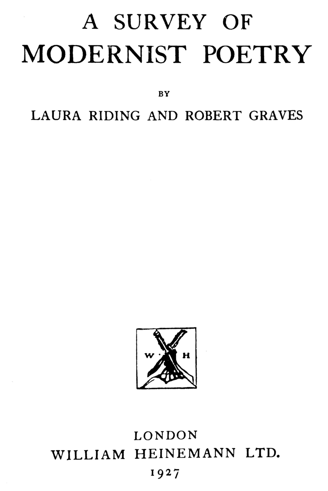

Title: A survey of modernist poetry
Author: Laura Riding
Robert Graves
Release date: June 27, 2025 [eBook #76401]
Language: English
Original publication: London: William Heinemann Ltd, 1927
Other information and formats: www.gutenberg.org/ebooks/76401
Credits: Hannah Wilson, Laura Natal and the Online Distributed Proofreading Team at https://www.pgdp.net (This file was produced from images generously made available by The Internet Archive)

BY
LAURA RIDING AND ROBERT GRAVES
LONDON
WILLIAM HEINEMANN LTD.
1927
This book represents a word-by-word collaboration; except for the last chapter, which is a revision by both authors for the purposes of this volume of an essay separately written and printed by one of them.
| CHAP. | PAGE | |
| I. | MODERNIST POETRY AND THE PLAIN READER’S RIGHTS | 9 |
| II. | THE PROBLEM OF FORM AND SUBJECT-MATTER IN MODERNIST POETRY |
35 |
| III. | WILLIAM SHAKESPEARE AND E. E. CUMMINGS: A STUDY IN ORIGINAL PUNCTUATION AND SPELLING |
59 |
| IV. | THE UNPOPULARITY OF MODERNIST POETRY WITH THE PLAIN READER |
83 |
| V. | MODERNIST POETRY AND DEAD MOVEMENTS | 110 |
| VI. | THE MAKING OF THE POEM | 131 |
| VII. | MODERNIST POETRY AND CIVILIZATION | 155 |
| VIII. | VARIETY IN MODERNIST POETRY | 189 |
| IX. | THE HUMOROUS ELEMENT IN MODERNIST POETRY | 223 |
| X. | CONCLUSION | 258 |
| INDEX | 293 |
[Pg 9]
IT must be assumed for the moment that poetry not characteristically “modernist” presents no difficulty to the plain reader; for the complaint against modernist poetry turns on its differences from traditional poetry. These differences would seem to justify themselves if their effect was to bring poetry any nearer the plain reader; even traditional poetry, it is sometimes charged, has a tendency to withdraw itself from the plain reader. But the sophistications of advanced modern poetry seem only to make the breach wider. In the poetry of E. E. Cummings, for example, who may be considered conveniently to illustrate the divorce of advanced contemporary poetry from the common-sense standards of ordinary intelligence, is to be found apparently not only a disregard of this intelligence, but an insult to it. Such poetry seems to say: “Keep out. This is a private performance.”
[Pg 10]
What we have to do, then, is to discover whether or not the poet means to keep the public out. If, after a careful examination of poems that seem to be only part of the game of high-brow baiting low-brow, they still resist all reasonable efforts, then we must conclude that such work is, after all, merely a joke at the plain reader’s expense and let him return to his newspapers and to his Shakespeare (who we are for the moment assuming is understood without difficulty). But if, on the other hand, we are able to get out of these poems the experiences we are accustomed to expect of poetry, or at least see that the poet originally wrote them as poetry and not as literary tricks, then the plain reader must make certain important alterations in his critical attitude. In the first place, he must admit that what is called our common intelligence is the mind in its least active state: that poetry obviously demands a more vigorous imaginative effort than the plain reader has been willing to apply to it; and that, if anthologies compiled to refresh tired minds have indulged his lazy reading habits, the poet can be excused for using exceptional means to make him do justice to his poems, even for inventing a new kind of poem in this end. Next he must wonder whether such innovations have not a real place in the normal course of poetry-writing. Finally, if[Pg 11] these things are so, he must question the depth of his understanding of the poetry which, like Shakespeare’s, is taken for granted and ask whether a poet like E. E. Cummings must not be accepted, if not for his own sake, at least for his effect on the future reading of poetry of any age or style.
To begin with, we shall choose one of E. E. Cummings’ earlier and simpler poems, one which will nevertheless excite much the same hostility as his later work. It is unusually suitable for analysis, because it is on just the kind of subject that the plain reader looks for in poetry. It appears, moreover, in Mr. Louis Untermeyer’s popular Anthology of Modern American Poetry side by side with the work of poets more willing than E. E. Cummings to defer to the intelligence-level of the plain reader. It is all the more important to study, because Mr. Untermeyer seems personally hostile to Cummings’ work and yet to have been forced by the pressure of more advanced critical opinion to include it in a book where modernism in poetry means, in Mr. Untermeyer’s own definition, simplicity (“the use of the language of everyday speech” and the discarding of that poetical padding which the plain reader and the plain critic enjoy more than Mr. Untermeyer would admit). But Mr. Untermeyer is speaking of a modernism no longer[Pg 12] modern, that of such dead movements as Georgianism and Imagism which were supposedly undertaken in the interests of the plain reader. We are dealing here with a modernism with apparently no feelings of obligation to the plain reader, undertaken, presumably, in the interests of poetry.
SUNSET
With so promising a title, what barriers does the poem raise between itself and the plain reader? In what respects does it seem to sin against the common intelligence? To begin with, the lines do not begin with capitals. The[Pg 13] spacing does not suggest any regular verse-form, though it seems to be systematic. No punctuation marks are used. There is no obvious grammar either of the prose or of the poetic kind. But even overlooking these technical oddities, it still seems impossible to read the poem as a logical sequence. A great many words essential to the coherence of the ideas suggested have been deliberately omitted; and the entire effect is so sketchy that the poem might be made to mean almost anything or nothing. If the author once had a precise meaning it was lost in the writing of the poem. Let us, however, assume for the sake of this argument that it is possible to discover the original poem at the back of the poet’s mind; or at least to gather enough material from the poem as it stands from which to make a poem that would satisfy all formal requirements, the poem that Cummings perhaps meant to hint at with these fragments. Just as the naturalist Cuvier could reconstruct an extinct animal in full anatomical detail from a single tooth, let us restore this extinct poem from what Cummings has permitted to survive.
First we must decide if there are not positive features in the poem which make it possible to judge it in these respects as a formal poem and which should occur in any rewriting of the poem with much the same emphasis. The title might[Pg 14] undergo some amplification because of a veiled literary reference in lines five and six to Rémy De Gourmont’s Litanies De La Rose: it might reasonably include some acknowledgement of the poet’s debt to French influences, and read “Sunset Piece: After Reading Rémy De Gourmont”; although the original title Sunset would be no less literary. The heavy alliteration in s in the first seven lines, confirmed in the last by the solitary capitalized S, cannot be discarded. The context demands it—certain inevitable associations are connected with the words as they stand. The first word, stinging, taken alone suggests merely a sharp feeling; its purpose is only to prepare for the poem and supply an emotional source from which the other s ideas may derive. In the second line swarms develops the alliteration, at the same time colouring stinging with the association of golden bees and softening it with the suppressed idea of buzzing. We are now ready for the more tender s word, spires, in the third line. Silver, the single word of the fourth line, brings us back to the contrast between cold and warm in the first and second lines (stinging suggests cold in contrast with the various suggestions of warmth in the gold swarms) because silver reminds one of cold water as gold does of warm light. Two suppressed s words play behind the scenes in this first part of the[Pg 15] poem, both disguised in silver and gold, namely, sea and sun. Sea itself does not actually occur until the twelfth line, when the s alliteration has flagged: separated from alliterative associations, it becomes the definite image sea and the centre around which the poem is to be built up. But once it has appeared there is little more to be said; the poem trails off, closing with the large S echo of the last line. The hyphen before this S detaches it from dream and sets it apart as the alliterative summary of the poem; in a realistic sense -S might stand for the alternation of quiet and hiss in wave movement. As a formal closing it leaves us with a feeling like the one we started with, but less acute, because the z sound has prevailed over the s sound with which the poem was begun. The sunset is over, the final impression is darkness and sleep, though the -S vaguely returns to the two large S’s of the title.
Another feature which would recur in the rewriting is the slowing down of the rhythm in the last half of the poem, indicated by the shortening of the line and by the double spacing. In regular verse this would naturally mean line lengthening, the closing of a ten-syllabled line series with a twelve-syllabled couplet, for example. Though no end-rhymes occur in the poem as it stands, the rhyme element is undoubtedly strong. The only obvious rhyme sympathy is between[Pg 16] stinging and ringing, but many suppressed rhymes are present: not only swinging accompanying the idea of bells but other new rhyme suggestions such as bees and seas, bells and swells, spires and fires. In the rewritten poem a definite metrical scheme would have to be employed, but the choice would be governed by the character of the original poem. The rhythm would be gentle and simple, with few marked emphases. Monosyllables would prevail, with a noticeable recurrence of ing words; and bells would have to be repeated. Here, then, is a poem embodying the important elements of E. E. Cummings’ poem, but with each line starting with a capital, with normal spacing and punctuation, and with a regular verse-form. It contains no images not directly suggested by him, but links up grammatically what appeared to be an arrangement based on caprice.
SUNSET PIECE
After reading Rémy De Gourmont
This version shows that Cummings was bound to write the poem as he did in order to prevent it from becoming what we have made it. To write a new poem on an old subject like sunset and avoid all the obvious poetical formulas the poet must write in a new way if he is to evoke any fresh response in his readers at all. Not only does the rewritten poem demand much less attention than the first poem; but it is difficult to feel respect for a poem that is full of reminiscences not only of Rémy de Gourmont, but of Wordsworth (“To the imaginary sight”), Milton (in the metrical variations taken from L’Allegro), Messrs. Belloc and Chesterton (“Where jovial monks ...” etc.) and Tagore in English translation (“Dragging the waters like a fishing net”). Stale phrases such as “vesper wind” and “silver seas” have come to mean so little that they scarcely do their work in the poem. And yet we shall see that such phrases cannot be avoided if we are to revise the poem for the plain man. “White foam” is understood from the sea setting, the movement[Pg 18] of the poem, the cold hissing implied in the sequence of s’s. “Vesper wind” is suggested by sunset, spires, monks, bells, tall wind. “Salt air”, as well as resulting from the embrace of “white foam” and “vesper wind”, is built up from stinging, sea, and wind. The transformations are fairly obvious in the next three lines. “Imaginary sight” is necessary to remind the plain reader that the poem is not to be taken literally, a hint that E. E. Cummings disdained to give. It should be noticed that “imaginary” is the longest and slowest word in the poem but adds nothing to the picture; in fact, makes it less real. The seventh and eighth lines express the connection between bells and waves that Cummings leaves the reader to deduce, or not. The ninth line is the expansion of the rose idea demanded by the context: Monks, spires, litanies are all bound up with the Catholic symbolism of the rose; and in rewriting the poem it is impossible not to develop the literary associations of the rose as well (wafting, perfumes). The rose-windows of cathedrals are also obviously suggested. Unfortunately lewd, too strong a word for a formal sunset piece, has to be broken up into jovial and glutton, recalling the Christmas-annual type of monk. The analogy between great bells and fat monks has to be made definite, thus introducing gratuitous[Pg 19] words like mellow, bell-paunched, on their knees, etc. Instead of taking advantage of the natural associations in certain highly pictorial words, we have had to go over much unnecessary ground and ended by being merely dull and banal. In lengthening the metre in the last two lines to match the slowing down in the original piece it will be noticed how many superfluous words and images have had to be introduced here too. First of all, slow itself, as weakening to the concentration of the poem as the line “To the imaginary sight”. Then, “—how can my dreams forget—”, to account grammatically for the vivid present tense in which the whole poem is written, and to put dream in its more logical position, since in the original poem it is doing double duty for a specific image (fishing-net, following from dragging) and the vagueness with which the image is felt.
The conclusion to be drawn from this exercise might be that poems must in the future be written in the Cummings way if poetry is not to fall to pieces altogether. But the poetry of E. E. Cummings is clearly more important as a sign of local irritation in the poetic body than as the model for a new tradition. The important thing to recognize, in a time of popular though superficial education, is the necessity of emphasizing[Pg 20] to the reading public the differences between good and bad poems, just such differences as we have been pointing out here. Poems in such a time, indeed, may forget that they have any function other than to teach the proper approach to poetry: there is an exaggerated though excusable tendency to suspend the writing of all poetry not intentionally critical. (There are, of course, always exceptions: poets whose writing is so self-contained that it is not affected by stalenesses in traditional poetry or obliged to attack them or escape from them.) Cummings in this poem was really rewriting the other poem which we gave into a good poem. But for the rarer poet there is no ‘other poem’; there is only the poem which he writes. Cummings’ technique, indeed, if further and more systematically developed, would become so complicated that poetry would be no more than mechanical craftsmanship, the verse patterns growing so elaborate that the principal interest in them would be mathematical. In their present experimental stage, and only in their experimental stage, these patterns are undoubtedly suggestive. Poets, however, do not pursue innovations for their own sake. They are on the whole conservative in their methods so long as these ensure the proper security and delivery of the poem.
[Pg 21]
For the virtue of the poem is not in its being set down on paper, as a picture’s is in the way it is set down on canvas. Genius in the poet is a sympathy between different parts of his own mind, in the painter between his paint-brush and his canvas. Method in poetry is therefore not anything that can be talked about in terms of physical form. The poem is not the paper, not the type, not the spoken syllables. It is as invisible and as inaudible as thought; and the only method that the real poet is interested in using is one that will present the poem without making it either visible or audible, without turning it into a substitute for a picture or for music. But when conservatism of method, through its abuse by slack-minded poets, has come to mean the supplanting of the poem by an exercise in poet-craft, then there is a reasonable place for innovation, if the new method defeats the old method and brings up the important question: how should poetry be written? Once this question is asked, the new method has accomplished its end. Further than this it should not be allowed to go, for poems cannot be written from a formula. The principal value of a new method is that it can act as a strong deterrent against writing in a worn-out style. It is not suggested here that poets should imitate Cummings, but that poems like Cummings’ and the attention[Pg 22] they demand should make it harder for the standardized article to pass itself off as poetry. If we return to the two versions of the sunset piece, it will be seen just how this benefit is conferred. We may not accept the Cummings version, but once we have understood it we cannot return with satisfaction to the standardized one.
Turning back for a more direct comparison of these two versions, we perceive how much of the force of the original has been lost in the second. We have used capitals throughout as in formal verse, but have thus eliminated the large final S, which was one of the most important properties of the original, and given a look of unnecessary importance to words like And, To, and So. By substituting normal spacing and verse-form we have had to disregard the significance of the double spacing and indentation, and of the variation in the length of the lines. Formal indentation can either be a guide to rhyming pairs or a sign that the first part of a line is missing, but it cannot denote musical rests of varying value as with Cummings. We have also expanded the suggested ideas by grammatic means and supplemented them with the words that seemed to have been omitted. But in so doing we have sacrificed the compactness of the previous poem and introduced a[Pg 23] definiteness which is false to its carefully devised dreaminess. So by correcting the poem in those poetic features in which it seemed deficient we have not added anything to it but on the contrary detracted from it.
What, now, has happened to the formal features of the Cummings’ poem when reproduced in the rewritten poem? The expansion of the poem by the addition of the suppressed words has necessarily multiplied the number of s’s in the poem, because these suppressed words show a high proportion of s’s. This alliteration, sustained over several couplets, does not match the alliteration of the shorter poem, especially since we have been obliged to use many s’s that have no alliterative significance (“To windows rosy as the skies”). Neither has the gradual slowing down of the rhythm in the last half of the poem been effectively reproduced. In the actual poem the slowing down extends over the sestet of this fragmentary sonnet (the fragmentary line, -S, being an alliterative hang-over). But as in the formal treatment Cummings’ simple octave develops a prolixity which destroys the proper balance between it and its sestet, we have had to abandon the sonnet form and pack into two lines words which should have had the time-value of six. The best we have been able to do is to keep fourteen lines (or rather seven rhyming[Pg 24] couplets, one of which has an extra line). The rhymes, too, in the new poem have mutilated the sense: they express the remoteness of the scene by a series of echoes instead of by silences: for Cummings’ lines can definitely be regarded as sonnet-lines filled out with musical rests. So by putting the poem into a form in which a definite metrical scheme could be recognized we have entirely altered the character of the poem. We have not even been able to save the scraps of quite regular iambic rhythm with which we started.
Certain admissions must, therefore, be made. We have not only rejected the formal poem in favour of the Cummings poem: we have seen that the Cummings poem itself was an intensely formal poem. Indeed, its very technicalities caused it to be mistaken for a mere assemblage of words, a literary trick. But as it is apparently capable of yielding the kind of experiences customarily expected from poetry, in fact the most ordinary of such experiences, our conclusion must be that the plain reader’s approach to poetry is adequate only for poems as weak as the critical effort that he is ready to apply to them; and that Cummings, to disregard the satiric hilarity in which many of his poems are written, really means to write serious poetry and to have his poetry taken seriously, that is, read with the critical sympathy it deserves. The importance[Pg 25] of any new technical methods that he makes use of to bring this about lies not in their ultimate permanence or impermanence, but in their establishment of what the poet’s rights are in his poem: how free he is to proceed without regard to the inferior critical efforts to which the poem will probably be submitted. What, then, of the plain reader’s rights? They are, presumably, like the poet’s, whatever his intelligence is able to make them.
It must be admitted that excessive interest in the mere technique of the poem can become morbid both in the poet and the reader, like the composing and solving of cross-word puzzles. Once the sense of a poem with a technical soul, so to speak, is unriddled and its patterns plainly seen, it is not fit for re-reading; as with the Sphinx in the fable, allowing its riddle to be guessed is equivalent to suicide. A poem of this kind is nevertheless able to stave off death by continually revealing, under examination, an unexpected reserve of new riddles; and as long as it is able to supply these it can continue to live as a poem. Yet at some stage or other the end must come. If it is asked: “Is this really a poem?” the answer must be: “Yes, as long as one can go on discovering new surprises in it.” But clearly the surprises cannot last for ever; nor can we, as in the indestructible poem whose soul is not[Pg 26] technical, go back to the beginning and start all over again as with a new poem. The obvious weakness in the surprise-poem is that it encourages the reader to discover many things not consciously intended by the poem. But, while there is no way of being absolutely sure that the steps taken in unravelling the poem are the same as those involved in inventing the poem, the strength of such a poem is proved by the room it allows for surprises thus improvised by the reader, by the extent to which it is tactically disposed to resist critical attacks. As long as a poem is so disposed, it justifies itself. One thing we can be sure of, that this particular poem of E. E. Cummings was not examined in this way by Mr. Untermeyer. Otherwise he would not have included it as an example of poetry that “does not provoke the reader to anything more than irritation” in an anthology whose principal aim is to soothe, not irritate. He would have left it out, because it could no longer serve as a foil to the more formal poem, seeing that it was a formal poem.
How much more life is left in the poem at this point? Have we come to an end; or are there still further reasons why it should continue to be called a poem, since it is only a poem as long as there is a possibility of its yielding still more meaning? Did we not, without assuming[Pg 27] any formal verse-pattern, give a satisfactory explanation of the poem? Did we not also find it possible to give an entirely new view of it on the basis of its being a suppressed sonnet? Did we not accept the poem as a non-grammatic construction and make sense of it nevertheless? Could we not show it to be potentially or even actually grammatic and make sense of it because it was grammatic? By reading swarms and chants, which we have probably been regarding as nominative plural nouns, as third person singular verbs, and by reading silver and gold not as adjectives but as nouns? The poem would then stand grammatically as follows:
Nor could we allow ourselves to be stopped by the length of the poem, since by thus limiting the number of possible discoveries to its length we should be implying that the virtue of a poem was in its length. Even if we had exhausted all the possibilities in a poem of thirty-one words—the grammar, the metre and other technical aspects, the context and the association of images—we should still have the fact that the poem had thirty-one words, and perhaps find in[Pg 28] it another formalism. Can it be a coincidence that this is also the standard length of the tanka, the dominant verse-form in Japanese poetry—thirty-one syllables, each of word value? The Japanese influence is further intimated by Cummings’ tendency to suggest and symbolize rather than to express in full. In Japanese, according to the conventional arrangement of the thirty-one word-units in lines of five, seven, five, seven, seven, this poem would be set down like this:
But stronger than the Japanese influence in modern English and American poetry is the French, which in turn has borrowed so much from the Japanese. Mallarmé, the father of French symbolism, turned the art of suggestion in poetry into a science. He found the tradition of his national poetry so exhausted by sterile laws of prosody that he had to practise poetry as a science to avoid malpractising it as an art. Rimbaud, with all Mallarmé’s science behind him and endowed with a natural poetic mind as well, was able to practise poetry as an art again. Similarly Cummings and other experimentalists—Cummings is to be regarded rather as an[Pg 29] inspired amateur than a scientist—may be preparing the way for an English or American Rimbaud. As Paul Valéry, the French critic and poet, says of Mallarmé and Rimbaud, discussing their employment of the vehicles of sense in poetry: “What is only a system in Mallarmé becomes a domain in Rimbaud”. So modernist poets are developing resources by mechanical means to which a future poet will have easy access when he turns the newly opened-up territory into a personal poetic domain.
Although an elaborate system of poetry-writing can go into the making of a natural poet like Rimbaud, it may on the other hand end in mere preciousness, which in turn may harden into a convention as tyrannic as the one it was originally invented to criticize. There is more danger of this, however, in French poetry than in English. Paul Valéry has even been made a member of the French Academy, in recognition, presumably, of his formal influence on contemporary poetry. Like Cummings, although as classical in form as Cummings is romantic, he relies almost entirely on the effectiveness of images—on their power to evoke sensations and on their strangeness. To describe how night hid from Narcissus his own beloved image in the fountain, he says that[Pg 30] night slid between him and his image like “a knife shearing a fruit in two”. What he means is that Narcissus and the image form a whole as symmetrical as the two halves of an apple before they are divided. Cummings’ images are as strange and vivid as this (“gold swarms” or “ringing with rose”, for example); but we do not suggest making an academician of Cummings or calling his most recent and more methodical phase ‘Pope-ian’ as Valéry’s last phase is known by his admirers as ‘Racinian’, after the master craftsman of the most formal period in French poetry.
Modernist English poetry also imitates the French in the use of combinations of sounds to give a musical picture. This is, of course, no new thing in English poetry. Gray, one of the most traditional of all English poets, wishing to give the picture of slow and painful descent down a steep mountain, writes:
But this usage has never been applied except in occasional decoration, and even as such has been discouraged rather than encouraged by criticism. It may escape adverse criticism only where the combinations of sounds add musicalness without taking away from the meaning; but never[Pg 31] where they over-represent the meaning. For example, Milton’s Lycidas and Tennyson’s Blow, Bugle, Blow have been praised, because the predominance of l’s, m’s, n’s, and r’s in the former and the variation of vowel sounds in the latter please the ear by acting as a musical accompaniment to the idea and cannot be regarded as in any sense containing the idea itself. The only general principle implied in such practice is that poetry should be, where possible, as pleasing to the ear as to the mind. The danger in it is that it can have the effect of allowing the thought of the poem to be controlled by its ability to please musically, as in Victorian poetry.
But musicalness in modern French verse means something else, the treating of word-sounds as musical notes in which the meaning itself is to be found. This makes poetry curiously like acrostics and takes it even further from its natural course than Victorianism in its worst coloratura effects. The bond between the Victorian poet and his reader was at least an agreement between them of a common, though not an original, sentiment. The meaning of a poem was understood between them beforehand from the very title, and the persuasion of the word-music was intended to keep the poem vibrating in the memory long after it[Pg 32] had been read. The bond, however, between the French modernist poet and his reader is one of technical ingenuity, in the poet in setting the meaning down in combinations of sounds, in the reader in interpreting words as combinations of sounds rather than as words. Actually there is very little poetic thought in Victorian poetry because of the compromise it makes between ideas and their pleasurable expression. But the compromise in this other poetry, though less apparent, is still more destructive of poetic thought. It is between ideas and typography, and as such means the domination of ideas by mechanics. By giving the letters of words a separate personality we have a new psychology of letters entirely distinct from the psychology of images. A striking illustration of the attempt to reconcile these two psychologies is a poem of Rimbaud’s on the colours of the vowels. It is plain that the colours associated with vowels will vary widely with the person and may be determined by so irrelevant a cause as the colour of the alphabet blocks which one used as a child. A better case might perhaps be made for the meaning-associations of consonants, particularly of combinations of consonants such as st, as in stinging, strike, stench, to denote sharp assault, and the final nch, as in clinch, munch, wrench, to denote strain. But such imitation by the letters[Pg 33] of a word of its meaning is only occasional: it cannot be made a general rule. There are many more instances of letters out of harmony with word-meanings than in harmony with them. The word kiss. Is this iss any gentler than the iss of hiss? Or is the k in kiss gentler than the k of kick? Logically such a theory should mean that a French poem written in this way would produce the same effect on a person who did not understand French as on one who did.
When it is remembered how such theories fill the literary air, it will be realized what great restraint E. E. Cummings imposed on himself in the matter of alliteration and other tricks with letters. He would not, we feel, let such theories run away with him to the extent of forcing his choice of words to depend more on the sense of their sounds than on the sense of their images. His choice of swarms, for instance, is primarily determined by the three meanings combined in the word (the crowding sense, the bee-buzzing sense, and another hitherto not noted—the climbing sense associated with spires and the eye looking up to the light); not by the occurrence of s and z or by the presence of warm in swarms, though these are accidents of which he takes every advantage. And this is the way such things should happen in poetry, by coincidence. The poet appreciates and[Pg 34] confirms rather than elaborately stage-manages. A certain amount of superstitious faith in language is necessary if the poet is going to perform the sort of miracles expected of and natural to poetry.
[Pg 35]
MODERN French poetic theory lays a great deal of emphasis on the phonetic sense of words; and has done so increasingly since the Symbolists. For a long time, indeed, the French have been dissatisfied with the success of poetry as compared with other arts, and have attempted to remedy its supposed deficiencies by bringing it closer to music. To do this they have had to insist on a musical meaning accompanying the word-meaning, on introducing a system of letter-notation similar to musical notation. Three lines from Paul Valéry will illustrate this picture-making in poetry by the help of sounds:
Now, since we are able to recognise dissipe, conséquences, Principe, and Unité by their English parallels, we must rewrite these lines in some[Pg 36] practical phonetic notation which will completely divorce them from any associated meaning, if we would test their direct phonetic value:
This is the best rough phonetic approximation that we can make without the use of a formal phonetic system. We are immediately impressed by the recurrence of the strong s and the narrow ee sound, as we are supposed to be. This might denote a number of things: a man whetting a scythe, a child writing on a slate, or a serpent trying to talk. On the other hand, such sounds might have nothing to do with the subject; as in the couplet:
the s and ee sounds are contrary to the sense. Suppose, however, we did actually choose the idea of a serpent’s talking, as we were meant to. What, then, is our clue to what the serpent is talking about? Or are the lines merely meant to represent a serpent talking, without any collateral meaning? No. They represent, as a matter of fact, a serpent talking about God. But how are we to deduce God from the sound of the poem or know indeed when the alliteration[Pg 37] is to indicate the subject or the elocutionist? We must admit that for the special purpose of representing a serpent sneering at God such sound-combinations may be very wittily employed. But as a general thing a poetic practice like this becomes as tiresome and puerile as, say, the incessant puns and jokes of Goldsmith, Hood, or Calverley. Wit in poetry should be devoted to the irony in ideas rather than in phonetics. Phonetics, if they get the upper hand in a poem, turn it into an exercise in elocution.
But let us try another Valérian specimen, one in which there is no speaking in character:
Because murmurez and rumeur are suggestive of their meanings in English, we might be able to get something of the intended sense (the murmur of wind among leaves) and even make a good guess at the meaning of the other words; if only because we have Tennyson’s
as a classroom quotation to help us to it. Could we not, however, easily improvise a line of the same musical character but with a totally different meaning?
[Pg 38]
This line will show how misleading to the sense letters can be, and makes us suspect that the aim of such poetry as Valéry’s is to cast a musical enchantment unallied with the meaning of a poem. The meaning becomes merely a historical setting for the music, which the reader need or need not be aware of. We are made to feel that the poet would not object to his reader’s adopting the same attitude to his poems as his own Mme. Teste to lofty and abstract questions: instead of being bored by them, she was musically entertained by them. Valéry, perhaps realizing the strain put upon his reader by the preciousness of his images, holds his attention by the masterly skill of these musical distractions.
It is here important to understand the close connection between Paul Valéry and E. E. Cummings, and the question of impressionism. The chief claim of impressionism is that the realistic truth about anything may be conveyed better by the impressions it gives the observer, however disjointed or irrelevant these may seem, than by systematic reasoning or study. Impressionist poetry describes an object by creating in the reader the indefinite feelings he would have on seeing it, not by giving definite facts about it. This is a method in poetry first formally recommended by Poe, borrowed from him to justify and explain the things that began[Pg 39] to happen to French poetry with Baudelaire, and re-imported into America when French poetry had carried Poe’s theory far beyond his intentions, which had to do more with the sentiment than with the technical theory of poetry. Poe defined poetry as a combination of music and an idea, resulting in indefinite feelings. But this is, after all, only a re-statement of the most historically familiar definition of the aim of poetry: to create a pleasant effect on the reader; while formal impressionism aims at a technical correctness—it wishes the reader to have the same frame of mind as the poet had when he wrote, to help the reader to rewrite the poem for himself with the poet’s mind. These so-called ‘indefinite feelings’ of impressionism, therefore, must be expressed in painstakingly precise images, since the whole effect of the poem depends on an accurate identity of the reader’s feelings with the poet’s.
If, then, the poet practises impressionism according to its literal meaning, it is unfair to call him an impressionist in the loose, popular sense of the word. He rejects reason and logic as poetic aids, not because they lead to definite feelings, but because the feelings they lead to are not definite, not subtle enough for his purpose. ‘Indefinite’ should be understood in its opposite sense, namely, not to be defined[Pg 40] by the more ordinary methods of speech; so definite, in fact, that ordinary methods of measurement are not accurate enough. Images in poetry that seem strained and obscure are often like distances so small or so large that the foot-rule is of no use in measuring them, so that one has to work in abstract mathematics, though the distances are real. Suppose a poet wishes to describe a sunset. He can say in substance: “It was beautiful. The sea was flecked with gold as the sun sank into it. Above my head floated rosy clouds. At my feet hissed the silvery foam. Bells were ringing somewhere. There was a salt taste in the air and the evening wind blew slowly in from the sea as night drew on.” Or he can say: “It was beautiful. At first I felt invigorated. My eyes ached with the dazzle of the sun and the saltiness of the air. As I looked up to the rosy glory above me, a great religious feeling overcame me; I seemed in the presence of God. There was a ringing in my ears. I felt warm and cold at once. But after a time the wind made me feel sleepy, so I turned in.” Now it would be possible to call either of these poems impressionist in the colloquial sense, for they would record objectively or subjectively the poet’s impressions with a view to reproducing them in the reader. In reality, however, they would convey only a vague and[Pg 41] somewhat insincere atmosphere, as would a formalized version of Cummings’ early poem Sunset. For an actual experience of this sunset one would have to go to some such poem as Cummings’. In it would be found a complicated recipe for a sunset experience, as if for a pudding, not merely a description of what the pudding looked like or how it tasted. For such a method turns the reader into a poet.
This Sunset poem of Mr. Cummings, then, is not, strictly speaking, Mr. Cummings’ poem, but the poem of anybody who will be at pains to write it. What at first sight strikes the plain reader as external peculiarities that hindered him from approaching the meaning of the poem—its oddness of form—now appear to be the poet’s means of avoiding that conventional form which generally does stand between the reader and the poem. Indeed, if we look upon form as something distinct from the subject-matter of a poem, in this sense true impressionist poems are usually without form; or rather they are capable of having a new form with every reader. The poet blends the subject of the poem with the feelings that the subject arouses into one expression. This unity makes the poem a living whole; it is impressionistic, but not because the subject and the feelings it arouses become indefinite in[Pg 42] the combination. They make a blend, not a blur.
Looking on impressionism as one of the earliest manifestations of the general modernist tendency to overcome the distinction between subject-matter and form, we realize that Valéry draws the same old-fashioned line between music and idea that Poe did; that he subscribes, in fact, to the historically most familiar conception of poetry. He is a classicist in the musical associations he gives his poems, all intricately designed to create the indefinite feelings that he desires to arouse in the reader. Although in his choice of the images through which he conveys poetic ideas he is a modernist, the images apparently intended, that is, to arouse definite feelings, these feelings are really more like the physical sensation a thing gives than the idea of itself it gives. To these definite feelings provoked by the images, or, we might say, the thought, of a poem of Valéry’s, the indefinite feelings provoked by the sounds of the words form a musical background. In fact, paradoxically, it is in this musical background that the ideas are suggested rather than in the logical thought of the images. Valéry deliberately suppresses Reason in poetry; but he allows the musical background to make the logical connections between the images. And this is what[Pg 43] we mean by calling him a classicist in form and a modernist in the thought-content of his poems. He handles the modernist problem of achieving a unity between form and subject-matter by letting form suggest the subject of the poem and thought-content do all that form is ordinarily supposed to do. The only reason for calling this method impressionistic is that it does not and could not succeed in arriving at an ingenious balance between the two sets of feelings, definite and indefinite, which are supposed to combine to give the poetry meaning; all it results in is the vague blur that impressionism has come to stand for in its most derogatory sense.
Valéry is only one familiar contemporary example of these modern French theories of poetry which have had such an abnormal and unwholesome influence on the younger poets of America and England. In Cummings’ defence it should be said that, though his poetry by its immediate effect of oddness does invite labels, it is possible to understand it without reference to labels. Particularly as regards the label impressionism—it is not necessary to associate him with it in order to explain the poem Sunset; although as an impressionist he makes a very good case for impressionism. But any fairly good poet can be used to justify any practicable[Pg 44] theory of poetry, however inadequate a theory it may be by which to write poetry. Shakespeare, indeed, can be used to justify impressionism or any other poetic theory simply because he is such a good poet. It would be as reasonable to explain Shakespeare, who was independent of poetic theory, in terms of impressionism as by any of the poetic theories prevailing at his time. It would be wrong to overlook the influence on Shakespeare of contemporary theories, but it would be false to say that he wrote as he did from a conscious use of these theories. If Shakespeare had been critical in the way a good poet is generally supposed to be, then we should expect to find in Shakespeare merely evidences of well-chosen poetic theories. As a matter of fact, his work was such a clearing-house of good and bad elements in contemporary poetry and drama that they cannot have been introduced by any conscious critical choice.
It would be as absurd to say that Cummings sat down to write a poem with all the rules of impressionism before him as to say that Shakespeare sat down to write a play with all the theories of the so-called ‘university wits’ before him. These men—Lodge, Peele, Greene, Nashe, Lyly, and Marlowe—had to set themselves the deliberate task of compromising between the old popular type of play, which was very violent,[Pg 45] disorderly and exciting, and the new blank-verse play on the classical model, which was very orderly and very dull. They had for the time being to treat the drama as a scientific problem. But when we get past Marlowe’s early work and past Kyd’s Spanish Tragedy we find the drama no longer treated as a problem; it is already a successful convention; the London theatres are paying concerns, and Shakespeare, fortified by his long apprenticeship in these theatres, has nothing to worry about. These dramatic experimenters provided him with a legacy; but he was the natural heir to it by the right of his genius. What were conscious theories in the dramatists of the previous generation became in him native habits. We may say generally that there are no technical inventions in Shakespeare’s plays or sonnets. The nearest thing to invention in Shakespeare is his original use of other people’s inventions. The convention of the Court Fool, introduced by the wits to make a link between the old farcical play and the new classical tragedy, was no longer with Shakespeare mere comic relief, but a living, even a serious, part of the tragedy itself. Likewise with the sonnet: though pre-Elizabethan experiments with the sonnet, which little by little removed it from the Italian model, were made by Wyatt and Surrey, the Elizabethan sonnet is nevertheless called[Pg 46] after Shakespeare, in spite of the fact that Shakespeare made no new experiments with it, that by the time it reached him it had been successfully used by all the Elizabethan small fry. Yet the sonnet theory can be proved in Shakespeare’s sonnets as all pre-Shakespearian dramatic theories can be proved in his plays.
An undue prominence is given to poetic theories either when people who are not real poets are encouraged by the low state of poetry to try to write it themselves: such poets must obviously depend on theories in proportion as they are wanting in genius. Or when critics without any poetic sense attempt to explain changes in poetry to themselves and to the reading public. No genuine poet or artist ever called himself after a theory or invented a name for a theory. And it was surely a critic who first pointed out the distinction between subject-matter and form, and from this began to philosophize on form; as it is surely criticism which has always stood between poetry and the plain reader, made possible the writing of so much false poetry and, by granting too much respect to theories, lost the power of distinguishing between what is false and what is true.
The struggle on the part of poets to make subject-matter and form coincide in spite of criticism is an old one, as old, perhaps, as the[Pg 47] first critic. It should not be confused with attempts to make form suit subject-matter (as the Pindaric Ode was cast to contain any stately flattery); or to suit subject-matter to a popular form (as the sonnet has become a general utility form designed to do for a variety of subjects). The whole trend of modern poetry is toward treating poetry like a very sensitive substance which succeeds better when allowed to crystallize by itself than when put into prepared moulds: this is why modern criticism, deprived of its discussions of questions of form, tries to replace them by obscure metaphysical reflections. Modern poetry, that is, is groping for some principle of self-determination to be applied to the making of the poem—not lack of government, but government from within. Free verse was one of the largest movements toward this end. But it has too often meant not self-government but complete laissez-faire on the part of the poet, a licence to metrical anarchy instead of a harmonious enjoyment of liberty. Strangely enough, when we come upon an example of free verse that shows clearness and restraint and proportion, we do not think of it as free verse, though we do not think of it, on the other hand, as poetry of a traditional form. And this is as it should be. An example is the opening of a poem by Hart Crane, Passage:
[Pg 48]
The rhyme between sea and infancy is not strong enough to mislead one into construing this as a regular stanza. The impression of regularity comes from a careful alternation of images, from a regularity of design more fundamental than mere verse regularity. The authorized version of the Bible, in passages where the original text was in poetic form, is the most familiar example of this:
The effect of regularity is here again achieved by the recurrence of ideas in varying alternations to show the movement of the poem. As in Mr. Crane’s poem a parallelism exists between the first and third lines and the second and fourth, the third and fourth carrying the imaginative experience of the first and second to a more specialized meaning, from which the direction of the remainder of the poem may be taken; so in the Biblical lines quoted a parallelism[Pg 49] also exists between the beauty of Israel and the mighty, and between slain upon thy high places and fallen of the first and second lines. The scorn with which the last four lines here must be pronounced is obviously dictated by the ironic contrast between the high places of Israel and the streets of Gath and Askelon (the streets of these cities being generally trenches below ground-level) and between the beauty of Israel and the daughters of the Philistines. In Mr. Crane’s poem the sympathetic connection between the first four lines and the rest of the poem depends not so much on the general technical symmetry of the poem as on the use of the images directly stated in these lines in a more indirect and complicated sense in the following lines. Poetry so treated is nothing more than a single theme subjected to as many variations as its first or simplest statement will allow, even to the point where it ironically contradicts itself. There is in it no room for, and no reason for, a separate element of form. Obvious mechanical form imposed on a poem, unless the poem is deficient in the balance of its ideas, is like architectural dressing that spoils the natural proportions of a building and has not even structural usefulness.
How, now, does the question of form affect the long poem? Let us take Tennyson’s In[Pg 50] Memoriam, which embroiders the theme of his friend’s death in a sequence of episodes, and T. S. Eliot’s poem, The Waste Land, which enlarges the introductory theme of the death and decay implicit in Spring to embrace the death and decay implicit in all forms of hopeful human energy. In the first, the same rhymed stanza is maintained through all the varying moods of the poem; in the second the progress of the poem is marked by the most sensitive change—not only from episode to episode but from passage to passage. It is just at these delicate transitions from one atmosphere to another, where the separate parts are joined into a single continuous poem, that the poetic quality is to be looked for. No such transitions are to be found in Tennyson’s poem, or for that matter in a poem like the Aeneid: length in such poems means bulk. The poem is as long as the poet’s endurance and the reader’s patience permit.
Just how long this will be depends on the period in which it is written: we generally find long poems when poetic themes are limited to a few approved subjects, such as war, religion, lamentation or love. The length of the poem is then only a sign of the dignity of the subject. It has not until recent times been considered as something beside dignified bulk. A long poem was not thought to need the same unity as a[Pg 51] short poem: the unchanging metre was enough to keep the loosely connected parts of the poem together. This is the case with In Memoriam, where the different sections are digressive rather than progressive. But The Waste Land has to be read as a short poem: that is, as a unified whole. The reader can no more skip a passage in it than a line in a short poem and expect to understand the poem. For it is not a long poem in the usual sense of being a number of short poems in a uniform metre, joined by mere verse padding.
This formal rhymed stanza, reminiscent of Goldsmith, is by Mr. Eliot ironically applied to a sordid modern love-scene. We are to go from here back to a romantic picture of Queen Elizabeth and Leicester in amorous progress down the same Thames over whose waters the noise of this gramophone is now carried. How is the transition between these two passages made? The ten-syllabled iambic line of the stanza quoted turns into blank verse beginning with a romantic quotation from The Tempest, getting more and more ragged as the music is interrupted by the Thames-side noises, and[Pg 52] finally trailing off with syncopated phrases suggested by a mandoline.
The step is now made from the riverside to the river by allowing the rhythm to break up into short verse units proper to a river song.
The lyrical quality of this passage is, according to the poet’s explanatory note, to be associated with the song of the Rhinedaughters in Götterdämmerung. And this operatic atmosphere imposed on a modern river-scene makes the[Pg 53] fitting transition to the picture of Elizabeth and Leicester not in a barge foul with oil and tar but in a gilded state-barge:
In contrast with this apparently irregular transition, let us consider three successive sections of In Memoriam: 119, 120, 121. The first is a return in reverie to the early days in Cambridge when Tennyson and his dead friend were undergraduates. Arthur Hallam seems to stand before him as in life:
This stanza closes the first section. The next section continues in exactly the same metre. But not only are the sections separated by a double space and further cut off from each[Pg 54] other by a new numbering; when we begin to read section 120 we seem to be in an entirely different poem.
We find him here right in the midst of an elementary philosophical discussion of Darwinism and the materialistic conception of the universe. Apparently we are supposed to read in this the triumph of mind over matter as particularly shown by the poet’s persistence in regarding his friend as still alive. This may also be a reminiscence of undergraduate discussions on the same subject. But we only make these connections in default of a true connection between the texts of the separate sections. This is not a case of making the lazy reader think and work along with the poet, but of the lazy poet taking advantage of his reader’s faith and industry. The next section begins:
Here again no strict connection can be construed. That the section opens in this strain is probably due to a reaction against the prosy[Pg 55] scientific language he used in the previous section. Casting about for a more elegiac tone, the poet is naturally brought back to Milton’s Lycidas, from which he borrows the image of the setting sun, emblem of his dead friend. It is all very well to be able to account for Tennyson in this way. It does not, however, justify his binding together of random leaves from his poetic notebook into a long poem. The division into sections has certainly done away with the padding that would have been necessary had the poem been treated as a continuous piece without breaks. But it does not conceal the fact that these sections have no logical connection with one another. Deprive the poem of its sectional division; deprive it of its metrical regularity; and it will appear the loose and ill-assorted bundle of lost ideas it really is. Such feeble and false material would certainly not be tolerated in a poem which, like The Waste Land, had to invent its metrical changes as it went along. It is especially in the long poem that the distinction between form and subject-matter has the most vicious effect. In a short poem, even if form and subject-matter are not made identical, it is possible to keep them proper to each other: as in Milton’s L’Allegro. Compare this with its companion piece Il Penseroso, which is a praise of pensive melancholy as the former is a light-hearted[Pg 56] denial of melancholy; and the metre will be found to be identical, though it is used with a different effect in both.
is exactly the same metre as:
But in the first all is hurried, little punctuation is used; in the second all is slowed down, there is comparatively more punctuation, we get heavy internal rhymes, such as Ore laid with black staid, and the rhythm is further delayed by s’s used in close juxtaposition, as Goddes, sage, Whose saintly visage, etc. Neither the tripping movement nor the slow-pacing movement, however, could have been effectively kept up if the poems had been any longer. Certainly if they had been printed together as the two halves of a single poem, the contrastive use of the metre would have not been so striking, a greater uniformity would have been necessary.
[Pg 57]
It must be concluded from this that even more strictness is to be demanded of the long poem than of the short poem. A long poem must give good reason for its length, it must account strictly for every line. Often the greater part of a long poem would be more properly put in a prose footnote. The apology of a long poem should be: “I am really a long short poem”. Poe was the first modern critic to explode the dignity of the long poem of major poetry. In his The Poetic Principle he writes: “That degree of excitement which would entitle a poem to be so called at all, cannot be sustained throughout a composition of any great length. After the lapse of half an hour, at the very utmost, it flags—fails—a revulsion ensues—and then the poem is, in effect, and in fact, no longer such.” Although he saw that the long poem was of necessity weak in structure, that length in itself was destructive of poetic form; by form he meant that regular form imposed on subject-matter which we have here been questioning in both the short and long poem. Modernist poetry seems to be composed chiefly of short poems—The Waste Land, one of the longest modernist poems, is only 433 lines long. But this is not because of a belief in the short poem per se as against the long poem. It is rather a result of a feeling that form and subject-matter[Pg 58] are structurally identical; which affects the short and the long poem alike. Well-controlled irregularity instead of uncontrollable regularity makes short and long obsolete critical standards. The very purpose of this ‘irregularity’ is to let the poem find its own natural size in spite of the demands put upon poetry by critics, booksellers and the general reading public.
[Pg 59]
THE objections that are raised against the ‘freakishness’ of modernist poetry are usually supported by quotations from poems by E. E. Cummings and others which are not only difficult in construction and reference but are printed queerly on the page. The reader naturally looks for certain land-marks in the poem before he can begin to enjoy it: as the visitor to Paris naturally sets his mental map of the city by the Eiffel Tower and, if the Eiffel Tower were to collapse, would have a difficult time finding his way about for a few days. Modernist poets have removed the well-known land-marks and the reader is likewise bothered. The reasons given for this removal are that land-marks tend to make paths, that paths grow to roads, that roads soon mean walls and railings, and that the pedestrian or motorist, who must keep to the roads, never sees any new scenery.
[Pg 60]
This is the beginning of one of Mr. Cummings’ poems. The first obvious oddity is the degrading of the personal pronoun ‘I’ into ‘i’. This has a very simple history. The ‘upper case’ was in mediaeval times used for all nouns and proper names and the adjectives formed from them; for the Deity; for Royalty (in ‘We’ and ‘Our’); for certain quasi-divine abstractions such as Mystery, Power, Poetry; and sometimes for ‘She’ and ‘Thou’ and so on, where love gives the pronoun a quasi-divine character. Mr. Cummings protests against the upper case being also allotted to ‘I’: he affects a casualness, a humility, a denial of the idea of personal immortality responsible for ‘I’. Moreover ‘i’ is more detached: it dissociates the author from the speaker of the poem. This use of ‘i’ is in keeping with his use of the word ‘who’, instead of ‘which’, to qualify the roses; the roses become so personal as to deserve the personal rather than the neutral relative. His next idiosyncrasy is his refusal of a capital letter to each new line of the poem.[Pg 61] Now, if this convention were not so ancient, it would seem as odd and unnecessary as, for instance, quotation-marks seem in eighteenth-century books enclosing each line of a long speech instead of occurring only at the beginning and end of a passage. The modernist rejection of the initial capital can be justified on the grounds that it gives the first word of each line, which may be a mere ‘and’ or ‘or’, an unnatural emphasis. If for special reasons the poet wishes to capitalize the first word, the fact that it is anyhow capitalized like all the other initial ‘And’s’ and ‘Or’s’ makes any such niceness impossible. Later in the poem Cummings uses the capital letter at the beginning of a new sentence to call attention to the full-stop which might otherwise be missed: but the ‘because’ at the beginning of the poem need not be capitalized because it obviously is the beginning. Similarly, he has suppressed the conventional comma after ‘lady’ because the end of the line makes a natural pause without punctuation. Commas he uses to mark pauses, not merely as the geographical boundaries of a clause. He has even in another poem inserted one between the ‘n’ and ‘g’ of the word ‘falling’ to suggest the slowness of the falling. Colons and semicolons and full stops he uses to mark pauses of varying length. To give a longer[Pg 62] pause still he will leave a blank line. In the quotation just given, the new line at ‘remembering’ is to mark a change of tone, though the pause is not longer than a semicolon’s worth. Parentheses he uses for sotto voce pronunciation; or, if they occur in the middle of the word, as in “the taxi-man p(ee)ps his whistle”, they denote a certain quality of the letters enclosed—here the actual sharp whistling sound between the opening and closing (the two p’s) of the taxi-man’s lips. When this system is carried to a point of great accuracy we find lines like the following:
which, quoted detached from their context, seem to support any charge of irrational freakishness, but in their context are completely intelligible. Moreover, Mr. Cummings is protecting himself against future liberties which printers and editors may take with his work, by using a personal typographical system which it will be impossible to revise without destroying the poem.
It may be that he has learned a lesson from the fate that has overtaken Shakespeare’s sonnets: in which not only have changes in spelling and pronunciation been used to justify the liberties that have been taken in ‘modernizing’ the texts; but certain very occasional and obvious[Pg 63] printer’s errors in the only edition printed in Shakespeare’s lifetime have been made the excuse for hundreds of quite unjustifiable emendations. Mr. Cummings and Shakespeare have in common a deadly accuracy, and that accuracy makes poems difficult rather than easy. It is this accuracy that frightens Mr. Cummings’ public, it was Shakespeare’s accuracy that provoked his editors to meddle with his texts as being too incomprehensible as they were written. Actually we shall find that Shakespeare is more difficult than Mr. Cummings in thought, though his poems have a more familiar look on the page: Mr. Cummings expresses with an accuracy peculiar to him what is common to everyone, Shakespeare expresses in the conventional form of the time, with greater accuracy, what is peculiar to himself. Let us print two versions of a sonnet by Shakespeare, first the version found in the Oxford Book of English Verse and other popular anthologies which have apparently chosen this sonnet from all the others as being particularly easy to understand, and next the version printed in the 1609 edition of the Sonnets, and apparently, though pirated, printed from Shakespeare’s original manuscript. The alterations, it will be noticed in a comparison of the first with the second, are, with a few exceptions which we will point out later, chiefly in the[Pg 64] punctuation and spelling. By showing what great difference in the sense the juggling of punctuation marks has made in Shakespeare’s original sonnet, we shall perhaps be able to sympathize somewhat with what seems typographical perversity in a poet like Mr. Cummings. The modernizing of the spelling is not quite so serious a matter, though we shall see that to change a word like blouddy to bloody makes a difference not only in the atmosphere of the word but in its sound as well.
I
II
(No. 129)
Let our method first be, before trying to match our own intelligence with Shakespeare’s intelligence, to compare these two versions, the original one and the modern one, in order to feel as intimate with the language in which the poem was written as if all these years did not stand between ourselves and Shakespeare. First, then, as to the spelling. As a matter of course the u in proud and heauen changes to v; the Elizabethans had no typographical v. There are other words in which the change of spelling does not seem to matter. Expence, cruell, bayt, layd, pursut, blisse, proofe, wo—any of these words taken by themselves are not necessarily affected by modernization; but undoubtedly much of the original atmosphere of the poem is lost by changing them in the gross. Sheer facility in reading a poem is no gain when we are trying to discover what the poem was like for the poet. And when one considers all that[Pg 66] has happened to the language since Shakespeare’s time one can understand why Mr. Cummings should set his poems down so that when read they are read as ‘in the original’. But other changes to make this sonnet comprehensible to modern readers have involved more than changes in spelling. Periurd to perjured would have meant, to Shakespeare, the addition of another syllable, as murdrous to murderous. Injoyd, with the same number of syllables as periurd, is however made Enjoy’d; while swollowed, which must have been meant as a three-syllabled word (Shakespeare used ed as a separate syllable very strictly and did frequently allow himself an extra syllable in his iambic foot) is printed swallow’d. When we come to dispised, we find in the modern version an accent over the last syllable. By apostrophes and accents and changes of spelling the rhythm and the consistency in spelling of the original is sacrificed; and without making it an easier poem, only a less accurate one. The sound of the poem suffers through respelling as well as through false alterations in the rhythm. Blouddy was pronounced more like blue-dy than bluddy; the ea of extreame and dreame were sounded like the ea in great; Injoyd was pronounced as it was written; periurd was probably pronounced peryurd. But the changes in punctuation do the most damage: not only to the personal[Pg 67] atmosphere of the poem but to the meaning itself. In the second line a semicolon after the first action instead of a comma gives a longer rest than Shakespeare gave; but it also cuts off the idea at action instead of keeping in action and till action together as well as the two lust’s. A comma after blouddy separates it from full with which it really forms a single word meaning “full as with blood”. Next come several semicolons for commas; these introduce pauses which break up the continuous flow of ideas treading on one another’s heels. (If Shakespeare had wanted such pauses he would have used semicolons as he does elsewhere.) Particularly serious is the interpolation of a comma after no sooner had; for this confines the phrase to a special meaning, i.e. “lust no sooner had is hated past reason,” whereas it also means “lust no sooner had past reason is hated past reason”. The comma might as well have been put between reason and hated; it would have limited the meaning but no more than has been done. On the other hand a comma is omitted where Shakespeare actually did put one, after bayt. With the comma, On purpose layd—though it refers to bayt—also takes us back to the original idea of lust; without the comma it merely carries out the figure of bayt. In the original there is a full stop at mad, closing the octave; in the revised version a colon is used,[Pg 68] making the next line run right on and causing the unpardonable change from Made to Mad. The capital I of In shows how carefully the printer copied the manuscript. Shakespeare undoubtedly first wrote the line without Made, but probably deciding that such an irregular line was too bold, added Made without changing the capital I to a small one. Made logically follows from make of the preceding line: ‘to make the taker mad, Made (mad)’; but it also returns to the general idea of lust. This change from Made to Mad limits the final so of this line to Mad and provokes another change from comma to semicolon, i.e. ‘Mad in pursut and in possession so (mad)’, whereas the idea of Mad is only vaguely echoed in this line from the preceding line. The meaning of the line might reasonably be restricted to: ‘Made In pursut and in possession as follows’: since it is the first line of the sestet, it is more likely to refer forward than back. As a matter of fact, it does both.
The comma between in quest and to have extreame has been moved forward to separate have from extreame. The line originally stood for a number of interwoven meanings:
1. The taker of the bait, the man in pursuit and in possession of lust, is made mad, is made like this: he experiences both extremes at once. (What these extremes are the lines following show.)
[Pg 69]
2. The Had, having, and in quest, might have been written in parentheses if Shakespeare had used parentheses. They say, by way of interjection, that lust comprises all the stages of lust: the after-lust period (Had), the actual experience of lust (having), and the anticipation of lust (in quest); and that the extremes of lust are felt in all these stages (to have extreame, i.e. to have extremes, to have in extreme degrees).
3. Further, one stage in lust is like the others, as extreme as the others. All the distinctions made in the poem between lust in action and lust till action, between lust In pursut and lust in possession are made to show that in the end there are no real distinctions. Had, having and in quest is the summing up of this fact.
4. The Had, having, separately sum up possession: that is, the action of lust includes the expence of Spirit, the waste of shame. The in quest, naturally refers to In pursut.
5. It must be kept in mind throughout that words qualifying the lust-business refer interchangeably to the taker (the man who lusts), the bait (the object of lust) and lust in the abstract. So: Had may mean the swallowing of the bait by the taker, or the catching of the taker by the bait, or ‘lust had’, or ‘had by lust’; having and in quest are capable of similar interpretations.
[Pg 70]
These are the numerous possibilities in the line if the original punctuation is kept. But in the revised punctuation it has only one narrow sense, and this not precisely Shakespeare’s intention. By the semicolon placed after so of the preceding line, it is cut off from close co-operation both with the line before and the other preceding lines. By the shifting of the comma not only is a pause removed where Shakespeare put one and the rhythm thus changed, but the line itself loses its point and really does not pull its weight in the poem. In this punctuation the whole line ought to be put into parentheses, as being a mere repetition. The to have linked with in quest is superfluous; extreme set off by itself like this is merely a descriptive adjective already used. Moreover, when the line is thus isolated between two semicolons (after so, after extreme) Had, having, etc., instead of effecting a harmony between the various senses given to lust (taker, bait, lust in the abstract), disjoint them and become ungrammatical. Mad in pursuit, and in possession so; only refers to the taker mad. A bliss in proof, and proved, a very woe; can only refer to lust in the abstract. Thus this intervening line is just a pompous confusion. The next line (A blisse in proofe and provd and very wo,) should explain to have extreame; it is not merely another parenthetical line as in the revised[Pg 71] version. To fulfil the paradox implied in extreame it should mean that lust is a bliss during the proof and after the proof, and also very wo (real woe) during and after the proof. The altered line only means that lust is a bliss during the proof but a woe after the proof, denying what Shakespeare has been at pains to show all along, that lust is all things at all times. Once the editors tried to repunctuate the line they had to tamper with words themselves in the text. A comma after proof demanded a comma after proved. A comma after proved made it necessary to change and very wo to apply to provd only. Another semicolon at the end of this line again detaches a line and further breaks the continuity of the poem. Specifically, by cutting off the following line from itself, it in turn does to the following line what the preceding line did to it: makes it only another antithesis or rhetorical balance (‘a joy in prospect, as against a dream in retrospect’, to repeat the sense of a bliss during proof as against a woe after proof) instead of permitting it to carry on the intricate and careful argument that runs without a stop through the whole sestet. The important thing about this line is that it takes all the meanings in the poem one stage further. Lust in the extreme goes beyond both bliss and woe; it goes beyond reality. It is no longer lust Had, having and in[Pg 72] quest, it is lust face to face with love. Even when consummated, lust still stands before an unconsummated joy, a proposed joy, and proposed not as a joy possible of consummation but one only to be desired through the dream by which lust leads itself on, the dream behind which this proposed joy, this love, seems to lie. This is the final meaning of the line. It is inlaid with other meanings, but these should follow naturally from the complete meaning, it should not be built up from them. For example the line may also be read: “Before a joy (lust) can be proposed, there must be a dream behind, a joy lost by waking” (“So that I wake and cry to dream again”); or: “Before a joy can be proposed, it must first be renounced as a joy, it must be put behind as a dream; you know in the pursuit that possession is impossible”; or: “Before the man, in lust is a prospect of joy, yet he knows by experience that this is only a dream”; or: “Beforehand he says that he definitely proposed lust to be a joy, afterwards he says that it came as a dream”; or: “Before (in face of) a joy proposed only as a consequence of a dream, with a dream pushing him from behind”. All these and even more readings of the line are possible and legitimate, and each reading could in turn be made specially to explain why the taker is made mad or how lust is to have extreme or why it is both[Pg 73] a bliss and very wo. The punctuated line in the revised version, cut off from what has gone before and from what follows, can only mean: ‘In prospect, lust is a joy; in retrospect, a dream.’ Though a possible contributory meaning, as the only meaning it makes the theme of the poem that lust is impossible of satisfaction, whereas the theme is, as carried on by the next line, that lust as lust is satisfiable but that satisfied lust is in conflict with itself. The next line, if unpunctuated except for the comma Shakespeare put at the end, is a general statement of this conflict: the man in lust is torn between lust as he well-knows it with the world and lust in his personal experience, which crazes him to hope for more than lust from lust. The force of the second well is to deny the first well: no one really knows anything of lust except in personal experience, and only through personal experience can lust be known well rather than “well-known”. But separate the second well from the first, as in the revised version, and the direct opposition between world and none, well knowes and knowes well is destroyed, as well as the whole point of the word-play between well knowes and knowes well; for by the removal of the comma after the second well, this is made merely an adverb to modify To shun in the following line—well here means merely successfully with To[Pg 74] shun, not well enough with knowes. This repunctuation also robs All this of its real significance, as it refers not only to all that has gone before but to the last line as well: “All this the world well knows yet all this none knows well” (i.e. the character of lust), and “All this the world well knows yet none knows well” the moral to be drawn from the character of lust (i.e. to shun the heaven that leads men to this hell). The character and the moral of lust the whole world well knows, but no one knows the character and the moral really well unless he disregards the moral warning and engages in lust, no one knows lust well enough to shun it because, though he knows it is both heavenly and hellish, lust can never be recognized until it has proved itself lust by turning heaven into hell.
The effect of this revised punctuation has been to restrict meanings to special interpretations of special words. Shakespeare’s punctuation allows the variety of meanings he actually intends; if we must choose any one meaning, then we owe it to Shakespeare to choose at least one he intended and one embracing as many meanings as possible, that is, the most difficult meaning. It is always the most difficult meaning that is the most final. (There are degrees of finality because no prose interpretation of poetry can have complete finality, can be difficult[Pg 75] enough.) Shakespeare’s emendators, in trying to make him clear for the plain man, only weakened and diluted his poetry. Their attempts to make Shakespeare easy resulted only in depriving him of clarity. There is but one way to make Shakespeare clear: to print him as he wrote or as near as one can get to this. Making poetry easy for the reader should mean showing clearly that it is difficult.
Mr. Cummings makes himself safe from emendation by setting down his poems, which are really easy as poetry, so that their most difficult sense strikes the reader first. By giving typography an active part to play he makes his poems fixed and accurate in a way that Shakespeare’s are not. In doing this he loses the fluidity Shakespeare got by not cramping his poems with heavy punctuation and by placing more trust in the plain reader—by leaving more to his imagination than he seems to have deserved. The trouble with Mr. Cummings’ poems is that they are too clear, once the plain reader puts himself to work on them. Braced as they are, they do not present the eternal difficulties that make poems immortal, they merely show one difficulty, how difficult it is for Mr. Cummings or for any poet to stabilize a poem once and for all. Punctuation marks in Mr. Cummings’ poetry are the bolts and axels[Pg 76] that make the poem a methodic and fool-proof piece of machinery requiring common-sense for its operation rather than imagination. The outcry against his typography shows that it is as difficult to engage the common-sense of the reader as his imagination. A reviewer of Mr. Cumming’s latest book, “is 5”, writes:
I know artists are always saying that a good painting looks as well upside down as any other way. And it may be true. The question now arises: does the same principle apply to a poem? But it is not necessary to answer the question; if a poem is good, people will gladly stand on their heads to read it. It is conceivable, if not probable, that the favourite poetic form of the future will be a sonnet arranged as a cross-word puzzle. If there were no other way of getting at Shakespeare’s sonnets than by solving a cross-word puzzle sequence, I am sure the puzzles would be solved and the sonnets enjoyed. But what about Mr. Cummings? Can his poems surmount such obstacles? Well, perhaps if they cannot survive as poems they can survive as puzzles.
This may be the immediate verdict on Mr. Cummings’ typography; but one thing Cummings can be sure of that Shakespeare could not[Pg 77] have been sure of, is that three centuries hence his poems if they survive (and worse poets’ have) will be the only ones of the early twentieth century reprinted in facsimile, not merely because he will be a literary curiosity but because he has edited his poems with punctuation beyond any possibility of re-editing. The Shakespeare to whose sonnets this reviewer makes a rhetorical appeal is the popular Shakespeare of the anthologies and not the facsimile Shakespeare. How many of those who read this had ever before read sonnet 129 in the original? So few, surely, that it is safe to conclude that no one is willing to stand on his head to understand Shakespeare, that everyone wants a simplified Shakespeare as well as a simplified Cummings. Indeed, very few people can have looked at Shakespeare’s sonnets in the original since the eighteenth century, when the popular interest in Shakespeare’s more high-spirited comedies sent a few dull commentators and book-makers to his poems. In 1766 George Steevens printed the Sonnets in the original and without annotations apparently because he thought they were not worth them. Twenty-seven years later he omitted the Sonnets from an edition of Shakespeare’s works “because the strongest Act of Parliament that could be framed would fail to compel readers into their service”. People were certainly not more ready[Pg 78] to stand on their heads to understand Shakespeare in that time than in this and Malone, who undertook in 1780 to justify Shakespeare to an apathetic public by simplifying the difficult originals (cross-word puzzles, if you like), was considered by Steevens to be “disgracing his implements of criticism by the objects of their culture”. Steevens’ view was the general one; (Chalmers reaffirmed it in 1810), and if Malone by his emendations, which have become the accepted Shakespearian text, had not overridden the general critical opinion of the Sonnets and presented them fileted to the plain man, the plain man of to-day would undoubtedly be unaware of the existence of the Sonnets. Unlike Cummings’ poems, Shakespeare’s Sonnets would not even have “survived as puzzles”.
Thus far does a study of the typography of Shakespeare take one. The lesson of this for modernist poetry is an appreciation of the difficulties of a poet with a large audience to whom his meanings are mysteries and for the most part must remain mysteries. The modernist poet handles the problem by trying to get the most out of his audience; Shakespeare by trying to get the most out of his poem. Logically, the modernist poet should have more readers than Shakespeare with an elementary understanding of his poems, and Shakespeare only a few readers,[Pg 79] but these with an enlarged understanding of his poems. The reverse, however, is true because the reading public has been so undertrained on a simplified Shakespeare and on anthology verse generally, that modernist poetry seems as difficult as Shakespeare really ought to seem. Typography, we see, then, is really the subject of the fate of poetry with its audience. Since it is, even at its worst, the least disturbing method of communication, both for the ideas communicated and for the audience, it is still the surest guide to the understanding of a poem that we have—even when the typography of a poem has been through a whole history of misunderstanding.
Only a few points in sonnet 129 have been left uncovered in our typographical survey of the poem, and these occur principally in the first few lines; for these suffer less from emendations than the rest of the poem. The very delicate interrelation of the words of the first two lines should not be overlooked: the strong parallelism between expense and waste and Spirit and shame expressing in the very first line the terrible quick-change from lust as lust-enjoyed to lust as lust-despised; the double meaning of waste as ‘expense’ and as ‘wilderness’, the waste place in which the Spirit is wasted; the double meaning of expense as ‘pouring out’ and as the ‘price paid’; the double meaning of of shame as[Pg 80] ‘shameful’, i.e. ‘deplorable’ and as ashamed, i.e. ‘self-deploring’; the double meaning of shame itself as ‘modesty’ and ‘disgrace’; again the double meaning of lust in action as ‘lust’ unsuspected by man ‘in his actions’ because disguised as ‘shame’ (in either sense of the word) and condemned by him because he does not recognize it in himself, and as ‘lust in progress’ as opposed to ‘lust contemplated’. All these alternate meanings acting on each other, and even other possible interpretations of words and phrases, make as it were a furiously dynamic cross-word puzzle which can be read in many directions at once, none of the senses being incompatible with any others. This intensified inbreeding of words continues through the rest of the poem. Periurd is another obvious example, meaning both ‘falsely spoken of’ and ‘false’. Again, heaven and hell have the ordinary prose meaning of ‘pleasure’ and ‘pain’, but also the particular meanings they had in Shakespeare’s poetic vocabulary. ‘Heaven’ to Shakespeare is the longing for a temperamental stability which at the same time he recognizes as false. ‘Hell’ is Marlowe’s hell, which
The reader complaining of the obscurity of modernist poets must be reminded of the intimate[Pg 81] Shakespearian background he needs to be familiar with before he can understand Shakespeare. The failure of imagination and knowledge in Shakespeare’s emendators has reduced Shakespeare to the indignity of being easy for everybody. Beddoes, an early nineteenth century imitator of Shakespeare, said:
About Shakespeare. You might just as well attempt to remodel the seasons and the laws of life and death as to alter one “jot or tittle” of his eternal thoughts. ‘A Star’, you call him. If he was a star all the other stage-scribblers can hardly be considered a constellation of brass buttons.
The modernist poets are not many of them Stars but they are most of them very highly polished brass buttons and are entitled to protect themselves from the sort of tarnishing from which Shakespeare, though a Star, has suffered.
Shakespeare’s attitude toward the perversely stupid reorganizing of lines and regrouping of ideas is jocularly shown in the satire on repunctuation given in the prologue of Pyramus and Thisbe in his A Midsummer Night’s Dream.
Bottom. If we offend, it is with our good will.
That you should think, we come not to offend,
But with good will. To show our simple skill,
That is the true beginning of our end.[Pg 82]
Consider, then, we come but in despite.
We do not come, as minding to content you,
Our true intent is. All for your delight,
We are not here. That you should here repent you
The actors are at hand; and by their show,
You should know all, that you are like to know.
Theseus.—This fellow doth not stand upon points. His speech was like a tangled chain, nothing impaired but all disordered.
[Pg 83]
THE eighteenth-century reading public had poetry made clear for it, both by the way in which new poetry was written and previous poetry, early English and Classical, rewritten. But the eighteenth century had a very limited recipe for poetry; for metre the heroic couplet, which broke thought up into very short lengths; for language a stock poetical vocabulary of not more than a couple of thousand words. Anybody could write poetry then if he obeyed the rules, without necessarily being a poet. In the nineteenth century, because of a reading public enlarged by democracy, clearness meant not so much obeying rules as writing for the largest possible audience. The twentieth-century reaction in poetry against nineteenth-century standards is not against clearness and simplicity but against rules for poetry made by the reading public, instead of by the poets themselves as they were in the eighteenth century. This is[Pg 84] why so many modern poets are forced to feel themselves in snobbish sympathy with the eighteenth century. The quarrel now is between the reading public and the modernist poet over the definition of clearness. Both agree that perfect clearness is the end of poetry, but the reading public insists that no poetry is clear except what it can understand at a glance; the modernist poet insists that the clearness of which the poetic mind is capable demands thought and language of a far greater sensitiveness and complexity than the enlarged reading public will permit it to use. To remain true to his conception of what poetry is, he has therefore to run the risk of seeming obscure or freakish, of having no reading public; even of writing what the reading public refuses to call poetry, in order to be a poet. The only fault to be found with a poet like E. E. Cummings is that he has tried to do two things at once: to remain loyal to the requirements of the poetic mind for clearness, and to get the ordinary reading public to call the result ‘poetry’. He has tried to do this by means of an elaborate system of typography, and the only gratitude he has had from the reading public is to be called freakish and obscure because of his typography.
The following is a poem describing day-break seen through a railway carriage window in Italy.
[Pg 85]
The cleverness of this as mere description can be shown by putting the poem into ordinary prose with conventional typography; and afterwards showing how the unconventional typography improves the accuracy of the description:
Among these red pieces of day (against which—and quite silently—hills made of blue and green paper, scorch-bending themselves, upcurve into anguish, climbing spiral, and disappear), satanic and blasé, a black goat lookingly wanders. There is nothing left of the world; but into this nothing “il trene per Roma signori?” jerkily rushes.
[Pg 86]
‘Red pieces of day’ suggests sunset fragments—the disintegration of the universe as the train moves toward night. The hills become as unreal as blue and green paper. The rocking of the train seems to give their rounded outlines, as they stream past, the sort of movement a long strip of paper makes when it curls up in the heat of fire, or that the pen makes when it writes u’s and e’s in copperplate handwriting. As the train comes close up to the hills their rounded outlines seem to spiral upward against the red pieces (‘into anguish’) because the eye strains itself looking up at them: they can only just be seen by pressing the face against the window, and as the train gets nearer still, they are no more visible. The eye is forced to drop to the foreground and there exchanges glances with a diabolic-looking goat. The traveller is utterly confused by these perceptual experiences: when the line of hills that he has been watching is snatched away from his eyes it seems like the end of the world, like death, and the goat seems like the Devil greeting the dead. He pulls himself together. “Where am I?” The movement of rocking and jerking continues. He remembers the last words he has heard spoken, the question “The Rome train, gentlemen?” which is all that he can think of to account for the motion.
[Pg 87]
This is not the prose summary of the poem, that is to say, the common-sense substitute for a piece of poetical extravagance. A prose summary cannot explain a poem, else the poet, if he were honest, would give the reader only a prose summary, and no poem. The above is rather the expansion, the dilution, even the destruction of the poem which one reader may perform for another if the latter is unable to face the intensity and compactness of the poem. The indignity of literary criticism is largely due to the fact that it has had to perform this levelling service for generations of plain readers. It has never yet performed any services for poetry itself, which it tries to suit either to philosophy or to the reader. Poetry cannot be judged by its adaptability to a philosophical system, and criticism’s services to the reader are doubtful. By encouraging him in his reading vanity and in his demand for poems to be written down to him it has reduced him to critical imbecility. Perhaps from the above expansion of the poem the spoiled reader may be able to infer the greater accuracy and truthfulness of the poetic version. The irregularity of the lines as printed in the poem is evidently intended to give two movements in one, the jerking and the rocking of the train. ‘Blueandgreen’ is printed as a single word to show that it is not parti-coloured paper[Pg 88] but paper which is blue and green at once, the colours run together by the rocking motion. ‘scorchbend ingthem’ represents the up-and-down rhythm of the diagonal spiral movement. ‘—selves—’ stresses the realistic character of this movement. The capitalized ‘U’ and ‘E’ enlarge the mounting copperplate curves. The parentheses enclosing the syllable ‘climb’ means perhaps a slight catch of the breath at that point. The comma after the ‘E’, the colon after ‘into’ are used as pauses of a certain length marking the rhythm of the spirals. The word ‘spiral’ is distended by hyphens to mark the final large spiral that sweeps the sky out of view at the letter ‘l’. ‘Satanic’ is capitalized to make the goat personally diabolic. The full stop after ‘jerk’ probably marks a sudden jolt back to a consciousness of the inside of the train and the purposefulness of the journey.
There is no experience here with which the plain reader cannot sympathise, and only a little imaginative recollection has been needed to make this analysis; no key from the author except the poem itself. The poem combines two qualities of clearness: clearness of composition in the interests of the poem as a thing in itself, clearness of transmittance in the interests of the reader. It is obvious that the poet could[Pg 89] have given the poem this double accuracy in no other way. Can it be that the poet has been wrong in paying too much attention to the rendering of the poem for the reader: that if he had allowed it to be more difficult, if he had concentrated exclusively on the poem as a thing in itself, it would have seemed less freakish?
The ‘freakishness’ and abnormality of feeling with which the modernist poet is often charged, it needs to be explained, are not due to the fact that this is not an age for poetry and that therefore to write poetry at all is a literary affectation. The trouble is rather that ordinary modern life is full of the stock-feelings and situations with which traditional poetry has continually fed popular sentiments; that the commonplaces of everyday speech are merely the relics of past poetry; so that the only way for a modern poet to have an original feeling or experience that may eventually become literature is to have it outside of literature. It is the general reading public, indeed, which gets its excitement from literature and literary feelings instead of from life. To appreciate this fully it must be realized that it is always the poets who are the real psychologists, that it is they who break down antiquated literary definitions of people’s feelings and make them or try to make them self-conscious about formerly ignored or obscure[Pg 90] mental processes; for which an entirely new vocabulary has to be invented. The appearance of freakishness generally means: poetry is not in a “poetical” period, it is in a psychological period. It is not trying to say “Things often felt but ne’er so well expressed” but to discover what it is we are really feeling.
One of the first modernist poets to feel the need of a clearness and accuracy in feelings and their expression so minute, so more than scientific, as to make of poetry a higher sort of psychology, was Gerard Manley Hopkins, a Catholic poet writing in the ’eighties. We call him a modernist in virtue of his extraordinary strictness in the use of words and the unconventional notation he used in setting them down so that they had to be understood as he meant them to be, or understood not at all (this is the crux of the whole question of the intelligibility of ‘difficult’ poetry). Hopkins cannot be accused of trying to antagonize the reading public. In 1883 he wrote about the typographical means he used in order to explain an unfamiliar metre and an unfamiliar grammar: “There must be some marks. Either I must invent a notation throughout, as in music, or else I must only mark where the reader is likely to mistake, and for the present this is what I shall do.” In 1885 he wrote again: “This is my difficulty, what marks to use and when to use[Pg 91] them: they are so much needed and yet so objectionable. About punctuation my mind is clear: I can give a rule for everything I write myself, and even for other people, though they might not agree with me perhaps.” These lines from a sonnet written in his peculiar metre will show to what an extent he is a modernist.
First of all Jackself. The plain reader will get no help from the dictionary with this, he must use his wits and go over the other uses of Jack in combination: jack-screw, jackass, jack-knife, Jack Tar, Jack Frost, Jack of all trades, boot-jack, steeple-jack, lumber-jack, jack-towel, jack-plane, roasting-jack. From these the central meaning of ‘jack’ becomes clear. It represents a person or thing that is honest, patient, cheerful, hard-working, undistinguished—but the fellow that makes things happen, that does things that nobody else would or could do. (Tom in English usage is the mischievous, rather destructive, impudent and often unpleasant fellow—tomboy, tomcat, tomfoolery, tomtit, peeping Tom, etc.). ‘Jackself’, then, is this workaday[Pg 92] self which he advises to knock off work for awhile; to leave comfort or leisure, crowded out by work, some space to grow in, as for flowers in a vegetable garden; to have his pleasure and comfort whenever and however God wills it, not, as an ordinary Jackself would, merely on Sundays (Hopkins uses “God knows when” and “God knows what” as just the language a Jackself would use). God’s smile cannot be forced from him, that is, happiness cannot be postponed until one is ready for it. Joy comes as suddenly and unexpectedly as when, walking among mountains, you come to a point where the sky shines through a cleft between two mountains and throws a shaft of light over a mile of ground thus unexpectedly illumined for you. We must appreciate the accuracy of the term Betweenpie. Besides being again just the sort of homely kitchen language that the Jackself would use to describe how sky seems pressed between two mountains (almost as a smile is pressed between lips) it is also the neatest possible way of combining the patching effect of light—as in the word ‘pied’ (The Pied Piper of Hamelin) or in ‘magpie’—with the way this light is introduced between the mountains.
Of Hopkins, who carefully observed so many rules, his editor, Dr. Robert Bridges, who postponed publication of his poems for thirty years,[Pg 93] thus making Hopkins even more of a modernist poet, writes:
Apart from faults of taste ... affectations such as where the hills are ‘as a stallion stalwart very-violet-sweet’ or some perversion of human feeling, as, for instance, the “nostrils’ relish of incense along the sanctuary side”, or “the Holy Ghost with warm breast and with ah! bright wings”, which repel my sympathy more than do all the rude shocks of his purely artistic wantonness—apart from these there are faults of style which the reader must have courage to face. For these blemishes are of such quality and magnitude as to deny him even a hearing from those who love a continuous literary decorum.
Why cannot what Dr. Bridges calls a fault of taste, an affectation, in the description of hills as ‘a stallion stalwart very-violet-sweet’ be, with the proper sympathy for Hopkins’ enthusiasm, appreciated as a phrase reconciling the two seemingly opposed qualities of mountains, their male, animal-like roughness and strength and at the same time their ethereal quality under soft light for which the violet in the gentle eye of the horse makes exactly the proper association? What Dr. Bridges and other upholders of ‘literary decorum’ object to most in a poet is[Pg 94] not as a matter of fact either “faults of taste” or “faults of style” (in Hopkins supposedly consisting chiefly in the clipping of grammar to suit the heavily stressed metre) but a daring that makes the poet socially rather than artistically objectionable. As a reviewer in the Times’ Literary Supplement states the grievance against modernist poetry:
It is as if its object were to express that element only in the poet’s nature by virtue of which he feels himself an alien in the universe, or at least an alien from what he takes to be the universe acknowledged by the rest of mankind.
But the truth is that ‘the rest of mankind’ is for the most part totally unaware of the universe and constantly depends on the poet to give it a second-hand sense of the universe through language. Because this language has been accepted ready-made by “the rest of mankind” without understanding the reasons for it, it becomes, by ‘progress’, stereotyped and loses its meaning; and the poet is called upon again to remind people what the universe really looks and feels like, that is, what language means. If he does this conscientiously he must use language in a fresh way or even, if the poetical language has grown too stale and there are few[Pg 95] pioneers before him, invent new language. But, if he does, he will be certain to antagonize for a while those who keep asking poetry to do their more difficult thinking for them; for they have a proprietary affection for the old language, however meaningless it may have become, and do not realize that it must be brought up to date or, if need be, entirely recast if poetry is to do its job properly. How irate they become can be seen from a further statement by the same reviewer.
Language itself is an accepted code: and if the poet is really to be the man who cannot accept what others do, he ought to begin squarely at the beginning and have nothing to do with their conventional jargon.
But let the poet begin squarely at the beginning in order to discover whether there is anything to accept and the cry will be immediately raised: “Language is an accepted code.”
It is easy in any period to look back with satisfaction on the growth of language and, for instance, to accuse the early nineteenth century of dullness and conservatism for being so slow to recognize the services to the refreshment of poetry rendered by Wordsworth, Coleridge, Shelley and Keats. But it is natural for every period to regard itself as the final stage of[Pg 96] everything that has come before it, so that it can only imagine new poets, of an originality equal to that of Wordsworth and others in their own day, as writing now exactly as they wrote then. The same is true in music: the charge of freakishness has been brought by critics in their time against Debussy, Wagner and even Brahms. Literary critics who bring charges of freakishness against modernist poets find it possible to tolerate modernism in contemporary music; as conservative musical critics will not be so hard on modernism in literature—the proprietary interest in their medium is not threatened in either case.
In the midst of this conflict stands the plain reader, the timid victim of orthodox criticism on the one hand, and unorthodox poetry on the other (unorthodox criticism overlooks him entirely, which is perhaps the most severe affront he has to bear). His attitude toward poetry has, therefore, to be one of self-defence. He must be cautious in his choice of what he reads. He must not make a fool of himself by reading anything in which he may be called on to rely on his own critical opinion. He must not read anything which will be a waste of time, anything not likely to last for a long time, not destined to be a classic. Forced to be on his guard, he will be inclined to emphasize the value of the ‘practical’ things[Pg 97] which are not poetry, such as time in the quantitative, financial sense; also to develop a shrewd sense of the ‘practical’ value of poetry: he will avoid new poetry about which no final judgement has been made, whatever its emotional appeal may be—poetry that seems too different from the poetry that has lasted to be a good investment, poetry likely to prove a dead movement. His poem must not only be plain, it must correspond with what he accepts, by reputation, as classics. And to a certain extent he is right in this, for there is a great deal of waste material left behind by dead movements in poetry; but only to a certain extent, for a great many really bad poems also survive as classics because of the plain reader’s literary conservatism: he will prefer an unoriginal but undisturbing poem to an original but disturbing one.
The plain reader is, in fact, more conservative in poetry than in any other thing but religion; and in poetry more than in religion. The reader who may be said to occupy an enlightened middle position toward various historical changes he must face in his life is generally many generations behind himself in poetry and religion. This is perhaps not out of incapacity, but because he realizes that the demands put upon him by religion and poetry are too pressing, too personal. It is a case of all or nothing. So it[Pg 98] is nothing; because no common Christian could seriously turn the other cheek when smitten or sell all that he had and give it to the poor, and no common poetry reader could bring himself without great effort to meet the demands of thought put upon him by an authentic poem. An advocacy in modern Christianity of the turning of the other cheek and of the communalizing of private property would be regarded as an obnoxious modernism in the most devout Christian; as an increase in poetry of the demands put upon the plain reader antagonizes him against modernist poetry no matter how much he loves poetry in general. Poetry, then, like religion, has to be dissociated from practical life, except as a sentimentality: he will give a saint or a poet lip-service, but only lip-service: particularly he must reject a saint or a poet if he is still living, for it is only time that reveals to a worshipper or a reader which of the saints or poets are real and which are charlatans. The common Christian will prefer a popular preacher of the orthodox type to a ‘fanatic’ like General Booth: this preserves his self-respect. We purposely make this analogy between poetry and religion, which is a false one, because it is a traditional analogy and largely accountable for readers’ shyness of poetry. Religion can be in actual conflict with social principles; to turn the[Pg 99] smitten cheek is to abandon the virtue of self-pride, is to compromise ‘honour’: Poetry, on the other hand, in its more exacting side, makes no demands of a social nature, no demands which exceed the private intimacy of the reader and the poem; particularly when, as now, the poet asks for no personal bays or public banquets. But the plain reader is even more afraid of the infringements that poetry may make on his private mental and spiritual ease than of the social infringements that modernism in religion would lead him to. And undoubtedly the way that anything can interfere most with an individual’s privacy is by demanding criticism (complete attention, complete mental intimacy and confidence) for itself from him.
So it is that when Wordsworth and Coleridge were producing their best poetry the plain reader would have nothing to do with them but was reading dull writers such as Shenstone and Meikle, who are now mere names in literary history; when Keats and Shelley were writing their best he was reading Thomas Moore and Samuel Rogers; when he should have been reading the early Tennyson he was reading Mrs. Hemans and Martin Tupper; when he should have been reading Whitman he was reading Robert Montgomery and the later Tennyson. And so on to the present day: when even the[Pg 100] plain reader trying to keep up with the poetry of his time will be more likely to choose a poet such as the American Carl Sandburg or the English John Drinkwater, belonging to a dead movement which has reached its limit and will expire with the death of its authors, than one belonging to a live movement (such as E. E. Cummings or John Crowe Ransom) which asks him to risk his critical judgement.
Let us compare a poem of Carl Sandburg’s, who tried to create a democratic poetry in the spirit of the American Middle West by using free verse, slang and sentimental lower-class subjects, with a poem of John Crowe Ransom’s, who, without making a sensational appeal to the locality in which he lives or to a particular social class, yet has a colloquial dignity and grace which it is possible to call Southern and a quality in his poetry that is definitely aristocratic. Strangely enough, it is Sandburg whose work is in the natural course of events shelved among the dull relics of dead movements and Ransom, though his poems are a formal and careful evasion of violence, who represents poetic modernism to the plain reader—which is the same to him as sensationalism. Here is a poem of Carl Sandburg’s, then, especially designed to match the intelligence-level of the plain reader and present him with no allusions that may mystify him.
[Pg 101]
MAMIE
Mamie beat her head against the bars of a little Indian town and dreamed of romance and big things off somewhere the way the railroad trains all ran.
She could see the smoke of the engines get lost down where the streaks of steel flashed in the sun and when the newspapers came in on the morning mail she knew there was a big Chicago far off, where all the trains ran.
She got tired of the barber shop boys and the post office chatter and the church gossip and the old pieces the band played on the Fourth of July and Decoration Day.
And sobbed at her fate and beat her head against the bars and was going to kill herself,
When the thought came to her that if she was going to die she might as well die struggling for a clutch of romance among the streets of Chicago.
She has a job now at six dollars a week in the basement of the Boston Store.
And even now she beats her head against the bars in the same old way and wonders if there is a bigger place the railroads run to from Chicago where maybe there is
romance
and big things
and real dreams
that never go smash.
Perhaps this poem will show why the plain reader prefers bad contemporary poetry to good contemporary poetry: the former can give him as much innocent enjoyment as a good short story or his newspaper or an up-to-date jazz orchestra,[Pg 102] the latter, because it is good yet too novel for any of the ordinary tests for a Classic to apply to it, demands an effort of criticism which robs him of his power of enjoying it. Poetry, like fashions in clothes, has to be ‘accepted’ before the man in the street will patronize it. Next to the permanently ‘accepted’ literature, the plain reader places literature of dead movements of his own time, literature that does not have to be accepted. ‘Modern’ poetry means to him poetry that will pass; he has a good-humoured tolerance of it because he does not have to take it seriously. ‘Modernist’ poetry is his way of describing the contemporary poetry that perplexes him and that he is obliged to take seriously without knowing whether it is to be accepted or not. The cautiousness of the plain reader’s opinion creates an intermediary stage between himself and this poetry: the literary critic. However, such public authority is usually slower-acting and slower-witted than private taste. For, thinking the plain reader more stupid than he really is, the literary critic is in his turn cautious in what he recommends to him, being anxious not to earn his disapproval. Therefore much modernist poetry has been confined to limited editions for connoisseurs whose private taste is not dependent on the literary critic; which further antagonizes the plain reader, since whatever is patronized by[Pg 103] a few seems self-condemned as a high-brow performance for a snobbish cult. So the plain reader gets the impression that this poetry was never meant to be common literature and so is only too glad to leave it alone; and it never reaches him except in pieces torn out of their context by the literary critic, for ridicule, to justify his ignoring them. This vicious circle repeats itself when the modernist poet, left without any public but the highly trained literary connoisseur, does not hesitate to embody in his poems remote literary references which are unintelligible to a wider public and which directly antagonize it. The following is an example of the sort of poetry which, because it is too good, has to be temporarily brushed aside as a literary novelty.
CAPTAIN CARPENTER
In the first place this is a ballad, and the plain reader will insist that a ballad in the old style like Chevy Chace, or Sir Patrick Spens, or the Robin Hood Ballads may be imitated by a modern hand, but imitated with an affected simplicity like that of The Schooner Hesperus or of The Ancient Mariner. Captain Carpenter makes use of an old ballad metre and of an archaic vocabulary; the poet even goes so far as to imitate the[Pg 106] typography of the first ballads set down in print, by omitting all incidental punctuation. But this is not enough for the plain reader: the poet has committed the unforgivable modernist sin of allowing the audience to have more than one possible reaction to a single poem. Indeed to such a poem as this a variety of reactions are possible; and it is the balance of these various possible reactions that should form the reader’s critical attitude toward the poem. But the ordinary reader does not want to have a critical attitude, only a simple pleasure or pain reaction. He does not want to understand poetry so much as to have poetical feelings. He wants to know definitely whether he is to laugh or cry over Captain Carpenter’s story and if he is not given a satisfactory clue he naturally doubts the sincerity of the poet, he becomes suspicious of his seriousness and leaves him alone. The plain reader makes two general categories for poetry; the realistic (the true), which is supposed to put the raw poetry of life felt dumbly by him into a literary form, a register of the nobler sentiments of practical life; and the non-realistic or romantic (the untrue), which covers his life of fantasia and desires, the world that he is morally obliged to treat as unreal. Now this particular poem is based on an interplay between these two worlds in which fact and fancy have equal[Pg 107] value as truth. Captain Carpenter is both the realistic hero or knight-errant, who is bit by bit shorn of his strength until there is nothing left but his hollow boasts, and the fairy-tale hero who is actually reduced bit by bit to a tongue; and the double meaning has to be kept in mind throughout. The ordinary psychology, therefore, of the reader trained to look for a single reaction in himself is upset, and modernist poetry becomes the nightmare from which he tries to protect his sanity.
When examined, Captain Carpenter reads innocently enough. There are a few literary echoes of the old ballads, such as the use of twined for ‘robbed’ and jangling for ‘making a discordant noise’, but for the most part they are very familiar archaisms. There are also references to the old ballads, typically eighteenth century words like rout for ‘dance’, Victorian expressions like with gentle apology and touch refined, and unmistakably modern usages like the shinny part, like any tub. But this mixture of styles is only an amiable satire of styles (the same sort of satire more violently employed in prose by James Joyce in the second part of his Ulysses against successive period styles) which only adds to the charm of Captain Carpenter’s character, thus seen as a legendary figure of many successive ages. But the chief feeling against the[Pg 108] poem would be that Captain Carpenter is not an easily defined or felt subject, neither a particular historical figure nor yet a complete allegory. He confounds the emotions of the reader instead of simplifying them and provides no answer to the one question which the reader will ask himself: “Who or what, particularly, is Captain Carpenter?” The chief condition the reader makes about the poetry he reads is that it shall not be difficult. For if it is difficult it means that he must think in unaccustomed ways, and thinking to the plain reader, beyond the range necessary for the practical purposes of living, is unsettling and dangerous; he is afraid of his own mind. The poet is expected to respect this fear in the plain reader if only because he himself is supposed to have a mind much more obsessed with imaginative terrors. The difference is that the poet is on intimate terms with these terrors or mental ghosts; but how intimate the plain reader is unwilling to recognize. A certain convention has existed until recently restraining the poet from troubling the public with the more unsettling forms of thought, which are vaguely known to be involved in the making of poetry but not supposed to be evident in the reading of poetry. Caliban, for example, is just such a mental ghost of Shakespeare’s. But by giving him a physical personality in a drama (‘to airy[Pg 109] nothing, a local habitation and a name’) he makes him a fairy-story character, more realistic, less real. The modernist poet at his best neither conceals his private mind nor sends Calibans or Hamlets out upon the stage while he remains behind the scenes. His mind, if we may so put it, puts in a personal appearance; and it is the shock of this contact that the plain reader cannot bear.
[Pg 110]
THE refusal of the reading public to spend time on contemporary poetry can to a great extent be excused when we recall the decrepitude to which poetry was reduced by the death of the great Victorians and the survival of too many of the small ones. By domesticating itself in order to be received into the homes of the ordinary reading public and by allowing its teeth to be drawn so that it would no longer frighten, poetry had grown so tame, so dull, that it ceased to compete with other forms of social entertainment, especially with the new religion of sport. Callow or learned echoes of accepted poetry have now become as unattractive to the plain reader as the poetry he would classify as dangerous; and he does not realize that the alarming ‘new’ poetry with which he is at present surrounded is at least acting as a deterrent against the production of old-fashioned trash. For modernist poetry, if it is[Pg 111] nothing else, is an ironic criticism of false literary survivals.
The feebleness with which poetry survived the poets who had made it feeble caused a general depression in the market-interest of all poetry except for academic or devotional purposes. To choose between such lines of John Drinkwater’s as:
and of Marianne Moore’s (To a Steam Roller) as:
[Pg 112]
involves an effort of criticism in the reader which it is not worth his while to make, when so many other alternative possibilities of enjoyment are offered outside of poetry. The first piece obviously takes him nowhere. The second (an insulting address to a man with a steam roller mind, lacking that half of wit which is to leave the whole unsaid) presupposes in the reader a critical attitude toward poetry; assumes that he is willing to part with the decayed flesh of poetry, the deteriorated sentimental part, and to confine himself to the hard, matter-of-fact skeleton of poetic logic. The plain reader may be brought to admire such a poet’s puritanical restraint in resisting the temptation to write an emotional poem of abuse in the style of Mr. Drinkwater, in conveying her meaning as dryly and unfeelingly as a schoolmistress would explain a mathematical problem. But while he may desire a reformation in poetry, he is interested only in results, not in the technical discipline to which poetry must perhaps be submitted. And Miss Moore’s poetry is wholly concerned with such discipline. The reader will therefore not sympathize with the prose quotation in the above poem which its author thought necessary as the documentary justification of her tirade, or appreciate the logical application of butterflies; a butterfly being the mathematical[Pg 113] complement to a steam roller, and, as a metaphorical complement, suggesting the extreme, unrelieved dullness of this steam roller mind that has no possible complement, even in metaphor. Anything indeed which reveals the poet at work, which reveals the mechanism of his wit, is obnoxious to the plain reader. The poetic process, he declares, is a mystery; and any evidence, therefore, of what he may consider the technical aspect of poetry marks a poem as incomprehensible. Miss Moore, who turns her poetry into matter-of-fact prose demonstrations in order to avoid mystery, thus expresses the plain reader’s antagonism to poetry that perplexes rather than entertains. He might not understand her sympathy, but he would undoubtedly agree with her sentiments.
POETRY
[Pg 114]
It would be foolish to ask the plain reader to accept poetry that he does not understand; but it can perhaps be suggested to him, with more success than to the literary critic, that it would be wise to refrain from critical comments such as “that is incomprehensible” unless he is willing to make the effort of criticism. If he does this, much that at first glance antagonized him will appear not incomprehensible but only perhaps difficult or, if not difficult, only different from what he has been accustomed to consider poetical. He may even train himself to read certain contemporary poets with interest; or, if he persists in keeping the critical process separate from the reading process, have at least a historical sense of what is happening in poetry.
It may be objected that modern poetry does not leave the plain reader alone, that it is constantly making advances to him; if not conciliatory advances, at any rate challenges which his self-respect does not permit him to overlook. It is true that modern poetry is full of noticeable peculiarities toward which the reader is bound to have some reaction either of sympathy or self-defence. But an important distinction must be drawn between peculiarities resulting from a deliberate attempt to improve the status of poetry by jazzing up its programme and those resulting from a concentration on the poetic[Pg 115] process itself. The first class of peculiarities are caused by a desire to improve the popularity of poetry with the public and constitute a sort of commercial advertising of poetry. The second, while equally provoked by the cloud under which poetry has fallen, are concentrated on improving its general vitality, even to the point of making it temporarily more unpopular than ever: but for reasons opposite to those which reduced it to the state of disfavour in which it found itself at the beginning of this century. The plain reader has an exaggerated antagonism toward poetry of this second sort because it is too serious to permit of a merely neutral attitude in him and because, instead of presenting him with the benefits of its improvements, the poet seems impudently intent on advertising poetry for its own sake rather than for the reader’s. A false sympathy, therefore, is likely to spring up between the plain reader and poetry especially designed to recapture his interest. This poetry attains a disproportionate importance and is artificially prolonged beyond the length of life to which it is naturally entitled. So has the long sequence of dead movements which have confused the history of contemporary poetry been perpetuated.
A dead movement is one which never had or can have a real place in the history of poets and poems. It occurs because some passing or[Pg 116] hitherto unrealized psychological mood in the public offers a new field for exploitation, as sudden fashion crazes come and go, leaving no trace but waste material. In poetry such dead movements do not even survive as literary curiosities. From the ’eighties onward the writing of real poetry has been postponed by an increasing succession of such dead movements: the use of playful French forms for drawing-room occasions, of which the triolet became the most popular, by Austin Dobson, Arthur Symons and Sir Edmund Gosse; the wickedness movement of the ’nineties, also of French origin, the characteristic words of whose poetical vocabulary were lutany, arabesque, vermilion, jade, languid, satyr; then a long end-of-the-century lull; then a new train of dead movements, only more interesting because they belong to a more alarming phase of world history. None of these movements which we call ‘dead’ because they never had any real poetic excuse for being, made any lasting contribution to English poetry: they were all merely modernized advertisements of the same old product of which the reader had grown tired.
Imagism is one of the earliest and the most typical of these twentieth-century dead movements. It had the look of a movement of pure experimentalism and reformation in poetry. But the issuing of a public manifesto of Imagism,[Pg 117] its massed organization as a literary party with a defined political programme, the war it carried on with reviewers, the annual appearance of an Imagist anthology—all this revealed it as a stunt of commercial advertisers of poetry to whom poetic results meant a popular demand for their work, not the discovery of new values in poetry with an indifference to the recognition they received. The Imagists had decided beforehand the kind of poetry that was wanted by the time: a poetry to match certain up-to-date movements in music and art. They wanted to express ‘new moods’, and in free verse (or cadence). They believed in free verse; and to believe in one way of writing poetry as against another is to have the attitude of a quack rather than of a scientist toward one’s art, to be in a position of selling one’s ideas rather than of constantly submitting them to new tests. That is, they wanted to be new rather than to be poets; which meant that they could only go so far as to say everything that had already been said before in a slightly different way. ‘Imagism refers to the manner of presentation, not to the subject.’ Authentic ‘advanced’ poetry of the present day differs from such programmes for poetry in this important respect: that it is concerned with a reorganization of the matter (not in the sense of subject-matter but of poetic[Pg 118] thought as distinguished from other kinds of thought) rather than the manner of poetry. This is why the plain reader feels so balked by it: he must enter into that matter without expecting a cipher-code to the meaning. The ideal modernist poem is its own clearest, fullest and most accurate meaning. Therefore the modernist poet does not have to talk about the use of images ‘to render particulars exactly’, since the poem does not give a rendering of a poetical picture or idea existing outside the poem, but presents the literal substance of poetry, a newly created thought-activity: the poem has the character of a creature by itself. Imagism, on the other hand, and all other similar dead movements, took for granted the principle that poetry was a translation of certain kinds of subjects into the language that would bring the reader emotionally closest to them. It was assumed that a natural separation existed between the reader and the subject, to be bridged by the manner in which it was presented.
Georgianism was a dead movement contemporary with Imagism. Although not so highly organised as Imagism, it had a great vogue between the years 1912 and 1918 and was articulate chiefly upon questions of style. Its general recommendations seem to have been the discarding of archaistic diction such as ‘thee’[Pg 119] and ‘thou’ and ‘floweret’ and ‘whene’er’ and of poetical constructions such as ‘winter drear’ and ‘host on armèd host’ and of pomposities generally. Another thing understood between the Georgians was that their verse should avoid all formally religious, philosophic or improving themes, in reaction to Victorianism; and all sad, wicked café-table themes in reaction to the ’nineties. It was to be English yet not aggressively imperialistic; pantheistic rather than atheistic; and as simple as a child’s reading book. This was all to the good, perhaps, but such counsels resulted in a poetry that could rather be praised for what it was not than for what it was. Eventually Georgianism became principally concerned with Nature and love and leisure and old age and childhood and animals and sleep and other uncontroversial subjects. Unfortunately there was no outstanding figure either among the Imagists, the Vers Librists generally, or among the Georgians, capable of writing a new poetry within these revised forms. So in both cases all that happened was that the same old stock-feelings and situations were served up again, only with a different sauce. And poetry became shabbier than ever. The extent of this shabbiness was concealed by the boom which the War brought about in poetry, as part of the general mobilization of public[Pg 120] industries. A great many poets were carried through to popular recognition on the wave of the War who would otherwise never have been heard of again. Alan Seegar is an American example of this temporary immortalization. The place of Rupert Brooke in English tradition is likely to be more secure only because this tradition has more powerful methods of literary propaganda: Rupert Brooke writing at the present moment unconnected with the war idea would be as coldly disregarded as indeed he was before his death on active service, when practically all the poems for which he has since become famous had already appeared. War-poetry was Georgianism’s second-wind, for the contrast between the grinding hardships of trench-service—which as a matter of fact none of the early-Georgians experienced—and the Georgian stock-subjects enumerated above was a ready poetic theme. Imagism also profited by the war, though, as it was more an American than an English product, it was only mobilized for war-service when neo-Georgianism had already made a good start. The expansion of feminism in poetry as in other war-services introduced a number of other dead movements which had, roughly speaking, one of two common sentimental ‘tones’: daintiness or daring. The ‘daintiness’ movements employed an Elizabethan[Pg 121] or Cavalier atmosphere and were a form of escape from the War; they were further characterized by ‘cuteness’ (in the American sense), archness, slyness and naughtiness; the impression they left was of an argument in which the poet always won by having the last word. The ‘daring’ movements used for the most part free, very free, verse; they were ‘confessing’ movements in which the poet, under the influence of war-excitement, indulged in one burst of confidence after another. Imagism may be said to have engaged only the upper half of the plain reading public. But Georgianism in England and the daintiness and daring movements in America made poetry pay for a long time; until the poets and the plain readers grew tired, at about the same time. It can be said unreservedly that of all that creative and reading enthusiasm nothing remains except, perhaps, a few shadowy names. Of the war poets whose works were temporarily advertised by their death in action only three can be regretted: Sorley, Rosenberg and Owen.
Of the Imagists H.D. (Hilda Doolittle) was the most publicly applauded; all we have left of her now is the blushing memory of a short-lived popularity in the more adventurous reviews, and a few false metaphors. What disappears first in the poetry of dead movements is the[Pg 122] personal reality of the poet, which has been represented with false intensity to make a romantic personal appeal to the reader (an appeal which does not appear so extravagantly in modernist poetry); the poetry itself drags on a little longer, waste.
Compare this metaphor with an equally eccentric one of Emily Dickinson’s, a poet belonging to no ‘movement’ and whose personal reality pervades her work, though she kept it strictly out of her work:
The only excuse to be made for those who once found H.D. ‘incomprehensible’ is that her work was so thin, so poor, that its emptiness seemed ‘perfection’, its insipidity to be concealing a ‘secret’, its superficiality so ‘glacial’ that it created a false ‘classical’ atmosphere. She was never able, in her temporary immortality, to reach a real climax in any of her poems.
[Pg 123]
All that they told was a story of feeble personal indecision; and her immortality came to an end so soon that her bluff was never called.
All dead movements are focussed on the problem of style. To the Imagists style meant the ‘use of the language of common speech’, but in a very careful way, as a paint-box. Language in poetry should not be treated as if it were a paint-box, or the poem as if it were something to be hung on the wall, so to speak. The reader should enter the life of the poem and submit himself to its conditions in order to know it as it really is; instead of making it enter his life as a symbol having no private reality, only the reality it gets by reflection from his world. Style may be defined as that old-fashioned element of sympathy with the reader which makes it possible for the poem to be used as an illustration to the text of the reader’s[Pg 124] experience; and much modernist poetry may be said to be literally without style, at least in so far as it is possible for poetry to make a radical change in a tradition within the memory of that tradition. So the modernist poet does not have to issue a programme declaring his intentions toward the reader or to issue an announcement of tactics. He does not have to call himself an individualist (as the Imagist poet did) or a mystic (as the poet of the Anglo-Irish dead movement did) or a naturalist (as the poet of the Georgian dead movement did). He does not have to describe or docket himself for the reader, because the important part of poetry is now not the personality of the poet as embodied in a poem, which is its style, but the personality of the poem itself, that is, its quality of independence from both the reader and the poet, once the poet has separated it from his personality by making it complete—a new and self-explanatory creature.
Perhaps more than anything else characteristic modernist poetry is a declaration of the independence of the poem. This means first of all a change in the poet’s attitude toward the poem: a new sense has arisen of the poem’s rights comparable with the new sense in modern times of the independence of the child, and a new respect for the originality of the poem as for the originality of the child. One no longer tries[Pg 125] to keep a child in its place by suppressing its personality or laughing down its strange questions, so that it turns into a rather dull and ineffective edition of the parent; and modernist poetry is likewise freeing the poem of stringent nursery rules and, instead of telling it exactly what to do, is encouraging it to do things, even queer things, by itself. The poet pledges himself to take them seriously on the principle that the poem, being a new and mysterious form of life in comparison with himself, has more to teach him than he it. It is a popular superstition that the poet is the child. It is not the poet, but the poem: the most that the poet can do is to be a wise, experimenting parent.
Experiment, however, may be interpreted in two ways. In the first sense it is a delicate and constantly alert state of expectancy directed towards the discovery of something of which some slight clue has been given; and system in it means only the constant shifting and adjustment of the experimenter as the unknown thing becomes more and more known: system is the readiness to change system. The important thing in the whole process is the initial clue, or, in old-fashioned language, the inspiration. The real scientist should have an equal power of genius with the poet, with the difference that the scientist is inspired to discover things which[Pg 126] already are (his results are facts), while the poet is inspired to discover things which are made by his discovery of them (his results are not statements about things already known to exist, or knowledge, but truths, things which existed before only as potential truth). Experiment in the second sense is the use of a system for its own sake and brings about, whether in science or poetry, no results but those possible to the system. As it is only the scientific genius who is capable of using experiment in the first of these senses, and as the personnel of science must be necessarily far more numerous than that of poetry, experiment in the second sense is the general method of the labouring, as against the inventive, side of science, perhaps properly so.
Poets, then, who need the support of a system (labourers pretending to be inventors, since in poetry, unlike science, there is no place for labourers) are obliged to adopt not only the workshop method of science, but the whole philosophical point of view of science, which is directly opposite to the point of view of poetry. For in science there is no personality granted to the things discovered, which are looked upon as soulless parts of a soulless aggregate, with no independent rights or life of their own. Such poets, therefore, produce poems that are only well-ordered statements about chosen subjects,[Pg 127] not new, independent living organisms; facts, not truths; pieces of literature, not distinct poetic personalities. Poetry of this sort (and there has been little poetry of any other sort, as there have been few real poets) is thus the science of poem-training instead of the art of poem-appreciation. The real poet is a poet by reason of his creative vision of the poem, as the real parent is a parent by reason of his creative vision of the child: authorship is not a matter of the right use of the will but of an enlightened withdrawal of the will to make room for a new will.
It is this delicate and watchful withdrawal of the author’s will at the right moments which gives the poem or the child an independent form. But as the creative will is of as rare appearance in poetry as in parenthood, there are, in its absence, very few real poems and very few real children. Or if a real poem or child occurs in spite of its absence, the poem or child will have to stand in the relation of a creator to itself, which means a dangerous enlargement of the creative will in either of them, an enlargement that we may call genius. But with genius there is as much chance of self-destruction as of fulfilment of the creative will. And therefore the poem which survives great odds, the poem of genius, is as rare as the child who survives to become the poet of genius. Most real poems and real poets have[Pg 128] come to be in this way, it being as impossible to arrange that the poet with a capacity for writing real poems should have any to write as that two people with a capacity for being the right parents for a real child should have one who could benefit by this capacity. All that can be done is to encourage an attitude toward the poem and the child which shall provide for the independence of either in proportion to its power of independence. In poetry at least this would mean that people would not write poems unless they were complete ones, that is, they would not force a poem by violent training to behave independently when it had no independence. In general it would mean that people would not have to be ‘geniuses’ (i.e. turn sports in order to survive the odds against them) to use their creative will freely, to behave with genius.
When we say, then, that the modernist poet has an experimental attitude toward the poem, we do not mean to imply that he is experimenting with the poem in order to prove some system he has developed. This is properly only the attitude of such a dead movement as Imagism, merely a sign that something is wrong with the education of the poem (literally, the ‘drawing out’ of it). The Montessori system of education, for example, corresponds in the history of pedagogical reform with Imagism and other such[Pg 129] systems in the reformation of poetry. Both are schools with new systems of training or form to replace old systems: they do not imply the existence of a new kind of relationship between the parent and the child, the poet and the poem, a feeling of mutual respect favourable to the independent development of each and therefore to a maximum of benefit of one to the other. Of course, if the poem is left to shift entirely for itself and its independence is really only a sign of the irresponsibility of the poet, then its personality, by its wildness, is likely to be as indecisive as the personality of the formalized poem is by its reliance on discipline.
The policy of leaving the poem to write itself makes it only a form of automatic writing which inevitably leads to the over-emphasis of the dream element in the writing of poetry. It is true that dreams seem to exercise the same kind of control over the mind as the poem does over the poet. But in dreams we have thought in an uncreative state running itself out to a solution out of sheer inertia, unrefreshed by any volitional criticism of it; a solution which is like a negative image of the solution which thought would arrive at in a creative, waking state, refreshed by volitional criticism. The dream solution is therefore as arbitrary a substitute for the solutions of waking thought as the dream-poem (or[Pg 130] automatic poem) is for the poem that would naturally result from the deliberate adjustment of the creative will to the solution which seems to come nearer and nearer as the creative will grows more and more discreet. The problem of preventing poetry from sinking into rapid decline and disuse does not seem to point, then, to a sense of responsibility in the poet toward the reader as shown in the use of a carefully designed ‘style’. It points rather to the responsibility which the poet owes to the poem because of its dependence on him until it is complete, a dependence which shall not, however, be reflected as a weakness in the poem after it has been completed; as childhood should survive in a person as the element of continuous newness in him, not as the permanent bad effect of discipline that made him less, rather than more, independent as he grew.
[Pg 131]
A DECLARATION of the independence of the poem naturally causes a change in the attitude of the poet towards himself. This does not mean that the poet ceases to be important; he merely acquires a new sense of privacy which his relation to the poem in the old regime made impossible. He shrinks from the strenuous publicity into which he might be dragged by the author-worship of traditional poetry or the abnormal sense of self-importance usually displayed in the official programmes of such dead movements as Imagism. E. E. Cummings’ foreword to his volume ‘is 5’ is undoubtedly inspired by a distaste for the sentimental display by which the poet has in the past been expected to advertise himself; and perhaps explains his tendency, the modernist tendency in general, to let the poem take precedence over the poet:
[Pg 132]
On the assumption that my technique is either complicated or original or both, the publishers have politely requested me to write an introduction to this book.
At least my theory of technique, if I have one, is very far from original; nor is it complicated. I can express it in fifteen words, by quoting The Eternal Question And Immortal Answer of burlesk, viz. “Would you hit a woman with a child?—No, I’d hit her with a brick.” Like the burlesk comedian, I am abnormally fond of that precision which creates movement.
If a poet is anybody, he is somebody to whom things made matter very little—somebody who is obsessed by Making. Like all obsessions, the Making obsession has disadvantages; for instance, my only interest in making money would be to make it. Fortunately, however, I should prefer to make almost anything else, including locomotives and roses. It is with roses and locomotives (not to mention acrobats Spring electricity Coney Island the 4th of July the eyes of mice and Niagara Falls) that my “poems” are competing. They are also competing with each other, with elephants and with El Greco.
Ineluctable preoccupation with The Verb gives a poet one priceless advantage: whereas[Pg 133] non-makers must content themselves with the merely undeniable fact that two times two is four, he rejoices in a purely irresistible truth (to be found, in abbreviated costume, upon the title page of the present volume).
Cummings, then, writing according to what would seem to the reader to be a very carefully constructed poetic system, refrains from delivering a critical key to his poems except as a semi-prefatorial confidence. Indeed the more independent poems become, the less need or sense there is in accompanying them with a technical guide for their understanding. This would seem to imply that, the more difficult poems become, the less chance there would be of understanding them. But in fact it would only mean that the reader was becoming less and less separated from poetry by the technique that had formerly been concentrated on connecting him with it. Technique itself has then taken on a different character; it is no longer the way a poem is presented to the reader, but the way it corresponds in every respect with its own governing meaning. For in making a poem the poet may be said to be governed by this meaning, which may only be the necessity of the poem to be written: in this foreshadowing, inevitable meaning the poem[Pg 134] really exists even before it is written. This it is that Cummings should mean by ‘the obsession of making’ and this it is that the reader will have to reckon with if poetry continues in its present tendency of forcing him inside the framework of the poem and making him repeat the steps by which it came to be. So that technique in the modernist definition does not refer to the method by which a poem is written but that evolutionary history of the poem which is the poem itself. The Eternal Question And Immortal Answer of burlesk in literary terms are: “Do you write poems with a prearranged technique?—No, I write them with a pen.” Meaning: the question of technique in the writing of a poem is irrelevant to the writing of it. If one talks about poems as being mechanically put together by the poet, then the pen is the thing that does it. Like the brick, it is the only practical answer possible to a theoretical question conditioned by an irrelevant practical qualification.
This brings us to the crucial complication in the adjustments to be made between poetry itself and the reader of poetry, who is unable to have a free and straightforward personal intimacy with a poem but is continually haunted by the idea of the presence of the poet in the poem. Between the reader and the poem therefore there is this embarrassment caused by the[Pg 135] reader’s awareness of the poet. He is not at his ease with the poem: it is never entirely his own—he reads the poem with the uncomfortable feeling that the poet’s eyes are on him and that he will be expected to say something when he is finished. The reader cannot get over the idea that the poet had designs on him in writing the poem, to which he must respond. With traditional poetry the reader is less embarrassed because, although he is aware of the poet in a formal way, he is not made particularly self-conscious by him. He knows what to expect, since traditional poetry is formed with an eye to its serviceability as reading matter. We may compare traditional poetry in this sense with the conservative, well-appointed restaurant where the customer is placed in a soft light, the waiters address him in a respectful monotone and he is left to himself to eat. Modern poetry of the dead-movement sort, of which Imagism is a complete example, bears a resemblance to the ‘artistic’ tea-room where the customer finds himself besieged by orange curtains, Japanese prints, painted furniture, art-china instead of the plain white service of the ordinary restaurant, and conversational waitresses in smocks who give the personal touch with a cultured accent. As a result, the plain eater goes back to his corner restaurant and the tea-room becomes a dead movement. Modernist[Pg 136] as distinct from modern poetry is, at its most uncompromising, neither the corner restaurant nor the tea-room. It seems inaccessible to the plain reader: the approach to it is like the front of a private residence and he is afraid that he is expected to lunch personally with the poet. So in this case again he goes back to the corner restaurant where he can at least reduce the personality of the waiters to a minimum. Actually, if the plain reader could conquer his initial self-consciousness before it he would find an interior in which it should be possible to be on completely unembarrassed and impersonal terms with poetry: he would find himself alone with it. But this is only theoretically possible. For the plain reader does not really want to be left all alone with poetry. The mental ghosts, which only poets are supposed to have natural commerce with, assail him. The real discomfort to the reader in modernist poetry is the absence of the poet as his protector from the imaginative terrors lurking in it.
What the reader, then, calls the clearness of a poem often means merely its freedom from those terrors which he, in his defence against them, attacks as obscurities. Clearness for him is really the suppression of everything in the poem over and above the average standard of comprehension—of everything likely to disturb normal[Pg 137] ease. A poem, therefore, that really is potentially superior to the average standard of comprehension and which nevertheless conforms to it actually obscures its real meaning the more it observes this standard, i.e. the clearer it is to the average reader. A poem that is potentially superior to the average standard of comprehension and which, disregarding it, fulfils all its potentialities, makes its real meaning clearer and clearer, as it retreats from this average, i.e. as it becomes more and more obscure to the average reader. The trouble is not with the reader or with the poem but with the government of criticism by the sales-principle, which must make an average standard of public taste allowing for the most backward reader of each of the three reading classes corresponding with the three different degrees of popular education. If a variable standard of comprehension were admitted, the poem would have the privilege of developing itself to the degree of clearness corresponding with the degree of comprehension in the reader most above the average. As the poet himself would thus be allowed as a possible reader of his own poem, it would be encouraged to attain its maximum, not its minimum, of real clearness; and the word obscure would disappear from the vocabulary of criticism except to denote the obscurity of particular references. Bad would[Pg 138] be the only possible critical term by which a poem could be categorically dismissed: at the present time, regardless of the possible classification of a poem as good or bad according to the standards it suggests, it is enough for the critic to call a poem obscure to relieve himself of the obligation of giving a real criticism of it.
Here is an example, in the first eighteen lines of what might be called a modernist poem, of the ‘obscurity’ which would probably cause it to be put aside by the critic after he had allowed it the customary two-minute reading (for if the poet has obeyed all the rules, this is long enough to give a rough idea of what the poem is all about—and that is all that is generally wanted). Or if by chance the critic is ‘advanced’, serving such a limited public that his criticism is mere literary snobbery, he may pretend to understand it and dislike it equally, because he does not understand it; or, if he does, he may dislike it all the same because it is ‘too simple’ (a common charge against the ‘obscure’ poem when its obscurity is seen to have been only excessive clearness).
The reaction, then, will be either one of ‘blank incomprehension’ or, since the critic-reader recognizes a few long words and a certain atmosphere created by the poet’s ‘saying what he means’, one of antagonism due to the impression that the poem gives of being didactic. The reaction of blank incomprehension will be commonest. “What, in so many words”, the critic-reader will ask, “is this all about?” Now, to tell what a poem is all about in “so many words” is to reduce the poem to so many words, to leave out all that the reader cannot at the moment understand in order to give him the satisfaction of feeling that he is understanding it. If it were possible to give the complete force of a poem in a prose summary, then there would be no excuse for writing the poem: the ‘so many words’ are, to the last punctuation-mark, the poem itself. Where such a prose summary does render the poem in its entirety, except for rhymes and other external dressings, the poem cannot have been[Pg 140] a complete one; and indeed a great deal of what passes for poetry is the rewriting of the prose summary of a hypothetical poem in poetical language. Before further discussing this particular poem, let us quote the beginning of a ballad by Mr. Ezra Pound in illustration of the prose-idea poeticalized:
THE BALLAD OF THE GOODLY FERE[1]
(Simon Zelotes speaketh it somewhile after the Crucifixion)
[Pg 141]
Stripped of its imitated antiqueness, the substance of all this could be given simply as follows: “It would be false to identify the Christ of the sentimentalists with the Christ of the Gospels. So far from being a meek or effeminate character He strikes us as a very manly man, and His disciples, fishermen and others, must have reverenced Him for His manly qualities as much as for His spiritual teaching. His action in driving the money-changers from the Temple with a scourge of cords is a proof of this. So is His courageous action when confronted by the soldiers of the High Priest sent to arrest Him—He mockingly enquired why they had not dared arrest Him previously when He walked about freely in the city of Jerusalem, and consented to offer no resistance only if His disciples were allowed to escape. The Last Supper was surely a very different scene from the Church Sacrament derived from it, where a full-fed priest condescendingly officiates; it was a banquet of friends of which the Dearest Friend was Our Saviour.” Here we see that the poeticalization has in fact weakened the historical argument. By using the ballad setting Mr. Pound has made the fishermen of Galilee into North-country sailors of the Patrick Spens tradition and given them sentiments more proper to the left wing of the Y.M.C.A.
[Pg 142]
The extravagant use of metaphor and simile in poetry is thus seen to be governed by the necessity of making a poem of this sort equal the prose summary which really is dictating it. This practice is founded on two fallacies, one of which follows from the other: the first, that the poet is not saying what he means but something like what he means in prettier language than he uses to himself about it; the second, from which the first is deduced, that the ideas of truth in which poetry deals are not agreeable in themselves but that a distinction is to be made by the poet between what is pretty and not pretty, poetical and not poetical. When, therefore, bare, undressed ideas are found in poetry instead of the rhetorical devices by which poets try to ‘put over’ their ideas, such poetry is naturally accused of being didactic. Another way of saying this is that the poet has cut off all his communications. As a matter of fact all that has happened is that he has made the poem out of the poem itself: its final form is identical in terms with its preliminary form in the poet’s mind, uncorrupted by hints to the reader, familiar asides to make it less terrifying, and flattering conceits to enliven, to entertain and to display the poet’s virtuosity. But it is almost impossible for a poet who does really mean what he says to make the critic-reader[Pg 143] believe that he does: the more he means what he says and the more earnest he is to make this clear, the more he will be thought to be concealing his meaning in clever evasions called ‘obscurity’.
If, then, the author of the lines beginning ‘The rugged black of anger’ were asked to explain their meaning, the only proper reply would be to repeat the lines, perhaps with greater emphasis: by which, presumably, they would only become more obscure. If the poet were pressed to employ some familiar metaphor or simile to explain them, then he would have to prefix his remarks with some such insult: “At your request I shall make my poem into a bad imitation of itself. I shall, in fact, call this version your poem, the more yours the sillier it grows. But you must promise not to deceive yourself that this is what the poem means. It is rather what it does not mean.” This method of understanding a poem may be called Smoking Out The Meaning. To consider how the meaning may be smoked out here let us put these lines into the first metaphor that occurs to us. Indeed it is not wholly impossible that the first two lines may conceal an incidental satire on the popular poetical sentiment:
If such is the interpretation suggested by the first two lines, then they are being treated as the prose idea from which the real poem, apparently unwritten, is derived. That is, the ordinary translation system of poetry, thus:
| (I.) | ||
|---|---|---|
| A | B | C |
| Poet’s prose idea | Poem | Reader’s prose summary |
| 1. | 1. | 1. |
| 2. | 2. | 2. |
| 3. | 3. | 3. |
| 4. | 4. | 4. |
is assumed to have been reversed, thus:
| (II.) | ||
|---|---|---|
| A | B | C |
| Poem (suppressed) | Prose idea as poem | Reader’s poetical summary |
| 1. | 1. | 1. |
| 2. | 2. | 2. |
| 3. | 3. | 3. |
| 4. | 4. | 4. |
The truth is that there is no fundamental difference between these two systems. The same principle that 1 = 1 = 1 prevails (i.e. that prose ideas have their exact equivalents in poetry, and many of them to one idea); though in a different order, we find the same categories representing the stages of the poem from creation to criticism.[Pg 145] And the fact that the reader finds it necessary to make a poetical rather than a more strictly prose summary in (II.) would really make no appreciable difference in his enjoyment of the poem if it were really written as set forth in (II.). For the element of strangeness and excitement would perhaps be added to his enjoyment if the ordinary system were reversed: the novelty would at least last for a few poems of this sort, as it lasted for the first year or two of the recent Vers Libre movement, a dead movement which tried to coué poetry back into health by depriving it of its crutches. But if the lines in question were not the prose idea as poem—B of (II.)—that is, the prose idea in a slightly poetical form which the reader had to amplify along suggested poetical lines, a discrepancy would appear between the poem as it stands and the reader’s poetical summary of it, should he find it possible to make one: we should have not two equivalent meanings but one meaning and another gratuitous meaning derived from it. B1 would not equal C1, but C1 would merely be X1, one of the many possible derived meanings of B1, but not the real meaning. B and C of (II.) would therefore read:
| B | C |
| 1. | X 1 |
| 2. | X 2 |
| 3. | X 3 |
| 4. | X 4 |
[Pg 146]
X 1-2-3-4 being but a digression from B, B then would not be the prose idea as poem, but the poem itself. If, as such, without the addition of any associations not provided in the poem, or of collateral interpretations, it could reveal an internal consistency strengthened at every point in its development and free of the necessity of external application, that is, complete without criticism—if it could do this, it would have established an insurmountable difference between prose ideas and poetic ideas, prose facts and poetic facts. This difference would mean the independence of poetic facts, as real facts, from any prose or poetical explanation in the terms of practical workaday reality which would make them seem unreal, or poetical facts.
If we assume that the first two lines here do not mean what they say, and accept the silver-lined cloud explanation, we find that we are brought into a sentimental personal atmosphere in which anger is anger as felt by someone, or bad-luck seen as the anger of providence or fate, and in which smile-border is either personal happiness or good luck. Any such interpretation of anger and smile-border, indeed, would involve us in some such sympathetic history of the poem. But if we consult the poem itself we find, after the first two lines, that any possible parallelism with an interpretation of this sort ends: anger[Pg 147] means just anger, smile-border just smile-border. So much so do they mean just what they are that the rest of the poem is developed from their being just what they are: anger, anger; smile-border, the smiling border of anger which apparently separates it from some other kind, or concept, whose border separating it from anger might equally be called an ‘anger-border’. What are we to do, then, since the poem really seems to mean what it says? All we can do is to let it interpret itself, without introducing any new associations or, if possible, any new words.
[Pg 148]
This will serve as a sufficient illustration of the method of letting the poem interpret itself. It was done without introducing any words not actually belonging to the poem, without throwing any of the poem away as superfluous padding and without having recourse to a prose version: the poem interpreted is practically itself repeated to three times its own length. It may be objected that it is still not entirely clear, but not that it is not any clearer, that it could not be made clearer still by an increase in length proportionate to the need of the reader in question. For instance, if the reader is puzzled by the sixth of the original lines and cannot at the first reading persuade himself that Because so small is space really means Because so small is space, yet sees that it can mean nothing else, he can repeat to himself:
until he is convinced; or, perhaps,
an inversion which the poet would surely mind less than the use of a prose summary, such as a philosophical reading: “Because so small is Space or the Universe or the Human Mind, not allowing Ideas to reach their full development[Pg 149] but crowding them into cramped quarters so that they have a hard time keeping their independence and are often even completely extinguished.”
The important thing that would be revealed by a wide application of this method to the reading of poems that really mean what they say (for obviously it could not be applied to poems that do not) would be that much of the so-called obscurity of poems was created by the laziness of the plain reader, who wishes to hurry through poetry as quickly as he does through prose, not realizing that he is dealing with a kind of thought which, though it may have the speed of prose to the poet, he must follow with a slowness proportionate to how much he is not a poet. Indeed, with a just realization of this proportion it should be possible for the plain reader to read a very difficult poem without even adding any repetitional lines. Increasing the time-length of reading is one way of getting out of the prose and into the poetic state of mind, of developing a capacity for minuteness, for seeing all there is to see at a given point and for taking it all with one as one goes along. We have forgotten, however, that the plain reader, while he does not object to the poetic state of mind in the poet, has a fear of cultivating it in himself. This is why he prefers the prose summary to the poem and to see the poem, as it began in the poet’s[Pg 150] mind, as a genial prose idea free of those terrors which the poet is supposed to keep to himself or carefully disguise. Part of the reader’s reaction to what he calls the obscurity of certain poems is really his nervous embarrassment at feeling himself left alone with the meaning of the poem itself.
But whatever may be the cause of the reader’s embarrassment with the poem, the important fact is, from the point of view of the poem and the poet, that the ‘making’ poet does not write because of the demand of the reader to be fed with poetry but because certain poems demand to be written and the poet is ‘somebody who is obsessed by Making’. Once the poems are ‘made’, his personal activity ceases in them. They begin a life of their own toward which he has no responsibility of advertising or selling: that they reach the reader at all is an accident, an affair entirely between them and the reader. This, by the way, is not what used to be meant by ‘art for art’s sake’. ‘Art for art’s sake’ was as if a cook should say, “I am employed as a cook, I know, but I am such a superior cook that what I cook is not to be eaten, it is a purely esoteric culinary mystery.” The modernist poet will not adopt this attitude at all, because he will not start with the sense of being an artist in an official, public-service sense.
[Pg 151]
The purpose of printing in book-form poetry construed in this private sense is not to convert it into a selling product but merely to give it an identity separate from the author’s; and the disinterested anxiety of poets to get their work printed must be attributed partly to this desire to see it as a separate life. It is practically impossible for a poet to read his own poetry intelligently unless separated from him in some way. The easiest and most obvious way is to have it set down in print, since his own handwriting is like a physical part of himself: the printed page acts as a mirror. This explains the mystery of Shakespeare’s failure to have his plays uniformly printed in his lifetime: they had become sufficiently externalized by being presented on the stage. But the process of externalization must be seen to have two aspects: externalization for the sake of a legitimate vanity in the poet, a curiosity in him about his own poems; and externalization as a poet’s duty toward his poem. When both of these aspects are balanced, the poem has an outward and an inward sincerity. When externalization, or formalizing, has only what we may call the printing aspect, which has only to do with the poem as something made by the poet and read by the reader—a theatrical ‘showing off’ on the part of the poet; when it means only this and[Pg 152] has no creative aspect, then the more facile the poem is as a printed piece the more insincere it is as a private, independent poem-person.
In a great deal of traditional poetry the problem of externalizing his work is an easy one for the poet because there is a whole apparatus of conventions at his service ready to give it a formal literary independence of him. But as such conventions (stanza, rhyme, poetical punctuation, etc.) are really the conventions of the printing, not of the making, of poetry, this independence is only an artificial one. Of course there undoubtedly are really independent poems written in traditional forms, for which such conventions have only meant an additional guarantee of their individuality. But as these conventions give an artificial appearance of independence to poems, they are a constant temptation to people who are not poets to write things that look like poems and to poets themselves to be lazy, because the finality of traditional verse-forms can make an incomplete poem seem complete (‘incomplete’ meaning, of course, “not thoroughly separated from the poet”). Poetry like this, then, principally composed of literary conventions, is bound sooner or later to show its shabbiness; and attempts to smarten it up again only change the old conventions for new ones instead of striking at the underlying fallacy, that it is completeness of method that[Pg 153] turns out good poems, or technical indefatigability, rather than an indefatigable obsession for making until the poem is made.
For if the poet has poems in him they will get themselves made regardless of the poet’s method of setting them down. No technical method, whatever its merits, can extract poems where there are no poems: a method can seem to make, it cannot make. The Imagists, for example, did not make new poems, only a new kind of stanza which seemed to them more real than traditional stanza-forms because it was new. When Mr. Cummings says that his ‘poems are competing with locomotives and roses’ he means that they were made as real entities, whether mechanical or natural. He does not claim to have a sure method to be used over and over again in making more and more poems, but to be irresistibly besieged by poems of even contradictory natures and of contradictory principles of growth, each with its own separate method of being made. All that the methodist poet boasts, however, is a trick for producing things that resemble locomotives or roses. In constantly repeating his method in poems he is only saying over and over again that two times two is four. The making poet, on the other hand, has no method, but a faculty for allowing things to invent themselves. As he cannot then[Pg 154] write a poem unless there is one to write and is consequently incapable of repeating himself, he is declaring, with each new poem, a new truth, a complete truth, even a contradictory truth. He is allowing two times two (or truth) to become all it is possible for it to be, since truth cannot be reduced to a fixed mathematical law any more than poetry to a fixed literary method: two times two, like poetry, may be everything and anything.
[1] Mate or companion.
[Pg 155]
THE vulgar meaning of modernism, especially when the word is employed as a term of critical condemnation or by poets themselves as a literary affectation, is modern-ness, a keeping-up in poetry with the pace of civilization and intellectual history. It is thus used by the reader or critic who makes a sentimental association of poetry with the past, and perhaps with a particular period of the past, as an epithet for ‘new’ poetry which seems irreverent of the general tradition; and, in the other extreme, it is deliberately adopted by individual poets and movements as a contemporary programme. Poetry in this light becomes a matter of temperamental politics, with a conservative flank opposed to a radical flank; and an imaginary battle ensues in which the main issue is lost sight of: may a poet write as a poet or must he write as a period? For modernism, in this perverted sense, likewise becomes a critical[Pg 156] tyranny, increasing contemporary mannerisms in poetry instead of freeing the poet of obligation to conform to any particular set of literary theories. There is, indeed, a genuine modernism, which is not a part of a ‘modernist’ programme but a natural personal manner and attitude in the poet to his work, and which accepts the denomination ‘modernist’ because it prefers this to other denominations; also because there is a conspicuous force operating at great odds to free the poem of many of the traditional habits which prevented it from achieving its full significance. Keeping in mind this conspicuous force, more excuse can be found for ‘modernist’ as applied to the poem than to the poet; as poems is a more accurate, less prejudiced term for poetry (a vague and sentimental idea in relation to which poet is a more vague and sentimental idea still). But even into this more genuine aspect of poetic modernism creep some of the prejudices of perverted modernism—into its criticism especially. It has, for example, an intolerance toward contemporary poetry which confesses no programme, a suspicion, more properly, of poetry which does not seem to profess a literary cause; and a self-protective sympathy for manifestations of modernism in the past—the present vogue of eighteenth-century poetry is largely inspired by[Pg 157] its quaintness, which, however affected, was in its day an up-to-dateness.
For no matter how restrained, how impersonal a literary attitude may be, it is difficult for it to resist the temptation to convert and to receive converts; and modernist poetry, whatever its purity, is especially in danger of succumbing to this temptation to convert, because it is much attacked, and to receive converts, because there are always literary loose-ends anxious to acquire character and standing by attaching themselves to a cause.
The sense of modernism is further perverted by the existence of a middle position between the conservative flank and the radical flank—the intelligent, plain-man point of view. This middle view, this middle population, we might say, is the prop and advocate of civilization; and the idea of civilization as a steady human progress does not exclude the idea of a modernist, historically forward poetry. A possible rapprochement exists, therefore, between this middle population, to whom poetry is just one of the many instruments of progress, and that type of contemporary poetical writing which advertises itself by its historical progressiveness. It is difficult, in attempting to make clear some of the aspects of genuine poetic modernism, to avoid appealing to the progressiveness of this middle[Pg 158] population, that is, making poetry a historical branch of civilization, and to avoid likewise the appearance of condoning that perverted modernism which takes advantage of a false idea of ‘advance’ to justify feeble eccentricity. The real task is, in fact, not to explain modernism in poetry but to separate false modernism, or faith in history, from genuine modernism, or faith in the immediate, the new doings of poems (or poets or poetry) as not necessarily derived from history. Modernist poetry as such should mean no more than fresh poetry, more poetry, poetry based on honest invention rather than on conscientious imitation of the time-spirit.
But honest invention and affectation of originality can both be confused in the single term ‘modernism’. Francis Thompson, in his essay on Coleridge, complained that “the charge of affectation has been hurled in turn at the outset of their careers against Coleridge, Wordsworth, Shelley, Keats, Tennyson and Browning. Wordsworth wrote simple diction and his simplicity was termed affected; Shelley gorgeous diction and his gorgeousness was affected; Keats rich diction and his richness was affected; Tennyson cunning diction and his cunning was affected; Browning rugged diction and his ruggedness was affected. Why Coleridge was called affected passes the wit of man, except it be that he did[Pg 159] not write like Pope or the elegant Mr. Rogers—or, indeed, that all critical tradition would be outraged if a mere recent poet were not labelled with the epithetic made and provided for him by wise critical precedent.” Now Thompson, who was writing to defend his own poems against the charge, was a somewhat affected writer himself, and it suited him to hint that the very fact that a poet is called ‘affected’ or ‘modernist’ is a proof of his genuineness; he did not, therefore, stop to enquire how many of these charges of affectation were justified at the outset of the careers of the poets concerned. As a matter of fact, Shelley is the only one of them who can be fairly exculpated of the charge, because the only one who was free of the authorship ambition: his political and philosophical enthusiasms, which were, however, real, absorbed what professional literary enthusiasm he may have had to begin with. Wordsworth’s early simplicity was affected:
[Pg 160]
Keats’ early richness was affected:
Tennyson’s early cunning was affected:
Browning’s early ruggedness was affected:
The history of these affectations is the history of the various social requirements made of poetry by the middle position, by the intelligent plain man who is religiously devoted to the idea of human uplift; and of the conforming by poets themselves to popular notions held about the[Pg 161] place of poetry in this uplift. Poetry is seen first of all as supplying an elegance and refinement which must of necessity be neglected in practical experience. Common affairs are not genteel; and so poetry has generally been expected to feed an upper class hunger in man for nobility: poetry is the high polish of civilization. The next general demand thus made on poetry is that it should be romantically imbued with progressiveness, that it should act as a superior touter for civilization. To this demand Tennyson devoted his maturity in the Princess and other verse tracts. This particular, assigned function of poetry is only a development of the old idea of the poet as the regular tribal prophet; that Tennyson could foresee air warfare in ‘navies grappling in the central blue’ and the League of Nations in ‘The Parliament of Man, the Federation of the World’ undoubtedly contributed to his success with the middle reader. Following this is the demand for poetry as a sign of intellectual advancement, as distinct from social or political advancement: poetry as deep and deeper thinking. Browning is an excellent example of the poet who appreciated the popular weakness for profundity. He fed this vanity successfully, without bringing it low; seeming to be profound without really being profound, keeping the necessary illusion by various[Pg 162] technical devices such as unnecessarily protracted sentences and an over-clipped grammar.
Poetry, consequently, is made into a constantly expanding institution, embodying from period to period all the rapidly developing specialized forms of knowledge, enlarging itself by broadening the definition of poetry to include psychology, applied theories of music and painting, philosophy, physical science and so on. The poet himself feels obliged to appear as a sage; as Tennyson, when he became Poet Laureate, conscientiously sent himself to school again and made and kept to a weekly curriculum of studies, including science, foreign languages, mathematics, philosophy. Not only is the nature of the poet, in this view, expected to change in a scheme of constant and minute adjustment to history, but the nature of poetry itself is supposed to undergo historical evolution: keeping up with the times is a sign of its good behaviour and its worthiness to be incorporated among the material evidences of progress.
Such an opinion of poetry is based on a view of civilization as modernist, as continuously developing in the direction of an absolute and perfect end—which it obviously is not. The poet who considers himself a modernist because he is successfully keeping up with his date is, however unaware he is of so being and whatever[Pg 163] his antagonism to Tennyson, merely an earnest Tennysonian. A strong distinction must be drawn between poetry as something developing through civilization and as something developing organically by itself—not a minor branch of human endeavour but a complete and separate form of energy which is neither more nor less in the twentieth century A.D. than in the tenth century B.C., nor a different kind of energy now from what it was in Homeric times, but merely lodged in different, or other, persons. Civilization develops only in the sense that one thing follows another, not in the sense that things get progressively better or more harmonious because they follow. Poetry does develop in the sense that it is contemporaneous with civilization; but for this reason it has even to protect itself from civilization, to resist, to a certain extent, contemporaneous influences, since there is no merit in modernism for the sake of modernism, and since civilization must, in self-defence, believe in modernism for the sake of modernism. It is therefore always important to distinguish between what is historically new in poetry because the poet is contemporary with a civilization of a certain kind, and what is intrinsically new in poetry because the poet is a new and original individual, something more than a mere servant and interpreter of civilization.
[Pg 164]
A great deal of poetry written to-day, in fact, must be understood as a reaction against the demands made on it by civilized society, an unfortunate waste of energy in defiance that is often trivial and insincere. Reaction against civilization in a dogmatic sense is found in nearly all modernist poets, from affected modernists to more or less genuine modernists. It has, indeed, been one of the refinements of contemporary poetry to react against the refinements of civilization which poetry has generally been expected to cultivate. Even such a sentimentalist as Rupert Brooke mentioned love and sea-sickness in the same breath:
The War provoked in poetry both genuine and affected examples of reaction against heroics. These lines of Wilfred Owen’s describe with painful literalness a man dying from poison-gas:
Or we find close juxtapositions of elegance and vulgarity in the same poem, the poet’s low-brow satire of his own elegance. This is a familiar device in the poetry of T. S. Eliot, as:
which is fine writing, immediately followed by:
To the demand for romantic progressiveness there is a reaction of utterly hopeless and unpurposed pessimism, as in Miss Nancy Cunard’s Parallax, an imitation of T. S. Eliot:
To the demand for deep thinking the reaction is a frivolousness like Mr. Wallace Stevens’:
The reaction to the demand that poetry shall combine all arts and sciences into a master-art is an excuse for poetry devoted to the praise of either silliness or simpleness, as in Mr. Witter Bynner’s:
or A.E.’s:
[Pg 167]
To all of these demands and to this last demand particularly, there exists also a more complex reaction. Much contemporary poetry not only snaps its fingers at civilization; it further elaborates its superior attitude toward it by proving that it can not only keep up with civilization but even get ahead of it. For civilization grows so vain that it does, in effect, tell poetry that it cannot keep up with it, that it must disappear in the old sense of an interpretation and mirror of life. Cock-a-hoop scientists like Mr. J. B. S. Haldane write that “not until our poets are once more drawn from the educated classes (I speak as a scientist), will they appeal to the average man by showing him the beauty in his own life”. There are poets who take this challenge seriously and even resume Tennyson’s curriculum where he left off. Alfred Noyes, although neither mature nor serious, has written a long narrative poem The Torch Bearers to celebrate the progress of science from its beginnings to its present days. Patronizing of modern musical theory appears in the poetry of W. J. Turner, of modern painting theory in that of Edith Sitwell and Sacheverell Sitwell, of psychological theory in that of Herbert Read and Archibald Macleish, of modern sex-engrossment in that of D. H. Lawrence, of philosophical theory in that of Conrad Aiken and T. S. Eliot,[Pg 168] of encyclopedic learning in that of Marianne Moore, T. S. Eliot—and so on and so on. This reaction inspires not only an emulative display of modernist learning and subjects, but also a cultivation of fine-writing to prove that this generation can beat the most cunning Elizabethan, Romantic Revivalist or Victorian at his own game. The task it sets itself is to be advanced and yet elegant: mere low-browness being considered too primitive a reaction. The following is an example of Sacheverell Sitwell’s fine-writing. He is doing what John Fletcher might be doing were he alive now: taking liberties with blank verse and imagery under the influence of modern painting and music, while still remaining recognizably a late-Elizabethan dramatist:
Mr. Sitwell’s modernism appears in such lines as the second and fifth, which the Elizabethans or Jacobeans, great as were the liberties they[Pg 169] took with blank verse (far greater than those taken by the eighteenth century or the Victorians) could not have written for a gentle lyrical passage. They would have put instead:
and
The first of these lines of Mr. Sitwell’s must be read:
and the next
Here the influence of modern music reveals itself in the readiness with which the monotony of the metrical pattern is varied. It is rarely, indeed, in a poem of modernist blank verse that so few variations are introduced as in this passage. The pictorial element is also modern. ‘The loud stars’, ‘the corn’s gold tide’, the nymphs diving ‘crackling’ down, are not Elizabethan conceits but verbal equivalents for a modern picture in which the size and shape of the stars, the cornfield aspect of the sea, the sharpness of the water-flurry where the nymphs dive would be[Pg 170] anti-realistically represented to suggest just these figures. Fletcher would have written ‘bright stars’ and
and
and so on.
These lines of T. S. Eliot’s further illustrate the tendency in contemporary poetry to outdo the past in elaborate and elegant writing; that is, to flout conservative literary elegance rather than elegance in general. They are an improvement on all previous treatments of a favourite refined topic—perfumes:
How pale indeed is Keats beside him:
The combined pressure of romantic progressiveness, intellectual advancement, knowledge-expansion and change-processes against which contemporary poetry has tried to protect itself by showing that it can bear this pressure and still survive, has driven it to make a tremendous and sometimes a strained effort at over-matching its age. In many instances, loaded with learned vanities and sophistications, it does not, it must be confessed, succeed in keeping its head above water. Much of this enlargement has been accomplished by incorporating in poetry the modern science of anthropology, which is really a new synthetic mythology composed of many mythologies. Not content with Tritons and Galleons and neo-Keatsian or neo-Elizabethan writing, many, as Mr. Eliot, for instance, have borrowed extensively from Sir James Frazer’s comparative study of primitive myths. When Sacheverell Sitwell writes of Alexander:
[Pg 172]
the reference to fair-haired prisoners is not only to the cutting down of the yellow grain but also to the ancient harvest-field custom, related by Sir James Frazer, of binding fair-haired or red-haired men in the corn-straw and killing them ritually as representatives of the corn-god.
Literary internationalism—the incorporation of foreign tongues and atmospheres—is still another method of civilizing and enlarging poetry. French is perhaps the most common language introduced to this end, with Italian and Spanish closely following. Mr. Eliot not only makes free use of French side by side with English; he has written poems entirely in French. An even greater enlargement is made by an abnormal cultivation of the classics, especially of the more remote classics. Some poets are able to maintain a sense of balance and dignity in this cultivation, if only because they are good scholars. But it can easily become absurd, as in the poetry of Mr. Ezra Pound. In a single volume of his, Lustra, occur literary references to Greek, Latin, Spanish, Italian, Provençale and Chinese literature—some of these incorrectly[Pg 173] given. Mr. Eliot, who is a more serious scholar, has references in The Waste Land to Greek, Latin, Spanish, Italian, French, German and Sanskrit. The English classics quoted or referred to are not now the stock-classics to which Victorian and post-Victorian poets paid tribute, not Chaucer, Spenser, Shakespeare, Milton, Burns, but others known only to the cognoscenti—Peele, Kyd, Lyly, the less familiar Shakespeare, Webster, Marvell, Dryden, Swift, Darley, Beddoes; making the succession of English poetry wear a more varied look. The same enlargement is made with the Greek, Latin, Italian and French poets.
Sympathy with low life and the use of the vocabulary of low life in modernist poetry, besides their simpler burlesque rôle, are both an earnest of romantic progressiveness and of literary refinement. For, if it would put aside previous literary affectations and yet not turn into a crude instrument of reaction, it must have elegances of its own; and among the few unexploited elegances left to poetry is an affectation of the vocabulary of low life. Wordsworth’s theories on the use of the language of simple men were, in a conservative way, a similar counter-elegance. Modernist poets, however, surpass Wordsworth in literary slumming. Whereas Wordsworth wrote:
[Pg 174]
T. S. Eliot writes, as already shown, unexpurgated and unsentimentalized cockney, and E. E. Cummings:
In this way much modernist poetry, in attempting to justify itself to civilization, which is always the civilization of the average intelligent person, succeeds so well that it is rejected by him as too advanced; when it turns to a smaller audience or to no audience at all, consoling itself with its advancement. For as the average intelligent person has no real sympathy with low life except from vague humanitarian principles, so he is only interested in civilization as a sentimental idea; he does not want to think harder or[Pg 175] work harder; he does not want to advance, but to be flatteringly reminded that he belongs to the twentieth century. Nor does he have, or want to have, new or different feelings. The poet formally devoted to modernism, on the other hand, generally has or affects historically new feelings about things. And so the space between the general reader and the poet who is responding to the demands of this imaginary client becomes wider and wider.
Take, as a single instance of this breach, the conception of Destiny. To the Greek dramatists it was the strongest of the gods, the dark power behind the thrones of Olympus. To the poets of the Romantic Revival it was the greatest and blindest motive power; it transcended Love, Religion and Knowledge. But Miss Sitwell can write to-day (or perhaps yesterday):
Then follows a reference to Darkness, one of the grandest of traditionally poetical concepts:
The general reader, however, will be out of sympathy with this: Destiny to him is not as[Pg 176] oppressive as it was to Euripides or Byron, but it is still a force to be reckoned with, though he only calls it “Luck” or “Joss”; and Darkness is still respected in spite of the electric illuminations of Science.
Of some contemporary poets ‘modernist’ is used merely to describe a certain independence in them, without definitely associating them with modernism as a literary cause: though content to stay in the main stream of poetry, they make judicious splashes to show that they are aware of the date. This has been the tactical position adopted by some poets whose modernism consists in an aloof moderateness or sensibleness in all directions—a studied inaction—and by others who have had neither the courage nor the capacity to go the whole way with modernism and yet have not wished to be left behind. In the first class belong such poets as Siegfried Sassoon and Robert Frost. Mr. Frost’s nature-poems are unaffected nature-poems and, with the exception of a few of Frank Prewett’s, perhaps the only real, that is, unliterary, ones since Clare’s. (Edmund Blunden’s show accurate observation but grow more and more literary.) The following is from Mr. Frost’s Runaway, describing a foal afraid of his first sight of snow. The faint modernism of this poem consists in its complete casualness and matter-of-factness:
[Pg 177]
Mr. Sassoon, who has, like Mr. Frost, never troubled to keep up with literary fashions and who, when he occasionally yields to the temptation of poeticalness, adopts the manner of a generation ago, writes as follows about a Founder’s Feast held in one of the greater Colleges at Cambridge University shortly after the War ended. The poem carries on the indignation of his war-poems against the General Staff. Modernism in Mr. Sassoon is an intelligent, satiric reaction to contemporary political and social Bluffs; it is not a literary policy—which is why, in fact, professed literary modernists patronize him:
[Pg 178]
In the second class belong poets like Mr. Yeats who, observing that his old poetical robes have worn rather shabby, acquires a new outfit. But the old romantic weaknesses are not so easily discarded: even when he writes of ‘Lois Fuller’s Chinese Dancers’—a high-brow Vaudeville turn—instead of Eire and the ancient ways, And the Red Rose upon the Rood of Time.
Such are the shifts to which poets have been driven in trying to cope with civilization and in rejecting or keeping up with, from an imagined necessity of action, the social requirements that seem to be laid upon poetry. In the resulting confusion one thing at least is clear, that in modernist poetry, however it has been weakened or perverted by its race with civilization, is to be found the best and undoubtedly the most enduring contemporary poetry. This is not because historical modernism is in itself an excellence, but because the best poets happen to be modernists: whether they are deliberately so or not, they can be called modernist if only because they are good, and because what is good always seems advanced.
Modernist, indeed, should describe a quality in poetry which has nothing to do with the date or with responding to civilization. Poetry to which modernist in this sense could be fully[Pg 179] applied would derive its excellence neither from its reacting against civilization, by satiric or actual primitivism; nor from its proved ability to keep up with or keep ahead of civilization. It would not, however, ignore its contemporaneous universe, for the reason that it would not be stupid and that it would have a sense of humour—the most intelligent attitude toward history is not to take one’s own date too seriously. There would occur evidences of time in such poetry; but always its modernism would lie in its independence, in its relying on none of the traditional devices of poetry-making in the past nor on any of the artificial effects to be got by using the atmosphere of contemporary life and knowledge to startle or to give reality. If, in such poetry, a topical institution or person or object should occur, it would be only because it made an image more accurately suited to the particular requirements of the poem than another less recent one. Most of all, such poetry would be characterized by a lack of strain, by an intelligent ease. Not only would its references have a simplicity and naturalness no matter how difficult, that is, no matter how highly developed aside from references, such poetry was—not only would it not have to rely on references; it would not, either, have to rely on modern short-story[Pg 180] material, such as Mr. Pound, for example, has incorporated in one of his poems:
It would not have to rely on such material because it would have something to say that had nothing to do with reporting contemporary life or with vying with the progress of intelligence.
And even poetry that is modernist only in the historical sense—even Ezra Pound’s or Vachel Lindsay’s—accomplishes at least this: by its enlarging process it has widened the limits of reference, diction and construction in poetry; by extending the poet’s curriculum it has also extended his acceptable scope. So that poetry that is modernist only in the personal sense has some chance of attention, its frowardness being taken for historical modernism.
Many common symbols of civilization, in any case, are bound to be absorbed naturally by poetry, although at the beginning they cannot but be used with self-consciousness. The naturalness with which some new invention or scientific discovery may be uttered in poetry depends on its recentness. There is even a definite time-limit before such a ‘new’ thing becomes a common object and before which it is affected to write of it in[Pg 181] poetry except rarely and then with deliberate affectation. This time-limit varies, of course, with the nature of the oddity—with the train, for example, the period was about seventy years. During this period of human acclimatization the oddity gradually loses the capital letter and the italics with which it was perhaps originally written; its name comes to be pronounced without any sense of strangeness or second-thought. It gradually approaches a stage, in fact, when it is nearly quaint; and it is just in this stage when it is most natural.
The train has passed from a stage of complete strangeness to one of complete familiarity. Wordsworth was one of the first poets to notice the train, but as a curiosity rather than as a common object and on the theory that poetry should take recognition of modern scientific development. Although his view was that poetry was conferring favour on the scientists in recognizing their products, it will be seen from the following lines that he admitted minutely and specifically the various requirements which civilization puts upon poetry: material progressiveness, literal prophecy, intellectual advancements, ‘future change’, and, finally, elegance, which he achieves by calling Steamboats, Viaducts, Railways otherwise than by their own names (‘Motions and Means’, ‘Nature’s lawful offspring’). But he mentions them in the title:
[Pg 182]
STEAMBOATS, VIADUCTS, AND RAILWAYS
Tennyson was forced to accept the train, but he handled it gingerly. Lady Godiva has this short prelude to show his broadmindedness; but it is only a foil to the romantic story:
In “Mechanophilus—in the time of the first railways” he frankly romanticizes:
Browning was rather more courageous; he first introduced the train as a commonplace into poetry, but through the back door, in what was known as serio-comic verse. The lines are from Christmas-Eve and Easter-day:
By the use of rhymes like ‘back again’ and ‘engines clack again’, ‘Manchester’ and ‘haunches stir’, he is saying in effect that a train is no proper subject for true poetical feelings; that as it is a part of modern life we must include it in our poems but in the low style proper to it. Emily Dickinson was perhaps the first to confess to a feeling of personal affection for the train as such:
To John Davidson it was an appealing creature, too, although more terrible; in no way comic. His Song of the Train begins:
In a poem of Mr. Robert Nichols we find the train treated with more modern nonchalance. The Express: Hereford to London begins:
[Pg 185]
But toward the end there is a romantic lapse to excuse the liberties taken:
Sacheverell Sitwell can write even more casually of the train. For romantic lapses like the following in At Breakfast:
are not even real lapses like Mr. Nichols’ but a half-satiric “Look: modernist though I am, I can still be romantic about old-fashioned romantic subjects like the railway train.” It is now not a ‘monster’ but a charming early-Victorian objet de vertu under a glass dome. We find Miss Marianne Moore describing expanding bookcases and books printed on india-paper in a serious poem, without self-consciousness:
Without self-consciousness? Perhaps that is too much to say when so short a space of years separate poetry of this sort from the once-advanced[Pg 186] poetry of, say, Richard Le Gallienne, a ‘decadent’ of the ’nineties still alive and at present living in the same city as Miss Moore, like her a literary critic; a city where there must be large backward sections of the reading public to whom Mr. Le Gallienne is still an advanced writer because he has, perhaps, written familiarly of the Devil and the sweets of sin.
But is it necessary for the poet to come to the point, after a long history of gradually acclimatizing his verse to what were once considered unpoetical subjects, where he can, with Miss Moore, bring himself to insert fourteen unrevised and consecutive words straight from a newspaper advertisement into his poem, and put them into quotation marks as well? Though a feat of poetic self-martyrdom, doubtless, and perhaps the logical conclusion of giving civilization what it wants—verse actually interpretative of what is called ‘the poetry of modern business’—it is bad for both poetry and business: the quotation would have been much more effective left in the original setting to compose the daily synthetic advertisement-poem of the morning newspaper.
True modernist poetry can appear equally at all stages of historical development from Wordsworth to Miss Moore. And it does appear when the poet forgets what is the correct literary[Pg 187] conduct demanded of him in relation to contemporary institutions (with civilization speaking through criticism) and can write a poem having the power of survival in spite of its disregarding these demands; a poem of purity—of a certain old-fashionedness even, but not an old-fashionedness of reaction against the time to archaism, or of retreat to nature and the primitive passions. All poetry that deserves to endure is at once old-fashioned and modernist. How much of modernist poetry is merely up-to-date conduct-poetry, the poetry of conversion to the last-minute salvationism of civilization, and how much is poetry in need of no conversion, but working out its own salvation by itself, is a difficult question to settle offhand. The proportions vary with individuals. With Mr. Pound the former sort predominates greatly, one would say; with Cummings, though he is more ‘daring’ than Mr. Pound, there is much less of this than at first sight appears; with Mr. Archibald Macleish, an ambitious imitator of Cummings, much more.
The great danger in any discussion of modernist poetry which may reach the plain reader is that in pointing out how many of its qualities are inspired by necessity, sincerity or truthfulness, these qualities may endear themselves to him not because of necessity, sincerity or truthfulness[Pg 188] but only because he can understand them as up-to-date; the danger, in fact, that the plain reader may fall in love with the up-to-dateness of this poetry. In this case, with modernist poetry seen and applauded as a part of the movement of civilization, the demands made upon it as such would become intensified. A world of plain readers hungering for up-to-date poetry would turn poetry into one of the gross industries. There is such a great gap between Victorian poetry and the poetry of just before the War, and again between this poetry and advanced modern poetry, that the converted plain reader might fail to see that the theories of 1860 or 1910 or 1927 have nothing to do with the essential goodness of poetry, though much to do with its up-to-dateness. Would not, it may be asked, a hunger for essential goodness in poetry also turn it into one of the gross industries? Perhaps; on the other hand perhaps not, since the reader’s capacity for essential goodness is to his capacity for up-to-dateness as the capacity for writing essentially good poetry to the capacity for writing up-to-date poetry.
[Pg 189]
THE plain reader whose introduction to poetry is generally not through personal compulsion or curiosity but through the systematic requirements of his education, naturally associates it with the utilitarian point of view, which must dominate any formal educational process. If the school-system has happened to be old-fashioned and has used poetry merely as a means of teaching grammar, or as so many lines to be learned by heart as a disciplinary task or penalty, the reaction to poetry is negative: the reader either discounts poetry for ever as a dreary pedagogical invention or he can perhaps rediscover it as something so different from the classroom exercise as to be unaffected by the unpleasant associations attached to it as such. A ‘liberal school-system’ does not however leave alone poetry as poetry. It attempts to interest the child in the ‘values’ of poetry; the[Pg 190] child’s reaction to this method will therefore be a positive one: he will subscribe to these values and accept poetry through them, or he will not subscribe to these values but reject poetry through them. ‘Beauty’ is the term of approval which the schoolmaster applies to the ‘values’ of poetry; character-formation is their expressed practical end, or if not character-formation, at least a wholesome relief from its ardours.
The elder system, which on the whole was preferable, has been generally superseded by the new both in England and America: the official report on “The Teaching of English in England” (1919) lays great stress on the folly of the teacher in ‘throwing away’ an important ‘weapon’, if he refuses to win his pupils over to him by making the literature lesson interesting, particularly through poetry. Particularly through Shakespeare. The report, in reply to an objection that “Shakespeare is over the heads of the children”, approves a professor-witness who replied “He is over all our heads”; as though that made it any better. One of the stock essay-subjects in the schools is “The Uses of Poetry”; and when the essays come up to be “corrected” and the humanistic teacher prepares a composite specimen-essay on the subject, the ‘uses’ are found to be as follows:
[Pg 191]
1. Poetry gives the reader joy.
2. Poetry gives relief to sorrow, pain or weariness.
3. Poetry teaches the reader to love the Good.
4. Poetry is the concentrated wisdom of former ages.
5. Poetry teaches other-worldliness.
and so on until to the final summing-up:
Poetry’s uses may be expressed in a single phrase: Spiritual Elevation.
All poetry, that is, tends toward the same general tone and the same general purpose.
Now it is unimportant to decide whether education since the time of Aristotle has been responsible for the spread of this view of poetry; or whether it is the great numerical predominance of poets who have professed it from a policy of self-protection, and have written most of their poetry to support it, over poets who have either dissented or refused to commit themselves, that has been responsible. The fact remains that this has been the officially accepted academic view and the view of orthodox criticisms: even a self-proclaimed dissenter like Poe defined the end of poetry as spiritual elevation. Poetry in every Classical period has been formed according to this principle. The mass-impressiveness of[Pg 192] Classical poetry is, indeed, largely due to its uniformity. And though we know from historical reconstructions that even between romantics like Byron, Wordsworth, Keats, Coleridge and Shelley there was about as much personal dissimilarity as could possibly be found between contemporary poets, yet the lip-service that each of these paid to this creed of the uses of poetry induced for the most part a corresponding pen-service. The emphasis that the educational system lays on personal and literary similarities in poets makes it still more difficult to appraise them separately. Here are descriptive passages by six more or less contemporary writers, typical classroom passages:
Actually these pieces are by Shelley, Byron, Keats, Tupper, Wordsworth and Coleridge, in that order: but what reader could offhand ascribe them correctly? Who would not give the first to Keats, the second to Wordsworth and stumble over the last four?
This extraordinary sameness in poets of such[Pg 194] entirely different personal character is due principally to the limitations which ‘spiritual elevation’ in the academic sense imposes: these poets only wrote authentic poetry when off their guard. The sameness is accentuated by the nationalistic element: every poet wrote as an Englishman first, bound by his very use of the language to a policy of increasing the national heritage of song rather than to the development of a strictly personal idiom. He also wrote as a member of a class, the governing class. One of the last surviving rewards of the poet as a privileged member of the community was that, whatever his birth, by writing acceptable poetry he became a gentleman; even in the narrowly aristocratic eighteenth century this tradition obtained. (Even to-day, when literary culture is the only gentility possible to affect.)
Stephen Duck, the “Thresher Poet”, whose works pleased George II.’s Queen, was officially confirmed in his gentility by being presented with a country-living as a clergyman. Burns was, for a while at least, given the freedom of smart Edinburgh society and allowed to write familiar epistles to members of the aristocracy. Poetical ideas and poetical technique—the substance of poetical education, in fact—have always been class-institutions, and poets born from the labouring or shop-keeping classes have with[Pg 195] very few exceptions tried to elevate themselves by borrowing ideas and techniques to the enjoyment of which they were not born. Even revolutionary ideas are, by a paradox, upper-class ideas, a rebound from excesses of poetical refinement. Burns’ romantic sympathy with the French Revolution in its earlier stages could be read as a sign of natural breeding, the gentlemanly radicalism of the literary jeunesse. The social gap between the crofters and the gentry was, moreover, not so wide a one in Scotland as in England; and Burns soon learned the trick of drawing-room writing. Keats, not being, like Burns or John Clare, an obvious example of peasant genius, or an aristocrat like Shelley, always had difficulty in discovering his temperamental biases. The son of a tradesman, he could not afford to be politically as radical as those inferior and superior to him in class; though he went with Leigh Hunt as far as he thought it safe. Blake was also a radical: one of the few Englishmen who dared walk about in London wearing a cap of Liberty. But he is a very rare instance of a poet who could afford not to affect a class-technique: for he was on intimate terms with the angels and wrote like an angel rather than like a gentleman. His radicalism was part of his religion and not a sentimentality as Wordsworth’s early radicalism was. If a man has[Pg 196] complete identity with his convictions, then he is tough about them, he is not sentimental; if not, then his convictions are a sentimental weakness however strongly he feels about them. The Romantic Revivalists were all spoiled as revolutionaries by their gentility. Blake was in no sense a Romantic Revivalist. He was a seer, or a poet. He despised the gentry in religion, literature and painting equally. That is why there is little or nothing of Blake’s mature work that could be confused with that of any contemporary or previous writer. He did not forfeit his personality by submitting to any conventional medium; and he did not complain of the neglect of his poems by the greater reading public.
The sameness of poetry is likewise accentuated rather than diminished by the spirit of competition. Once there is a tacit or written critical agreement as to the historical form proper to the poetry of any period, all the poets of fashion or ‘taste’ vie with each other in approximating to the perfect period manner. In the eighteenth century such major poets as Pope and Shenstone were only to be distinguished from such minor ones as Ambrose Philips and Richard Graves by being more willing to polish away every vestige of personal eccentricity from their work. Period-monotony is further increased by imitation of the[Pg 197] most successful ‘period’ poets. In the last century there were successively dozens of imitation Moores, Byrons, Wordsworths, Tennysons, Brownings, Swinburnes and Wildes; and dozens more who tried to synthesize the methods of these several inventors of slightly different styles. Among these, as we have seen, the several inventors themselves, who were all in search of a single period style.
All such monotony sprang from the necessity of having socially secure convictions. Poetry was to poets of the school-room tradition the instrument, the illustration of their convictions, whether (to take examples only from the nineteenth century) patriotic as with Campbell, moral as with Tupper, religious as with Aubrey de Vere, ‘philosophical’ as with Wordsworth and Whitman, social as with Moore, ‘artistic’ as with Poe and the pre-Raphaelites. Even the decadents at the end of last century were decadent from conviction rather than from wilfulness or inertia. Decadence introduced no variety. It merely substituted self-satisfied pessimism for self-satisfied optimism; and one nationalism for another by moving the poetical centre from London to Paris.
When Decadence decayed and was succeeded by the spurious healthiness of the country-rambler, the beer-drinker and the earlier patriotic soldier-poet, and this in turn broke down, the[Pg 198] spirit of scepticism began seriously to invade poetry. It had found expression before in the poems of Thomas Hardy and A. E. Housman; but with certain important conservative reservations in the former, while in the latter it was confused with the shy or aggressive anti-religiousness of the eighteen-nineties. Modern scepticism was of a different order. The conscious bravado of anti-social or anti-idealistic writing disappeared. The poet did not feel cut off from his fellow-men by the loss of his more bigoted convictions, for he could assume that an increasingly large section of the educated classes was in agreement with him. At the time of the Romantic Revival, though the debaucheries of Byron could be sympathetically discounted because of his rank, a confessed atheist like Shelley was not admitted into polite society: it was assumed that every reader at least professed allegiance to Christianity, however lax his private life. The modernist poet assumes that his readers owe no trite emotional allegiance to any religious or social or national institution, even that they have emerged from the combative stages of mere ‘doubt’ or ‘naughtiness’ and are organizing their lives more intellectually; that to them the consistent and humane atheism of Shelley, or the consistent and humane saintliness of Traherne or Blake is[Pg 199] preferable to the vulgarly incongruous lives of Byron and Wilde, as reflected in their poetry. The school-room may still remain the citadel of convictions; and Byron and Wilde may be morally whitewashed because their poetry abounds in old-fashioned convictions. But the modernist poet does not write for the school-room: if for anything at all, for the university.
This refinement of conviction, this maturing of social purposiveness, contributes more than any other cause to the raising of the barriers of poetical monotony. The poet may admit spiritual elevation as one possible personal ‘tone’ of poetry and spiritual depression as another; or an evenness of spiritual temper or a rapid alternation between depression and exaltation—the poeticizing of bathos and anticlimax—as further alternatives. But poetry ceases to be the maintenance of a single idealistic tone; it has a less obvious, a more complicated consistency. It is a broader intellectual exercise than before; even at its most pedantic it is still an intellectual exercise.
The old world of poetry, however, is going on at the same time; the old institutions are still officially and indeed numerically predominant; though it is not too much to say that no single poet of any real distinction since the death of Charles Doughty believes fervently in them or[Pg 200] even pays them homage. The lack of narrow school-room purposiveness shown by modernist poets is actually as offensive to the survivors of the aggressively ungodly school and their followers as to the true believers: the anthologies and poets’ corners in public periodicals are strictly censored both against abstruseness of conviction and against ungodliness. The public that enjoys the simple ruralities of W. H. Davies’:
is unaware that he has written even such naughty lines as:
in which he mildly idealizes Christ the Man, as opposed to Christ the God; still less of his modernism, which is a genuine modernism, though of rare occurrence in his recent work, as in the poem beginning:
and describing without reticence or sentimentality how the coroner’s jury condoned a child-murder, how the mother gave evidence:
[Pg 201]
and how the emaciated corpse, that had but one eye shut and the other half-open, “seemed a knowing little child”. Though Mr. Davies consented to omit this poem from his Collected Poems, he wrote it, nevertheless; a poem that could not possibly have been written even at the end of last century.
The raising of the barriers of monotony by modernism has encouraged imitative or feeble poets, who in the eighteenth century would have been happy in formal submission to them, to adventure into all the new fields now opened to them with great audacity of subject and form. Some of these-poets are more self-confident than others, and hence call more attention to themselves; and the confusion of the modern poetic scene is increased by the failure of even the specialized poetry-reading public to distinguish genuine poetry like a not inconsiderable part of Messrs. Eliot, Cummings and Miss Sitwell from the spurious individuality of, say, Dr. William Carlos Williams. It is possible at once to recognize a writer like Mr. Harold Acton as a Sitwellite by his borrowed stage-properties, or Miss Cunard as an Eliotite in the same way. But Dr. Carlos Williams is not quite so clumsy. This is from a poem, Struggle of Wings:
[Pg 202]
Envoi
This is obvious charlatanry: a synthetic modernist poetry composed of ingredients plainly imitative of those that go to make up the poems of more genuine writers, and yet not too closely resembling them. There is a mystic refrain such as T. S. Eliot has used, typographic nonconformity as in E. E. Cummings, a reference to modern painting—the divided word Picasso, which also suggests the verbal disintegration[Pg 203] which appears more completely in James Joyce. Possibly the crows occur in an actual picture: possibly they refer to the black 4 A.M.’s. There is also the up-to-date mannerism of marking the poem “Incomplete” and publishing it with lacunae shown by dots enclosed in parentheses. There is a passing satiric reference to Philosophy in “Inness on the meadows”, called attention to by the modernist diction of “bulblight” and “spuds”. The pretended subject is the random thoughts that occur to a poet half awake and half asleep at 4 A.M. The realistic window cord gives the reader a false confidence that “And all there is is won” has some sense; whereas it is an unrelated phrase suggesting those that occur without discoverable sense in dreams. The poem continues:
This last, dangerously near enough to Edith Sitwell in the third line and in the last three lines, is an assumption of poetic awareness within the poem of the poem itself—another modernist mannerism. The ‘drab trash’ is[Pg 204] carefully collected—in imitation of T. S. Eliot—to set off the ‘fine writing’ that follows. Not only Edith Sitwell but, in the rest of the poem, Milton’s nativity hymn, a popular song and a reference to oleochromes contribute. Dr. Williams’ early poetic travels are outlined on the dust-cover of his Sour Grapes:
The surer and sounder but not the less unusual handling of free verse by a contributor to the original Imagist anthology and a later member of the so-called “Others” school, who has already made a distinct place for himself in contemporary poetry.
his more recent ones in the first paragraph of a chapter of his In the American Grain:
Picasso (turning to look back, with a smile), Brague (brown cotton), Gertrude Stein (opening the doors of a cabinet of MSS.), Tzara (grinning), André Germain (blocking the door), Van der Pyl (speaking of St. Cloud) ... the Prince of Dahomi, Clive Bell (dressed); ... James and Nora Joyce (in a taxi at the Place de l’Étoile); McAlmon, Antheil Bryher, H.D. and dear Ezra (Pound) who took me to talk with Léger; and finally Adrienne Monnier—these were my six weeks in Paris.
[Pg 205]
To such a poetry and such an atmosphere who would not prefer an unassuming authentic piece of contemporary writing no more ‘new’ than ‘old’? Say, Mr. Prewett’s:
Free-lance modernists do not make ‘individuality’ their object: their object is to write each poem in the most fitting way. But the sum of their work has individuality because of their natural variousness; like the individuality of the handwriting of all independent-minded men or women, however clearly and conventionally they form their actual letters. The only legitimate use of the word ‘style’ in poetry is as the personal handwriting in which it is written; if it can be easily imitated or defined as a formula it should be immediately suspect to the poets themselves. To professional modernists individuality is the earnest of a varied social purposiveness. To pseudo-modernists individuality is the earnest of a narrow literary purposiveness. In this they are not dissimilar from those eighteenth-century poets whose sole object was[Pg 206] to write correctly, to conform to the manner of the period. In practice this conforming individualism means an imitation, studiously concealed, merely of the eccentricities of poetry that is really individual.
‘Groups’ may spring up in the old style around any poet; but in general the free-lance modernist who had by accident become popular or notorious and still retained a sense of personal dignity would shrink from being made a ‘cher maître’ as a grotesque position for him to occupy in a literary scene that he can only take casually. Indeed, as soon as any imitation is made of his work, and his style by imitation becomes a formula of mannerisms, he may be even inclined to change them to preserve his integrity. It is not, as Mr. Philip Guedalla suggests, that there is no English equivalent for ‘cher maître’, but merely that the modern English poet good enough to be one does not take his poetry like that. A certain sifting and grading of personalities and groups, however, does occur where modernism is a professional conscience rather than a personal trait: the modernist poetry-producing world has the look of a complicated hierarchy. The complication is increased by the efforts of professional modernists to enrol free-lance modernists in their socially purposive movement, and of[Pg 207] pseudo-modernists to enrol themselves in it by literary forgery.
In every modernist group the members are aware who is the Queen Bee and who are the drones of the schwärmerei. Eventually the parasitical members ambitious to become Queen Bees will desert to other hives and to other modes. They make a quick-change from one group to another, acquiring as they go a patchwork synthetic style that they hope to impose on general readers and critics as a large-scale exercise of originality, a contemporary grand manner. The aspirant has a much more difficult problem to face in the new poetic order than in the old. In the old it was sufficient for him to write well. Now he must not only write well, he must be original. A desperate hunt for originality ensues in which aspirants are driven for inspiration to foreign literatures, to old French, to eighteenth century quaintness, to Spanish, to Demotic Greek, to mediaeval Latin, to Chinese or Javanese or Aztec; to various low dialects—Bowery, Whitechapel, Chicago, journalese; to ancient religious writers, particularly the Early Fathers and Buddhists, and so on.
The contemporary poetic scene, then, appears to the interested but perplexed reader a chaotic conglomerate of free-lance originality or group originality; a restless multitude of types, imitation[Pg 208] of types, antithesis and synthesis of types. Variety is the most characteristic general feature of contemporary poetry, and variety means quantity: it not only encourages poets themselves to experiment freely, it encourages a great many people who are not poets in literary competition. Although it was comparatively easier in periods where a single poetical type prevailed for people who were not poets to write poetry, there are undoubtedly more people who are not poets writing poetry at the present time than ever before, though proportionately fewer find publishers. Even when one has cut out of critical consideration the quantities of backward verse directly imitative of Keats or Tennyson or Oscar Wilde or Swinburne or Francis Thompson or Whitman; of ordinary adolescent verse of distinguishable male and female varieties; there still remains an enormous quantity of miscellaneous verse to be sorted. Criticism (even advanced criticism), reared for centuries on the faith of the technical and philosophical consistency of poetry (a faith continuously derived and revised from Aristotle), cannot cope with poetry in quantity; as it could a hundred years ago, when the possible varieties of poetical composition were countable on the fingers and the most daring were either imitations of Chaucer, Ossian or Spenser, or affectations of country simplicity[Pg 209] or of childishness. Criticism in the simplest literary scenes has never been able to recognize who are the authentic contemporary poets and how much of each poet is authentic. To-day, having either fallen in arrear of its age or dashed ahead of its age into vague philosophical formulas, it is not even as sure as it once was who are the innovators of any particular type, and who are the copyists, or to what extent striking resemblances are attributable to unconscious contemporary sympathy; or, in the case of imitations of the Chinese or Japanese or American Indian, how close these imitations are to their originals.
The following are lines from the work of two poets, Donald Davidson and John Crowe Ransom, between whom a fairly conscious contemporary sympathy exists, without callow imitation on either side.
[Pg 210]
and
Even supposing a reader or a critic were able to make a just valuation of an existent sympathy between two particular contemporary poets: how is he to make a satisfactory definition of the relation between the work of either of these two poets, or both, and that of a poet in an entirely different walk of modernism, the work, for example, of Mr. Osbert Sitwell? The following is from Mr. Sitwell’s English Gothic:
Could the reader or critic be expected to have the courage or presence of mind to say that mere contemporaneousness was an insufficient basis for making critical comparisons between poets; that Mr. Sitwell and Mr. Ransom or Mr. Sitwell and Mr. Davidson were so separated by locality, nationality and formative tradition as to belong, so to speak, to entirely different ‘periods’? Suppose that, the problem of Mr. Sitwell, Mr. Ransom and Mr. Davidson having been settled, a new element of confusion were introduced by quoting from Mr. T. S. Eliot’s ‘Mr. Eliot’s Sunday Service’ the following lines as being perplexingly similar to Mr. Sitwell’s English Gothic:
[Pg 212]
Suppose, it being possible to determine from the date of publication of the volumes in which these poems appeared the date of their writing and the degrees of intimacy between these two poets at the time of their respective writings—suppose these poems are set down as an example of contemporary sympathy? Especially as Mr. Eliot is a transplanted American now for a long time acclimatized to literary England? What, however, is to be said when we come upon lines in Mr. Eliot’s work which do not show him writing in a certain way out of contemporary sympathy with Mr. Osbert Sitwell, but writing simply and originally as Mr. Eliot? As in the following lines:
Suppose we say, then, that Mr. Eliot is himself. He may, as a transplanted American, have moments of contemporary sympathy with modernist English poets, but he is, in the main, uniquely himself. But what if we are suddenly confronted, in the work of an American poet,[Pg 213] Allen Tate, who has not been transplanted, with lines like the following from a poem called “Non Omnis Moriar”:
As the volume in which Mr. Eliot’s poem appeared was published in 1920 and as Mr. Tate’s poem was not printed until 1922 and then in a magazine, Mr. Eliot must be accorded priority rights in the manner in which both poems are written. Yet we know directly from Mr. Tate that he was writing in this manner long before he was aware that Mr. Eliot was also writing in this manner. Since to an American poet who has not been transplanted an American poet transplanted to England is as good as an English poet, the complicated situation now reads something like this: between Mr. Osbert Sitwell, an English poet and Mr. T. S. Eliot, an American poet transplanted to England, there exists a contemporary sympathy, stronger on Mr. Eliot’s side because he is the transplanted one; but Mr. Eliot’s contemporary sympathies[Pg 214] with modernist English poets, shall we say, are only incidental in his work—he is, in the main, inimitably himself; yet not entirely so, for other poets have contemporary sympathies with him, which he cannot help, but which nevertheless detract from his inimitability; in fact, at least one American poet has had a contemporary sympathy with him as a modernist English poet (of whom he was not, at a time when the sympathy was strong, aware), not as a transplanted American poet or a resident American poet with whom a contemporary sympathy might have existed without detracting from the inimitability of either; finally, the situation is further complicated by the fact that a certain contemporary sympathy did exist at the time of the poem “Non Omnis Moriar”, between Mr. Tate and Mr. Davidson and Mr. Ransom, without, as it later appeared, detracting from the inimitability of any one of these in relation to any other—which makes an unconscious accidental contemporary sympathy more significant than a sympathy derived from conscious personal association. So the circle is tied, and so it might be tied over and over again in contemporary poetry without making the situation read more clearly.
It might, however, be made clearer than it is if bigoted inefficiency of criticism were replaced by an intelligent policy of laissez-faire; which[Pg 215] would allow that a variety of modes may exist side by side in a period, having strong or slight dissimilarities and strong or slight correspondences with one another; that sometimes the dissimilarities can be explained as conscious disaffections or as the unconscious result of dissimilar personal background; that sometimes the correspondences can be explained as conscious affections or affectations or as the unconscious results of similar personal associations, a personal association being at times nothing more definite than a certain literary slant two poets may have caught from some common source of infection—Mr. Tate, without having read Wordsworth or his imitators, might as easily have caught the Wordsworth germ as the Eliot germ, had he happened to be constitutionally subject to infection from it.
The situation would be clearer still if many dissimilarities were left as unexplainable, except as facts of absolute personal eccentricity; and if many correspondences were left as unexplainable, except as facts of mysterious personal coincidence not to be accounted for in terms of causality or of excessive openness to infection from without. Some obvious correspondences must be explained, if only because they are easily explained, and because poetry in which too obvious correspondences occur is part of the[Pg 216] clutter in the poetry of any time that can be immediately cleared away. The following complete poems are all by different authors:
Richard Aldington, William Carlos Williams, Ezra Pound and Wallace Stevens are the so-called authors of these poems. These might pass as legitimate instances of correspondence and not be suspect as parasitical inter-imitativeness, were any of the poems in themselves of separate poetic importance; were not all of these poems, and many more like them, closely dependent on one another—were they private individuals and not members of an[Pg 217] institution; and were not the Imagist school, to which all of these poets at one time or another belonged, a notoriously self-advertising institution. These things being so, we are provoked to ask questions that we need not ask in the case of legitimate instances of correspondence. Such as: who was the inventor of the style of the first two pieces, Mr. Aldington or Mr. Williams? or yet H.D. or F. S. Flint? Is not Mr. Williams at least suspect for his later obvious imitation of T. S. Eliot, E. E. Cummings, Edith Sitwell? Is not Mr. Aldington at least suspect as the husband of H.D.? In the two last pieces who is responsible for the form? Who first thought of imitating the Japanese hokku form? Or rather who first thought of imitating the French imitations of the hokku form? Did Mr. Aldington suggest a slightly shorter poem to Mr. Stevens or Mr. Pound or did Mr. Pound suggest a slightly longer poem to Mr. Aldington, etc., or did Mr. Pound and Mr. Stevens and Mr. Aldington and Mr. Williams decide, as mutual pairs, to work as a school team, or did Mr. Williams and Mr. Stevens and Mr. Aldington and Mr. Pound pair off, as being by nationality more pairable—Mr. Pound, a transplanted American, counting as either English or French, as the need may be?... These are questions to concern the curious dustman,[Pg 218] but not the plain reader, least of all the critic. The reader, even the critic, does not have to trouble to plot out a literary chart, to develop a carefully graded technical vocabulary. All that either of them needs is a simple and instinctive recognition of the real, which is easily discovered if all other personal or critical questions are brushed aside as irrelevant.
When modernist poetry or what, not so long ago, passed for modernist poetry, can reach the stage where the following:
PAPYRUS
is seriously offered as a poem, there is some justification for the plain reader and orthodox critic who are frightened away from anything which may be labelled ‘modernist’ either in terms of condemnation or approbation. Who or what is Gongula? Is it a name of a person? of a town? of a musical instrument? Or is it the obsolete botanical word meaning ‘spores’? Or is it a mistake for Gongora, the Spanish poet from whom the word ‘gongorism’ is formed, meaning “an affected elegance of style, also called ‘cultism’?” And why “Papyrus”? Is the poem a fragment from a real papyrus? Or[Pg 219] from an imaginary one? Or is it the poet’s thoughts about either a real or imaginary fragment? Or about spring too long because of the gongula of the papyrus-reeds? Rather than answer any of these questions and be driven to the shame-faced bluff of making much out of little, the common-sense reader retires to surer ground. Better, he thinks, presumably, that ten authentic poets should be left for posterity to discover than that one charlatan should be allowed to steal into the Temple of Fame. The plain reader objects to the idea of charlatanry in poetry more than he objects to the idea of stupidity, excess of learnedness, or honest inferiority: charlatanry being dishonest superiority. As the usual type of unorthodox critic is generally so superior himself that he either tolerates charlatanry because it is superior or snubs it because it is not superior enough; and as the usual type of orthodox critic is more equipped with prejudices than the plain reader, if only because his position forces him to know quantitatively more, and as he therefore has a less reliable instinct than the plain reader for determining what is genuine and what is not; the plain reader bears the full burden of challenging and unmasking charlatanry. The critic, of whatever type, is always over-cautious because his professional vanity is at stake in his judgement. The plain[Pg 220] reader, because he is of a disorganized, unprofessional and unassisted majority, and therefore more easily imposed upon if too ingenuous, is only over-suspicious.
So cautious and suspicious, in fact, is the whole reading population, the critics and the readers, that a poet like Isaac Rosenberg, for instance, a young English Jew who was killed in France and whose poems were posthumously published, can pass them by altogether. Isaac Rosenberg was one of the few poets who might have served as a fair challenge to sham modernism. He had, one would say, everything to recommend him. His verse was irregular but not too irregular; his meaning was difficult but not too difficult; his references were not far-fetched; he knew his Bible well—a great recommendation to any public; and he died young and in battle. But he was not celebrated and for this reason: that the two editors of his posthumous volume, Mr. Bottomley and Mr. Binyon, both ‘safe’ poets, introduced him merely as a poet of promise killed in defence of his country: “the immaturities of style and taste are apparent on the surface”. The critics in England by 1922 had ceased to blow the trumpet over young poets of promise killed in the War—the reaction against war-poetry had set in. In America, however, because he was a[Pg 221] Jew he was used as a pawn in literary politics; but his vogue was short-lived. The real reason why he was generally overlooked was that, in spite of falling into the friendship of the early Georgian Group and accepting their criticism of his work through loneliness, he was not classifiable as a member of a group, or yet, because of his quietness, as a sensational individual type. The following is a passage from his play Moses. A young Hebrew is speaking of Moses himself:
[Pg 222]
Such work as this had to pass as ‘promise’; work better than this will undoubtedly have to pass for a time entirely unnoticed; because variety itself, especially when it becomes a social programme, tends to harden into defined types, or groups, of variety. For an individual poet to achieve the smallest popular reputation to-day he must, indeed, have a certain ‘groupish’ quality, or, to put it differently, he must suggest a style capable of being imitated; or he must be a brilliant group-member or imitator. Otherwise he is likely, as one of the consequences of the diversification of poetic activity, to be lost to the literary news-sheets of every critical colour and not even to occur as a subject of the plain reader’s suspicion or of the critic’s caution: to exist, in fact, only unto himself. Which is not, if the poet appreciates the privilege of privacy, so bad a fate as it sounds. Never, indeed, has it been possible for a poet to remain unknown with so little discredit and dishonour as at the present time. The prima donna reputation acquired by Mr. Humbert Wolfe with work of the most crudely histrionic and imitative brilliance (his original comma-effects in Kensington Gardens began it) should not only comfort the obscure poet but drive him further into his obscurity.
[Pg 223]
THE motto to Mr. Hemingway’s modernist novel The Sun Also Rises is: ‘“You are all a lost generation”—Gertrude Stein, in conversation.’ The title (“The sun also ariseth”) is taken from Ecclesiastes, from the passage in which occurs the better-known text: “Vanity of vanities, saith the Preacher, vanity of vanities; all is vanity.” This is the conclusion of the greater number of the modernist poets, though not a counsel of altogether unrelieved gloom. Miss Sitwell’s chief message, if she may be said to have one, is the endless, minute triviality of life. Mr. Eliot’s Waste Land is prefixed by a Latin motto which relates how the Cumaean Sibyl, when asked by the acolytes what her wishes were, replied (exhausted by her prophetic visions) “I wish to die”. But in general, although the total effect of modernist poetry on the reader may be[Pg 224] depressing because it does not shine with those convictions and grandeurs which have made poetry in the past a beacon of seldom-failing optimism, the modernist poet himself is gay—if drearily gay—under the triviality of life or the philosophy of gloom to which he may be committed. The vanity of the world seen without other-worldly compensation does, in fact, demand a wilful cheerfulness in the poet. And it is this gloomy cheerfulness, if anything, which produces an effect of gloom on the reader; and perhaps rightly, if the reader’s temperament is not thus complicated. The temper of this generation, however, is not to be confused with the temper of two other previous lost generations, the generation of Byron and the generation of the ’nineties. The first was gloomy because gloom gave a tone of romantic defeat to fanciful ideals that could not be seriously lived up to; the next was gloomy because gloom gave a tone of romantic defeat to a fanciful want of ideals. The poet of the ’nineties could either get over his gloominess by becoming successful, or by becoming a blindly devout Catholic; or he could blow out his brains. The present lost generation does not feel its lack of ideals as sinfulness, but rather as sophistication. It does not love itself, but it does not hate itself. It does not think much of life, but neither does it think[Pg 225] much of death. It is a cynically common-sense generation which would not, for example, consider dying for the freedom of a small enslaved nation or for literary fame, for that matter. The gloom, then, that it seems to cast does not come from self-pity or emotional prostration; but even from its painful wittiness, as extreme common-sense is always witty. The intellectuality of the humour of this generation may indeed be responsible for the impression of gloom it gives—its passion to show that common-sense is not common, that it is, in fact, not of the substance of happy platitudes but of hard wit.
Because it is a common-sense generation, it must claim experience, it must have tried everything. Because it emphasises the wit in common-sense rather than the common-sense in wit, and because wit is cynical, it is a cynical generation; yet not a sentimental generation, because of its common-sense; nor a pessimistic generation, because pessimism is sentimental. It has tried everything and like Ecclesiastes found it lacking. But it has reached a degree of sophistication which is a stage beyond that of Thomas Hardy or Anatole France. It is not interested in denouncing. It cannot be bothered any more about the failure of Heaven to answer prayers, or the hypocrisy of the ‘unco guid’, or the inconstancy of lovers and fortune. It declares,[Pg 226] more definitely, a drastic alteration in traditional values; but without the violence characteristic of minds that have reached this stage by more emotional paths. It is a generation opposed to stress; and to go on living is always easier than to die. Above all things, it is interested in self-preservation. It is therefore an intensely serious generation in its way, whose wilful cheerfulness is often mistaken for drunken frivolousness: a generation that the War came upon at its most impressionable stage and taught the necessity for a self-protective scepticism of the stability of all human relationships, particularly of all national and religious institutions, of all existing moral codes, of all sentimental formulas for future harmony. From the War it also learned a scale of emotional excitement and depression with which no subsequent variations can compete; yet the scale was too nervously destructive to be wished for again. The disillusion of the War has been completed by the Peace, by the continuation of the old regime patched up with political Fascism, by the same atmosphere of suspense that prevailed from 1911 to the outbreak of nationalistic war and now again gathering around further nationalistic and civil wars.
The other set of experiences beside the War that have most impressed this generation might[Pg 227] be called knowledge-experiences. It has witnessed, as well as a variegation, a fresh synthesis of intellectual interests. It must not only revise traditional values; it must appreciate new ones. That is, as a generation writing in the limelight of modernism it has an over-developed historical sense and professional self-consciousness. It is mentally uncomfortable—shrewd, nervous, suspicious of itself. It rejects philosophy and religion in the old drivelling romantic sense, but would welcome an intellectual system—a permanently accessible mental cock-tail—that would be a stiff, sane, steadying combination of both. It cares so much that in all matters where the plain reader is accustomed to meet with earnest conviction of one kind or another in the poet, it is hysterically, gruesomely ‘I-don’t-care-ish’. It is like a person between life and death: everything that would ordinarily seem serious to him now seems a tragic joke. This nervousness, this superior sort of stage-fright, is aggravated by the fact that in the new synthesis of values—even in the system that he is attempting to realize for himself—the historically-minded modernist poet is uncertain whether there is any excuse for the existence of poets at all. He finds himself in a defensive position; and in sympathy with his position; but also with the system that has put him in this position.[Pg 228] So he brazens out the dilemma by making cruel jokes at his own expense—jokes which he expects no one to see or not to be laughed at if seen.
The modernist poet, then, as a type (and a type can, of course, contradict itself in its individuals) may be said to possess a peculiar and a recognizable intellectual slant; or, if we feel ‘intellectual’ to imply too bland a sort of seriousness, we may say that the modernist has such and such a technique of opinion in his poetry. He does not commit himself whole-heartedly to any obvious conviction. He does not, on the other hand, waste himself in obvious attack. When any choice of faith, action or habit is held to belong to the lower, less developed processes of reasoning, the making of a choice is a vulgarism. It is a point of intellectual pride with him to refrain from making utilitarian choices: his choices are in the more serious realm of speculation. His aversion to indulging in feelings merely because they are temporarily pleasant to him or to others, or because they are the feelings expected of him as a poet, or because they best show off his talents, or because they are easy and obvious feelings to have—this emotional abstinence amounts to a severe asceticism, as one modernist poet has himself put it. But asceticism is an easily parodied position and the modernist poet is aware of this. He is also[Pg 229] aware, because he is a hard-headed, common-sense creature, that asceticism is in practice impossible. So he has common-sense even about his common-sense, which has led him to this asceticism: he is able to do what no generation of poets before him has been able to do—to make fun of himself when he is at his most serious.
The poet’s self-mockery is that feature of modernist poetry most likely to puzzle the reader or the critic who has not properly appraised the poet’s intellectual slant. A poem which is a joke at the poet’s expense can obviously not be sympathized with as it should be unless the reader sees it as in some respects a joke against himself too. Obviously he cannot do this unless he is at least capable of discovering in the poem clues to the poet’s wit and its direction: the reader himself must have wit. The probable failure of wit in the reader, whether plain reader or critic, removes from the poet that measure of address which an audience imposes. Relieved of the obligations of address the modernist poem frequently leaps from formal clownishness to unrestrained burlesque. The closing lines of a poem, Winter Remembered, by John Crowe Ransom illustrates that formal clownishness which is the poet’s rôle when he intentionally keeps himself within reach of his audience’s sentiment:
[Pg 230]
Mr. Ransom, therefore, though a modernist in his disrespect to himself, leans rather toward the sentimental tradition of irony. He insists upon the wit of his reader; he makes an appeal which it is impossible that the reader shall overlook: if the reader be slow in discovering the clues to the poet’s clownishness, the poet forces his clownishness in a way that the reader cannot mistake. It is as if a performing clown had made a deep but delicate joke against himself which the audience had missed. Bound to have his audience appreciate his mood, the clown slaps himself very hard and makes a long face. The audience now sees the joke and laughs. But the clown was obliged to brutalize his joke in order to soften his audience to him. It is a question whether irony, as a means of self-mockery, does not fail, in overstepping the disrespect which the poet wishes to do himself. For it adds a pathetic element, a tearfulness, which rarely is entirely sincere.
In the main, however, the modernist clown, feeling a want in his audience, turns his back on it and performs his ritual of antics without benefit of applause. As he is not out to make[Pg 231] anyone laugh and cry in the same breath, and as his audience is not likely to respond unless he exerts himself to do this, he relieves himself of the burden of an audience. It is for this reason that we find in modernist poetry so many examples of pure burlesque, not in the trapeze tradition, but in the tearless, heartless tradition of the early Italian comedy. Miss Sitwell, as much as any modernist poet, belongs to this tradition:
So far, so good. The poem is a fantasia, a sort of a mime-show, and the antic figures are expressed by obsolete romance words like Macaroon (a clown) Picaroon (a rogue) galloon (rich[Pg 232] embroidery) barracoon (convict-prison) patacoon (Spanish dollar). The clown and rogue come out from the shadow of the prison dressed in their white calico pierrot costumes (see the cover of Sacheverell Sitwell’s Thirteenth Caesar) and offer a fruit to the great Soldan: as two old-style poets might offer their works to the great Public.
In effect, the Soldan, snapping his fingers (pulling a fico) with a stoccado (a lunge as in fencing) and a gambado (gambol) said—but by this time Miss Sitwell, who has been going very fast, has left her audience far behind: they have either deserted her, or are a dozen lines behind fumbling in the dictionary. So at this point she whips up her horse and goes faster than she knows herself. Even the dictionary sense, at this speed, falls to pieces and the words themselves turn into clowns. It no longer matters that ‘orchidaceous’ means ‘belonging to the[Pg 233] orchid family’ or that ‘porraceous’ means ‘belonging to the leek family’ or that (unless Miss Sitwell has a bigger dictionary than ours) ‘laceous’ and ‘corraceous’ are mere nonsense-words. For by this time nothing matters and nothing makes sense, not even what the great Soldan says. Indeed the boisterous collapse is so sudden and so complete that ‘laceous’ and ‘corraceous’ may be deliberate misspellings to indicate the state of merry disintegration that the poem has reached. The principal observation to be made about this performance is, perhaps, that it has two separate aspects, a theatrical aspect and a poetic aspect. The first is the poem as a visible gesture which either is or is not a signal to the reader’s wit. If it is, the reader may perceive the poetic aspect according to his capacity or leisure. The theatrical aspect at any rate remains and, if the eye is quick, includes the poetic aspect. For it is possible that a sensitive audience which did not catch all her words, so to speak, might by the excellence of Miss Sitwell’s pantomime follow with perfect understanding her light-hearted gallop to despair and self-stultification. If it could not, then be assured Miss Sitwell would not slap herself in the face.
Limitations in the sense of humour of the critic-reader have thus the effect of making the[Pg 234] modernist poem more and more difficult. For, the poet tells himself, if the reading public is bound anyhow to be a limited one, the poem may as well take advantage of its isolation by using references and associations which are as far out of the ordinary critic’s reach as the modernist sense of humour. When, for example, Edith and Sacheverell Sitwell both introduce a Captain Fracasse into their poems as a symbol of the comic opera sword-and-cape hero, they are going too far for the average English reader and critic who is perhaps entirely unaware of Gautier’s romance of that name or of Catulle Mendes’ comic-opera drawn from it, but would immediately recognize a character corresponding to Fracasse in English literature. Fracasse is used because French comic opera heroes have an eccentric quality not to be matched quite accurately in the English Classics; but he would undoubtedly not have been used if a freer commerce in humour existed between the reader and the poet. Again, when Miss Sitwell writes of:
the reference is to a pastoral by Bernardin de[Pg 235] Saint-Pierre, an old-fashioned French nursery-classic. It is a sentimental record of true love in the picturesquely savage Isle of Mauritius, a mixed flimsiness and toughness of story with which we may imagine the format of Miss Sitwell’s school-room copy to have been analogous—heavy gilt binding and the usual flimsy French paper. This is a little more than a family joke, but certainly not a popular one.
A poem by Mr. Eliot may be quoted in full as an example of how limited the humorous appeal of modernist verse may become. The extreme particularity of some of the references may be called the teasing element of modernist wit. Here is our poor understanding of the poem. We do not pretend to be wise to all the jokes in Mr. Eliot’s poem; undoubtedly the pertinaceous and joke-shrewd reader will be able to carry the scent further; and of course Mr. Eliot himself could, if pressed, make everything clear:
Tra-la-la-la-la-la-laire—nil nisi divinum stabile est; caetera fumus—the gondola stopped, the old palace was there, how charming its grey and pink—goats and monkeys with such hair too!—so the countess passed on until she came through the little park, where Niobe presented her with a casket, and so departed.
[Pg 236]
This is evidently modern Venice visited by two tourists, one an American, who may or may not be called Burbank on account of Burbank the botanist, the other a caricature-Jew. The Latin quotation means: “Nothing is lasting unless it is divine: the rest is smoke.” The rest of the introduction, with the exception of ‘with such hair too’ out of Browning, may be by Ruskin or by some obscure diarist or by Mr. Eliot himself: we cannot be bothered to discover whom. The best that we can do for it is to apply it to the poem. The old palace is one of the many show-places on the Grand Canal: the one possibly where Lord Byron’s intrigue with the Countess Guiccoli took place. The goats and monkeys may be part of the zoo that Lord Byron kept there and later[Pg 237] conveyed to Pisa; but also may symbolise lechery. Not only are monkeys permanent features, like gargoyles, of Venetian palaces; but monkeys play a symbolic part in the Merchant of Venice, and the Merchant of Venice is a suppressed motif, shaping the poem from behind the scenes, so to speak. Jessica, it will be remembered, turned her back on Jewry, took up with Christians and immediately bought a monkey. The little parks are features of these Venetian palaces. Niobe is the Greek emblem of sorrow; her children were slain as a punishment for her pride in them. The casket is a memorial of Niobe’s sympathy with Venice, whose pride has also been brought low. Princess Volupine evidently represents the degenerate aristocratic romanticism of Venice: she has an intrigue with Burbank who stands for the element of sentiment in modern civilization—a sort of symbolical ‘decent chap’. ‘Defunctive music’ is from Shakespeare’s Phoenix and Turtle. The last line of the first stanza, like the last two of the second and the first two of the third, is possibly also a quotation, but here again we leave pedigrees to more reference-proud critics than ourselves. Burbank’s power leaves him. (The God Hercules is the Latin god of strength and also the guardian of money.) The third stanza marks an increase from the second in[Pg 238] the mock-grandeur of the writing: at this point it seems to fall in love with itself and threatens to become serious. This in turn demands the sudden bathetic drop of the fourth stanza. The manner of the third stanza accounts for the especial artificiality of the symbols used: their grandiosity and the obscurity of their source throw a cloud over their precise significance. The horses under the axle-tree may be the horses of the sun under the axle-tree of heaven; but they may also suggest the little heraldic horses fixed at the side of every Venetian gondola, which may be said to be under the axle-tree of the gondola, i.e. the oar. So this may be a conceit that amounts to calling the sun a sky-gondola rather than a chariot. Or it may not. Istria lies East from Venice on the road to Vienna. Princess Volupine’s shuttered barge burns significantly on the water all day, a sign that she is now closeted with someone else. There is an echo here from Antony and Cleopatra:
At this point the other half of the cast enters the poem: Bleistein the Jew. Burbank walks through Venice with a Baedeker, that is, with a melancholy respect for the past. Bleistein, on[Pg 239] the contrary, walks through Venice with a cigar, a symbol of vulgar and ignorant self-enjoyment. The name Bleistein itself is a caricature of the common Goldstein or ‘Goldstone’: it means ‘Leadstone’.
Burbank sees the strength and wealth of Venice departed, the remnants of her glory enjoyed by an upstart Chicago Jew who probably started life as a tailor’s apprentice in Galicia (whose origin is Austria, whither Hercules first went from Venice in 1814). Canaletto was a painter of the eighteenth century whose aristocratic pictures of Venice are a long way from Bleistein’s kind. The smoky candle end recalls the Latin motto: ‘the rest is smoke’. Burbank pictures sorrowfully the Rialto of other days. The rats are underneath the piles now, and the[Pg 240] Jew (the eternal Shylock) is the rat of rats. The jew (Jew is written with a small initial letter like rat) is apparently a rat because he has made money and because for some reason Jewish wealth, as opposed to Gentile wealth, has a mystical connection with the decline of Venice. This may not be Burbank’s private opinion or even Mr. Eliot’s. It at any rate expresses for Mr. Burbank and Mr. Eliot the way Venice at present feels or should feel about the modern Jew strutting through its streets. ‘Money in furs’ refers not only to the fact that the fur trade is largely in Jewish hands and that this is how Bleistein probably made his money, but also to some proverbial witticism, perhaps, about the ability of a Jew to make money even out of rats’ skins, out of the instruments of decay, that is. The smiling boatman, who has for centuries seen everything, stands as an ironic fate between Bleistein and Princess Volupine.
Venice in the person of Princess Volupine (is[Pg 241] this another French comic-opera character; or a coined word compounded of the Latin for ‘pleasure,’ Voluptas, and the name of a play of Ben Jonson’s Volpone, the Fox; or a character from one of the obscurer dramatists of the Mermaid Series? We confess we do not care) has now descended so low that, no longer content with Byronic intrigues with civilization, she actually admits the Jew (in the person of Sir Ferdinand Klein, an English financier) to her embraces. Sir Ferdinand’s name is an epitome of contempt and pathetic comedy: the Jew, having made money, has likewise conquered and corrupted English society; his noble Christian name is stolen from the very country which most persecuted him (now also in decay); his family name means ‘little’ and is, appropriately enough, from the German (there is no sentimental condolence with the Germans because, presumably, they do not suffer from this peculiarly Mediterranean type of decay). So, in the person of Sir Ferdinand Klein, Bleistein succeeds where Burbank fails; the implication being that the Jew is not an individual but an eternal symbol, each Jew always being the entire race. “Lights, lights!” is a Shakespearianism further evoking the Merchant of Venice atmosphere. The lion is the winged lion of St. Mark, the patron saint of Venice; but also, in a[Pg 242] secondary sense, the British lion, whose wings have been clipped by the Jew. What the seven laws are in the Venetian context will probably be found in Baedeker or the Classical Dictionary or the Merchant of Venice (where rats, the Rialto and pet monkeys also occur).
This is not, of course, popular writing. It is aristocratic writing, and its jokes are exclusive; but only exclusive if the reader has no capacity or interest for sharing in them: the Baedeker is common to all men, so are the Classical Dictionary and La Rousse. The jokes are against modern civilization, against money, against classicism, against romanticism, against Mr. Eliot himself as a tourist in Venice with a Baedeker. One of the privileges of the comedian is to have prejudices without being held morally accountable for them; and the modernist poet is inclined to take full advantage of this privilege, to have caprices without being obliged to render a dull, rationalistic account of them. The anti-Jewish prejudice, for instance, occurs frequently in modernist poetry, and the anti-American prejudice also. It is part of the comedy that a Jew or an American may equally have these prejudices.
Although written in a mood of intellectual severity, modernist poetry retains the clown’s privilege of having irrational prejudices in favour of a few things as well as against a few things.[Pg 243] It assumes, indeed, the humorous championship of things that the last centuries have either hated, neglected or mishandled. Toward poetical items that have been worn out by spiritual elevation, such as motherhood, childhood, nature, national pride, the soul, fame, freedom and perfection, it maintains a policy of disinterested neutrality; not because of a prejudice against motherhood, nature, etc., but because of a feeling that they have had their day and that it is now the turn of other things like obscenity, lodging-house life, pedantry, vulgarity, frivolousness, failure, drunkenness, and so on, to be put into the scales. This is out of a desire not for sensationalism but for emotional equilibrium. The generation to which the modernist poet belongs is, as we have said, an exceedingly common-sense, ‘sensible’ generation, to which most things are equally poetic because equally commonplace.
The only way that traditional poetry could treat drink, for example, was either with sentimental gaiety, as in Shakespeare’s:
or with irony, as in Gay’s song from The Mohocks:
[Pg 244]
or with loathing for its fatal fascination as in Lefanu’s Drunkard’s address to a Bottle of Whiskey:
Drunkenness, as a poetical subject, was either comic or disgusting. Comic, as in George Colman’s Toby Tosspot: when the drunken man on his way home at midnight saw a notice on a street-door “Please Ring the Bell”, and did so vigorously out of mere friendliness. Disgusting, as in Mr. Masefield’s Everlasting Mercy:
The modernist poet, however, does not have, properly speaking, ‘poetical’ subjects, since most subjects are to him commonplaces. So that when the fact of drunkenness gets into poetry, the poem does not explain how the poet feels about drunkenness but, in a callous, precise[Pg 245] way, what drunkenness is. If, therefore, the poem is a ‘comic’ poem, it is not so because the poet thinks drunkenness a comic subject but because it happens, as a shrewd mental condition, to share in his wit. So Mr. Cummings:
The wit of drunkenness can easily be deciphered from this taxi-and-gin shorthand.[Pg 246] Drunkenness is a mental dare-devilry; one of the few conditions, indeed, in which it is not disgraceful to be sentimental. The last thing drunkenness takes notice of is drink; and it is not sufficiently understood that a person in drunkenness is not drunk, but only very serious and therefore very hilarious or very gloomy. Mr. Cummings’ most serious poems, for example, are drunken poems; except his love poems—but these, perhaps, may also be classified as drunken poems. Therefore Mr. Cummings does not here say: “Death is more than certain, fellow drunkards. Out of every hundred people born a hundred die”, and proceed, as in Down Among the Dead Men:
He clips his grammar, increases his speed and goes on with the argument, and does not stop until he has reached the conclusion that all there is left to do under the circumstances is to ‘hate, laugh, shimmy’—and speculate. For in drunkenness, it appears, one’s mind is not less but more clear than usual. It holds more, it thinks faster, it sees and understands everything; it is even like the taxi which, we gather, is assisting the poet in his poetic argument. So death triumphs, it is not left behind by the taxi (no[Pg 247] sir!) together with the shops, the crowds and our rake’s fast thoughts. Nothing matters, therefore, (and here our rake turns, perhaps, to the other occupant of the taxi) except a little bragging sunshine to show the worms we don’t care and to hate, laugh, shimmy. And so Death does not triumph. Thus reads an old comic subject in nineteen twenty-six.
The haughty intellectual slant of the modernist poet involves him in a bright game of spite against the middle-classes, which are responsible for the front of solemn good-breeding and politeness that poetry acquired in the last century. He combines upper-class impeccability and lower-class rough-neckedness into a disdainful modernist recklessness on the road. The stalest joke of comic song (but not of poetry) is the mother-in-law. Miss Sitwell’s Fantasia for Mouth Organ dashingly takes the mother-in-law joke and sends it round the world to India, the North Pole and South Pole, the land of the red-skins, the land of the humming birds and the equatorial isles where the savages sank upon one knee—
The humorous element in poetry, it is seen, has undergone a complete reversal and become part of the mechanism of fine writing; Miss Sitwell’s mother-in-law poem, for instance, is not offered as a comic poem. Even what appears to be an obvious comic satire of Victorianism in many of her poems is, in reality, a spiteful championship of a former comic subject—Victorianism as a bourgeois comic subject was long ago worn out. The humorous element here lies in the spice which a much abused institution acquires when restored by impudent artifice to connoisseur sentiment. A sophisticated partiality for Victorianism, is at any rate, one of the disingenuously irrational prejudices in which the three Sitwells indulge themselves. The Queen becomes a rather robustious and slangy old lady telling Lady Venus just where to get off.
[Pg 249]
Victorian fashions evoke literary enthusiasm:
Even Victorian rococo architecture and interior decoration become semi-humorously aetherialized: Balmoral’s towers, its pitch-pine floors and special tartan, the Crystal Palace, the Albert Memorial and the horse-hair settees of Buckingham Palace.
On the other hand this serious poem of Miss Marianne Moore’s:
or the many serious pieces of Mr. Cummings written in comic vernacular, bring the full circle round to the professionally comic vein of traditional[Pg 250] poetry. A poem by J. W. Morris, a writer of the American ’sixties, should be brought face to face with Miss Moore’s poem to mark the reversal that serious and comic elements have undergone in poetry. It is called ‘Collusion between a Alegaiter and a Water-Snaik.’ The scene is ‘Guatimaly’. It should be read as a parody of ‘unpoetical’ poetry, even perhaps as a prophetic parody. The following lines from it in fact might have been written by Mr. Cummings were he a traditional poet of the ’sixties, satirizing Miss Moore, a modernist poet of the nineteen-twenties:
[Pg 251]
The mental agility required of the poet who wishes to reconcile poetry to modernism and modernism to poetry gives him an exaggerated nimbleness that one modernist poet may have had in mind when speaking of the ‘athleticism’ of this generation. Much of his superfluous energy is consumed in an ostentatious display—sometimes childish but in general harmless—of the Protean powers of poetry. The badge of the modernist poet might well be the one that the Stanley family gave to the Isle of Man—three legs conjoined at the middle and the motto “Wherever you throw it, it will stand”. For, though by his technical flexibility he may seem to be continually standing on his head, by his common-sense he inclines to be all legs; and however extreme the comedy—however wilful his caprices, however grotesque the contrasts between innocence and obscenity or brutality and preciousness—it is a point of intellectual vanity in him to laugh last, to be found on his feet when the performance is over. He completes and in a sense contradicts his clownishness by revealing that even clownishness is a joke: that it is a joke to be writing poetry, a joke to be writing modernist poetry. By this token he belongs to the most serious generation of poets that has ever written; with the final self-protective[Pg 252] corollary, of course, that it is also a joke to be serious.
Sometimes, however, the modernist poet in his grotesque pantomime is very nearly tempted, out of virtuosity, to leave himself standing on his head. The following is a passage from Causerie, a poem by Mr. Allen Tate. It is a rambling midnight pillow-cogitation on the vulgarization and mechanization of the language of Homer, Catullus, Shakespeare and Rousseau. The poem is otherwise historically interesting as a psychological synthesis of the manners of his contemporaries, among them T. S. Eliot, E. E. Cummings, John Crowe Ransom, Marianne Moore, and at least one other poet:
The motto to the poem is from an American newspaper:
... party on the stage of the Earl Carrol Theatre on February 23. At this party Joyce Hawley, a chorus-girl, bathed in the nude in a bathtub filled with alleged wine.
The comic technique is devoted to a contrast between Imperial America and Imperial Rome in general conversational style. The mind, in being democratized, runs the theme, has grown large, complicated, vulgar and dead. The poet’s clownishness consists in swift and showy acrobatic turns from present-day vulgar sophistication to the comparative simplicity of classical manners and from classical civilization on the other hand to twentieth-century vocabularistic vulgarity. A snobbish prejudice in favour of classical phrasing is the special privilege in which this poet indulges himself. The Latin verse from Catullus reads: “And may he when dead grow more and more famous, nor may the spider spinning its fine thread from above ... (make a web upon the forgotten name of Allius).”[Pg 254] The quotation, somewhat forced in its application we must confess, is from an elegy on the death of Allius, a friend who has helped Catullus in his intrigues by providing him and his Lesbia with a rendezvous at the house of a mistress of his own: for which Catullus thanks him in all frankness and simplicity. The vultures occur in this poem of Catullus’: and “hitting on all thirty-two”—an advertisement for a tooth-paste—is probably an ironic comment in the style of Catullus’ ironic comment on the fine teeth of his friend Egnatius. Prospero is the symbol of learning, which did not become, until advanced times, humanitarian and democratic, commercialized and vulgar. The element of humour in this poem is not entirely sincere because the prejudice is somewhat too dogmatic, the poet failing to identify himself with both subjects of the contrast. He was not willing, that is, to be the complete clown and has thus very nearly left himself on his head.
The bourgeois character of common convictions and of human progress in the popular sense does indeed inspire in the modernist generation a temperamental antagonism to old-fashioned democratic civilization. In pseudo-modernist types this antagonism is inclined to manifest itself in a social, political or literary gospel of pessimism. Genuine professional[Pg 255] modernism inclines rather toward the two extremes of radicalism and conservatism, or aristocraticness and rough-neckedness; not so much out of militant opposition to bourgeois liberalism as out of peripatetic avoidance of a crowded thoroughfare—bourgeois liberalism, being a position of compromise between all extremes, is the breeding place of settled, personally secure convictions. At the extremes instead of convictions there is a border-sense, a well-poised mental hysteria, a direct exposure to time: there is the far-driven boundary-line of humour: there is, in both, the callous haughtiness of indifference to danger, of a more acute technique of self-preservation. The mind, human nature, poetry, are at their best when they combine the elements of both roughness and gentleness; and this is not a politician’s trick or a philosopher’s trick or a sentimentalist’s trick, but a clown’s trick.
The only flaw in humour of the modernist poet is his failure to include the bourgeois in his intellectual scale. It is, we might say, the only turn missing in his clownish repertory. Indeed James Joyce has suggested that Shakespeare’s greatness lay in his power to play the bourgeois impersonally, but as a bourgeois, without having a bourgeois dummy to kick or yet slapping his own face:
[Pg 256]
And the sense of property, Stephen said. He drew Shylock out of his own long pocket. The son of a maltjobber and moneylender he was himself a cornjobber and moneylender with ten tods of corn hoarded in the famine riots.... He sued a fellow-player for the price of a few bags of malt and exacted his pound of flesh in interest for every money lent. How else could Aubrey’s ostler and callboy get rich quick?
Death, a common bourgeois conviction, is the only progressive liberal subject which the modernist poet sometimes treats without prejudice. One contemporary poet actually writes of it:
But even with Death the modernist poet is in the main not quite at his clownish best because of his awareness of its bourgeois applications: it is very difficult to deal with Death and, considering its history, not treat it as a religious conviction—to treat it as a dead-earnest joke. A similar difficulty exists with Love, the twin[Pg 257] bourgeois conviction to Death. In Love even the most modernist of modernist poets is bourgeois. He is narrowly idealistic and therefore incapable, except in rare cases, of making it another dead-earnest joke: The clown in this feat is afraid of not landing on his legs. The most he trusts himself to is a few ribald high jumps.
[Pg 258]
So far our sympathy with modernist poetry has been contemporary sympathy. We have been writing as it were from the middle of the modernist movement in order to justify it if possible against criticism which was not proper to it, which belonged to the preceding stage in poetry-making and which should have passed as the stage passed. It is now possible to reach a position where the modernist movement itself can be looked at with historical (as opposed to contemporary) sympathy as a stage in poetry that is to pass in turn, or may have already passed, leaving behind only such work as did not belong too much to history. The apparent contradictions that will occur in this chapter and seem to gainsay the emphatic sympathy of former chapters will be found to be caused by this superseding of contemporary sympathy by historical sympathy. As nothing can remain contemporary for very long, we were obliged to[Pg 259] assume this position if our criticism was to stand before rather than behind its subject.
In discussing the difficulties which exist between contemporary poetry and the contemporary reader, it is necessary to discuss also the difficulties which the contemporary poet has had to face if he has wished to write as a contemporary—to be included in the generation to which by birth and personal sympathy he historically belongs. As the poet, if a true poet, is one by nature and not by effort, he must be seen writing as unconsciously as regards time as his ordinary reader lives. For one remembers the date only by compulsion; no one really feels older to-day than he felt yesterday. The relation of a poet’s poetry to Poetry as a whole and to the time in which it is written is the problem of criticism; and if this problem becomes part of the making of a poem, it adds to the unconscious consciousness of the poet when he is in the act of composition an alien element, a conscious consciousness which we may call the ‘historical effort’. In reading poetry in which this alien element appears one must indeed make the same historical effort if the full intention of the poem is to be appreciated. Therefore the plain reader is likely to prefer to modernist poetry poetry of a past period, in which the historical effort, wherever it has been present, has been absorbed[Pg 260] or neutralized by the automatic passing of the period into history.
The greatest difficulty is obviously to define ‘poetry as a whole’ from the point of view of a temporary personal consciousness—that of the poet or reader—attempting to connect itself with a long-term impersonal consciousness, an evolving professional sense. Yet it is easier to do this now than formerly, since poetry, which was once an all-embracing human activity, has been narrowed down by the specialization of other general activities, such as religion and the arts and sciences, into a technical branch of culture of the most limited kind. It has been changed from a ‘humanity’ into an ‘art’; it has attempted to discipline itself with a professionalized criticism which was not needed in the time of the balladists or in primitive societies where poetry went hand in hand with magical religion. Modern civilization seems to demand that the poet should justify himself not only by writing poems but furthermore by proving with each poem the contemporary legitimacy of poetry itself—the professional authority of the term ‘poet’ in fact. And though in a few rare cases the poet may succeed even now in writing by nature without historical or professional effort, he is in general too conscious of the forced professionalization of poetry to be able to avoid[Pg 261] justifying himself and his work professionally, that is, critically, as a point of honour. Yet if he does admit poetry to be only one of the specialized, professionalized activities of his period, like music, painting, radiology, aerostatics, the cinema, modern tennis or morbid psychology, he must see it as a very small patch on the time-chart, a mere dot; because society allows less and less space for poetry in its organisation. The only way that this dot on the time-chart can provide itself with artificial dignity and space is through historical depth; if its significance in a particular period is no greater than the size of a dot on the period’s time-chart, then to make itself an authoritative expression of this period it must extend this dot into the past, it must make a historical straight line of it. Poetry becomes the tradition of poetry.
The tradition of poetry, or rather of the art of poetry, then, is the formal organization which the modernist poet finds himself serving as an affiliated member. He must not only have a personal capacity for poetry; that is merely an apprentice certificate. He must also have a master’s sense of the historical experience of poetry—of its past functions and usefulness, its present fitness and possibilities. He must have a science of the ‘values’ of poetry, a scale of bad and good, false and true, ephemeral and lasting;[Pg 262] a theory of the tradition of poetry in which successive period-poetries are historically judged either favourably or unfavourably and in which his own period-poetry is carefully adjusted to satisfy the values which the tradition is believed to be continuously evolving. As this tradition is seen as a logical historical development, these values, in their most recent statement, are considered, if observed, sufficient to produce the proper poetic expression of the age. So the poet has no longer to make adjustment to his social environment, as the hero-celebrating bard of the Beowulf time or the religious poet of ancient Egypt had, but critical adjustments to a special tradition of poetic values; and to his own period only an indirect adjustment through the past, the past seen as the poetry of the past narrowing down to the poetry of the present.
The modernist poet therefore has an exaggerated preoccupation with criticism. He has a professional conscience forced on him by the encroachments and pressure of new period activities; and this is understandable. When the prestige of any organization is curtailed—the army or navy for example—a greater internal discipline, morality and study of tactics results, a greater sophistication and up-to-date-ness. In poetry this discipline means the avoidance of all the wrongly-conceived habits and tactics of the[Pg 263] past: poetry becomes so sophisticated that it seems to know at last how it should be written and written at the very moment. The more definitely activities like religion, science, psychology and philosophy, which once existed in poetry as loose sentiment, are specialized and confined to their proper departmental technique, the more pure and sharp the technique of poetry itself seems bound to become. It ceases to be civilized in the sense of becoming more and more cultured with loose sentiment; everything in it is particular and strict. It is, indeed, as if poetry were beginning as at the beginning; using all its civilized sophistications to inaugurate a carefully calculated, censored primitiveness.
This new primitive stage, however, has been implied rather than reached in contemporary poetry. There is an increased strictness and experimenting in the construction of the poem, and an increased consciousness of what a poem should not be. But, so far, critical self-consciousness has been only a negative element in the making of poetry. It might seem that the atmosphere it has created would at least make it easier for those who are poets by nature to write well, by removing the temptation to write badly. But on the contrary it hampers them with the consideration of all the poets who have ever written or may be writing or may ever write—not[Pg 264] only in the English language but in all languages of the world under every possible social organization. It invents a communal poetic mind which sits over the individual poet whenever he writes; it binds him with the necessity of writing correctly in extension of the tradition, the world-tradition of poetry; and so makes poetry internally an even narrower period activity than it is forced to be by outside influences. In consequence the modernist generation is already over before its time, having counted itself out and swallowed itself up by its very efficiency—a true ‘lost generation’. Already, its most ‘correct’ writers, such as T. S. Eliot, have become classics over the heads of the plain reader, having solved the problem of taste, or period-fashion, so strictly and accurately by themselves and having been so critically severe with themselves beforehand, that their ‘acceptance’ by contemporary or future plain readers has been made superfluous. Creation and critical judgement being made one act, a work has no future history with readers; it is ended when it is ended.
There has been, we see, a short and very concentrated period of carefully disciplined and self-conscious poetry. It has been followed by a pause in which no poetry of any certainty is appearing at all, an embarrassed pause after an[Pg 265] arduous and erudite stock-taking. The next stage is not clear. But it is not impossible that there will be a resumption of less eccentric, less strained, more critically unconscious poetry, purified however by this experience of historical effort. In the period just passing no new era was begun. A climax was merely reached in criticism by a combination of sophistication and a desire for a new enlightened primitiveness. Wherever attempts at sheer newness in poetry were made they merely ended in dead movements. Yet the new feeling in criticism did achieve something. It is true in the more extreme cases that by turning into a critical philosophization of itself, poetry ceased to be poetry: it became poetically introspective philosophy. But this was perhaps necessary before poetry could be normal without being vulgar, and deal naturally with truth without being trite.
The abstract nature of poetry in this time became more important than the poetic nature of the poet; the poet tried to write something better than poetry, that is, the poetry of poetry. This laboratory phase, this complex interrelation of metaphysics and psychology blighted the creative processes wherever it was the predominant influence in the actual moments of writing. Compare the highly organized nature of Mr. Eliot’s criticism in its present stage with the gradual[Pg 266] disintegration of his poetry since the Waste Land. The poem, indeed, gained a certain degree of freedom by the weakening of the personal relationship between it and its creator, but this freedom was, on the other hand, compromised by the forced relation of the poem to the historical period to which it accidentally belonged. The time-element was made the foundation of composition, and any poem which could not be related to its period could not be said to have any immediate critical value, and critical value was the only value by which poetry could become current. The only virtue in this critical tyranny has been to make the world in general more conscious of poetry in a specialized sense and more conversant with its processes and problems.
Briefly, the developments which account for the historical effort which has characterized the period are these. Poetry in the past had found it expedient to accept barbaric philosophical or religious ‘ideas’ and to cast itself within the limits imposed by them. They were barbaric ideas because they were large but definite; infinite, yet fixed by the way that they fixed man; crude and unshaded but incontestable—such as the barbaric idea of God as compared with the civilized idea of God (who is contestable if only in small points, while in barbaric God there are[Pg 267] no small points). A barbaric view or order depends on the underlying conception of a crude, undifferentiated, infinite, all-contemporaneous time, and of a humanity co-existent with this time, a humanity consolidated as a mass and not composed of individuals. But when the idea of humanity as a consolidated mass was discredited by the Renaissance, the idea of gross contemporaneousness—of barbaric time—also fell to pieces. Gross time was superseded by relative time—the sense of many times going on at once; as we talk of the suburbs being five years behind the town, of the country being ten years behind the suburbs, of the colonies being ten years behind the country, of the primitive community in Africa being a thousand years behind the colonies; of an inventor being fifty years ahead of commercial recognition. Living, in fact, in different communities of time, or more than this, in different personalities of time, means the same degree of freedom that living in barbaric time does. The poet in the first case need make no historical effort because he has such perfect control over time; he need make none in the second case because time has such perfect control over him. Intense differentiation of time is romanticism, strict uniformity and stabilization of time is classicism. And it would be thought, considering that these distinctions, however[Pg 268] contradictory in appearance, did not affect the poetry-making faculties in the poet himself, but only the look of poetry as a whole, that criticism could go on using them without prejudice; as verbal conveniences, for example, for describing the general character of all poetry-making during a particular period—chaotic and individualistic, or orderly and severely conventionalized, as the case might be.
But when poetry began to lose caste among other cultural activities by its diversification of professional method and manners, modernist criticism found it convenient to attack this apparent lack of professional coherence as romantic, to insist on the traditional character of Poetry as an art, to reintroduce barbaric (or ‘classical’) time by emphasizing the element of contemporaneousness in composition. When all other activities, particularly those classified as scientific, were developing carefully relative time-senses, poetry now attempted to stabilize itself by reverting to an absolute time-sense. A relative time-sense in poetry was critically condemned as vulgar, unprofessional, extravagant, because much that was vulgar, falsely poetic and personally extravagant could in fact smuggle itself into poetry under the guise of relativity. It seemed to criticism hopeless and silly to attempt to repair the dignity of[Pg 269] poetry by demanding greater personal integrity in the poet. The only practicable remedy seemed to be the declaration of an absolute which should bring about immediate—if artificial—order and uniformity. For this, however, an intellectual time-effort was necessary in workmanship which stultified or deformed this workmanship. The absoluteness or barbarism of the modern poet was an unhappy strained product of sophistications.
It is one thing to observe historically that at such and such a period an idea of humanity, time and art, each consolidated as a mass, prevailed, and that a peculiarly fixed kind of perfection, as in Egyptian art, appeared in this period. But it is another thing to try to give such an idea of consolidation artificially to poetry: that it is creating not poetry but historical criticism. Such an attempt to submerge all separate poetic faculties in a single professional communism would by its simplicity be naturally pleasing to criticism; but the more simple in theory, the more complicated in practice. In a natural classical period the elaborate complexity of the personal poetic faculty—at any time nearly insoluble—becomes soluble because the demands made on it for conformity are superficial, formal, ritualistic. The poetic faculty does not only have to betray its complexity in an artificially classical period. The[Pg 270] poetic faculty itself is called upon to invent the rituals by which it is to become formalized; to do the impossible, in other words—to invent simplicity with complexity. Which explains why there is more eccentric variety in this modernist classicism than ever appeared in romanticism. The early nineteenth-century poets wrote so similarly principally because, in spite of their individualistic propensities and their private purposes or passions, they were historically one in reacting against the same sort of classicism, and were never, moreover, able to get beyond serving this reaction; modernism, in the early nineteenth century, meant reaction. Modernism in the early twentieth century has also meant reaction, a reaction against reaction, setting itself the impossible task of individually but not individualistically creating a new classicism—a classicism founded on a philosophical theory which each poet was bound to interpret differently because he was not, so to speak, classically born.
The habit of philosophy is to observe and from observations to order conduct; to generalize from particulars and to simplify its generalities, in search of a code of perfection: and thus to minimize the reality of variation, digression, error in order to arrive at a single barbaric whole. Pure philosophy is thus always classical[Pg 271] in spirit. When the relativist idea of personality began to break down classical social formality, pure philosophy grew more and more feeble. Philosophy could either devote itself to attacking caprice (it could fight the battle of classicism against romanticism), or it could become romantic—that is, it could allow itself to decay. This in the main is what it did, any other alternatives being generally too obscure, unhistorical and eccentric to be attractive. The chance, however, eventually came to philosophy of reviving its old authority as the science of sciences against the encroachment of modern differentiation and specialization, in a prospective alliance with poetry, which originally had first-class and general significance as the undifferentiated art of arts in a barbaric order. Poetry itself, dissatisfied with the position to which it had been reduced by the romantic nineteenth century—a position in which it seemed to be allowed to exist only by the humour and grace of science—was, of course, favourably inclined to such an alliance. And so began the new classicism.
This alliance, in the beginning only a sentimental one, needed to be legalized by some tame philosopher, some Aristotle of modernism who would make the new barbarism respectable and provide it with a coherent argument and a[Pg 272] vocabulary. Such a person was found in T. E. Hulme, who was killed in 1917 before he had developed a well-defined system of aesthetics; who had, however, left enough fragments to be accepted as gospel by a generation starved for suitable philosophico-literary dogma. Hulme was, naturally, a man disappointed with philosophy since the Renaissance. It was no longer ‘pure’; and, searching for a way to purify it, he stumbled on the need which art—painting or sculpture or poetry—had to be philosophically organized and corrected. His concept of the absolute (the search for the absolute is the chief concern, as we have seen, of ‘pure’ philosophy) derided any idea of relativity: it emphasized the general principle of poetic co-ordination; but the general principle rather than the form in which co-ordination should take place. It is significant that the few poems Hulme wrote himself fall under the period classification popular in his time, Imagism. In his desire to co-ordinate and correctly generalize, Hulme fell into the familiar philosophical confusion—the confusion of analogy. Art, for instance, is a philosophical term invented for the convenience of classification, not a term that poetry would naturally invent for itself, though painting and sculpture, on the other hand, might. To the philosopher, however, the most accurate term is[Pg 273] the most general rather than the most particular, and so to Hulme a common co-ordination of the ‘arts’ of painting, sculpture and poetry seemed possible and necessary. The fundamental fallacy in such an attempted co-ordination appears with the difficulty which poetry has to face in entering a new artificially barbaric era. In painting and sculpture neither colour nor stone had been intrinsically affected by the romantic works in which they had been used. To escape the Renaissance, painting and sculpture merely had to revert to barbaric modes—negroid, Oceanic, Aztec, Egyptian, Chinese, archaic Greek—creating modern forms as if in primitive times; forms primitive, obedient to the conventions which they accepted, therefore final, absolute, ‘abstract’. But poetry could not seemingly submit itself to an as if, because its expressive medium, language, had been intrinsically affected not only by the works in which it had been used but also by all the non-poetic uses of which language is capable. This difference between poetry and more regular arts points to a variance in poetry and suggests the probable falsity of all philosophical generalizations on art. The falsity is the falsity of analogy; yet analogy is the strongest philosophical instrument of co-ordination. Since poetry as an art is not sufficiently regular, not sufficiently professional, it is to[Pg 274] become so by being made more sculptural or pictorial, by having grafted on it the values and methods of more professional arts.
Language, therefore, had to be reorganized, used as if afresh, cleansed of its experience: to be as ‘pure’ and ‘abstract’ as colour or stone. Words had to be reduced to their least historical value; the purer they could be made, the more eternally immediate and present they would be; they could express the absolute at the same time as they expressed the age. Or this was at any rate the logical effect of scientific barbarism if taken literally.
Gertrude Stein is perhaps the only artisan of language who has ever succeeded in practising scientific barbarism literally. Her words are primitive in the sense that they are bare, immobile, mathematically placed, abstract: so primitive indeed that the theorists of the new barbarism have repudiated her work as a romantic vulgar barbarism, expressing the personal crudeness of a mechanical age rather than a refined historical effort to restore a lost absolute to a community of co-ordinated poets. Mr. Eliot has said of her work that “it is not improving, it is not amusing, it is not interesting, it is not good for one’s mind. But its rhythms have a peculiar hypnotic power not met with before. It has a kinship with the saxophone.[Pg 275] If this is the future then the future is, as it very likely is, of the barbarians. But this is the future in which we ought not to be interested.” Mr. Eliot was for the moment speaking for civilization. He was obliged to do this because it seemed suddenly impossible to reconcile the philosophy of the new barbarism with the historical state of the poetic mind and with the professional dignity of poetry which the new barbarism was invented to restore: a sincere attempt to do so was at once crude and obscure like the work of Miss Stein. Except for such whole-hog literalness as hers, professional modernist poetry has lacked the co-ordination which professional modernist criticism implies: and this contradiction between criticism and workmanship makes it incoherent. It has been too busy being civilized, varied, intellectual—too socially and poetically energetic—to take advantage of the privileged consistency of the new barbarism.
Criticism has been so busy talking about criticism (criticism has been so philosophical, that is) that it has had little either relevant or helpful to say about poetry itself—not poetry as a philosophical abstraction but as poems and as the poets, who are potential poems. Though objecting to the romantic disorganization in which there are ‘beauties’ instead of beauty, it has nevertheless had no absolute canon of beauty[Pg 276] to offer to the classical poetry it has wished to inspire, but only an undifferentiated satire of beauties and a counsel to suppress the obvious because the obvious is often romantically, personally and therefore sentimentally beautiful. It has insisted that a fixed dogmatic abstract beauty is the only possible system for poetic perfection and yet has had nothing better to offer than a few elementary suggestions and clues such as that ‘golden lad’ is a beautiful classical phrase and ‘golden youth’ a beautiful romantic phrase (Hulme). “The thing has got so bad now”, wrote Hulme, “that a poem which is all dry and hard, a properly Classical poem, would not be considered poetry at all. They cannot see that accurate description is a legitimate object of verse.”
Hulme was asking a forward-looking twentieth-century generation to arm itself against romanticism, an early nineteenth-century bogey, or against the Renaissance bogey itself. He wanted to oppose a sophisticated levity to the idiot-headed seriousness of romanticism, a classical fancy to a romantic imagination; but in practice the opposition was of a heavy, rigid, originally dull seriousness to a rather ingenuous sometimes successful often droll though perhaps eventually dull seriousness. “Wonder must cease to be wonder”, Hulme complained: but[Pg 277] in the beginning while there is wonder there is always the chance of a surprise success in romanticism. In classicism, which sets out with a very limited, certain intention, there is never the chance of success in this sense. If romantic freakishness generally quiets down to triteness and is for this reason dull, classical freakishness is fixed and eternal from the outset; and thus eternally dull.
The most serious flaw in poetic modernism has been its attachment to originality. The modernist poet has not been able to forsake originality however directly it might contradict the classical idea of discipline; and the effect of discipline has therefore only been to make originality more original. As originality increased and as modernist poetry consequently became more and more romantic, the contradiction between it and modernist criticism was intensified. Criticism became more dogmatic and unreal, poetry more eccentric and chaotic. Classicism and originality could only be reconciled in the invention of an original type, were this possible, of a form entirely new, peculiar, particular, uncommon, and yet universal, general, common; when once invented, as old as the hills. But obviously the invention of an original type in personal embodiments can get no further than an earnest caricature of the ordinary,[Pg 278] as in Joyce’s Leopold Blum, or T. S. Eliot’s Prufrock and other low types; no further certainly in mechanical embodiments. Originality becomes an attack on a degenerated ordinary.
The problem was further complicated by the insistence (as in Hulme) on the ‘direct communication’ by which originality was to make itself effective; direct communication referring to an immediate ideal intelligibility. But since language had been tainted by false experiences, much of the energy of this originality had to be devoted to an attack on the ordinary language of communication; and direct communication, like the original type, could get no further than an earnest caricature of ordinary language. This is from Mr. Eliot’s most recent stage:
DUSTY: Do you know London well, Mr. Krumpacker?
KLIPSTEIN: No, we have never been here before.
KRUMPACKER: We hit this town last night for the first time.
KLIPSTEIN: And I certainly hope it won’t be the last time.
DORIS: You like London, Mr. Klipstein?
KRUMPACKER: Do we like London? Do we like London!
Do we like London!! Eh, what Klip?
KLIPSTEIN: Say, Miss—er—uh! London’s swell.
We like London fine.
KRUMPACKER: Perfectly slick.
DUSTY: Why don’t you come and live here then?
[Pg 279]
But caricature is romantic. Miss Edith Sitwell’s poetry is perhaps the clearest instance of the romantic caricature of language that critical classicism is obliged to take under its wing.
Another aspect of the same general flaw is the incompatibility of the ‘things’ which were supposed to be revealed in the direct communication (‘things’ in which apparently the first principle inheres) with the talent of the artist to see things ‘as no one else sees them’. The barbaric absolute, the divine source of things, wherever it has prevailed naturally, has always been marked by a penetrating obviousness. The pyramids are penetratingly obvious, so much so that they nearly make the absolute synonymous with obviousness.
But a belief in the fundamental obviousness or absoluteness of ‘things’ is inconsistent with a belief in an eccentricity in things which the artist is supposed to reveal: and a belief in the fundamental obviousness or ordinariness of a mass humanity, adhering personally to the same absolute to which ‘things’ adhere, is inconsistent with a belief in the creative originality which is to reveal the eccentricity latent in obviousness to this mass humanity equipped only to seize the obvious. The only possible way for creative originality to be consistent with mass humanity is by some mystical process in[Pg 280] which the artist is chosen as the inspired instrument of mass-ordinariness to reveal ‘things’ which he sees as no one else sees because everything is so obvious and everyone so ordinary that one does not ordinarily ‘see’ the obviousness and ordinariness unless one is possessed of creative originality.
While such a philosophical tangle was forcing modernist poets into an unwitting romanticism, Gertrude Stein went on—and kept going on for twenty years—quietly, patiently and successfully practising an authentic barbarism; quite by herself and without encouragement. Her only fault, from the practical point of view, was that she took primitiveness too literally, so literally that she made herself incomprehensible to the exponents of primitivism—to everyone for that matter. She exercised perfect discipline over her creative faculties and she was able to do this because she was completely without originality. Everybody being unable to understand her thought that this was because she was too original or was trying hard to be original. But she was only divinely inspired in ordinariness: her creative originality, that is, was original only because it was so grossly, so humanly, all-inclusively ordinary. She used language automatically to record pure ultimate obviousness. She made it capable of direct communication not[Pg 281] by caricaturing contemporary language—attacking decadence with decadence—but by purging it completely of its false experiences. None of the words Miss Stein uses ever had experience. They are no older than the use she makes of them, and she has been herself no older than her age conceived barbarically.
These words have had no history, and the design that Miss Stein has made of them is literally ‘abstract’ and mathematical because they are commonplace words without any hidden etymology; they are mechanical and not eccentric. If they possess originality it is that of mass-automatism.
Miss Stein in her Composition as Explanation has written:
Nothing changes from generation to generation except the thing seen, and that makes a composition.
Her admission that there are generations does not contradict her belief in an unvarying first principle. Time does not vary, only the sense of time.
[Pg 282]
Automatically with the acceptance of the time-sense comes the recognition of the beauty, and once the beauty is accepted the beauty never fails anyone.
Beauty has no history, according to Miss Stein, nor has time: only the time-sense has history. When the time-sense acclaims a beauty that was not at first recognized, the finality of this beauty is at once established; it is as though it had never been denied. All beauty is equally final. The reason why the time-sense if realized reveals the finality or classicalness of beauty, is that it is the feeling of beginning, of primitiveness and freshness which is each age’s or each generation’s version of time.
Beginning again and again and again explaining composition and time is a natural thing. It is understood by this time that everything is the same except composition and time, composition and the time of the composition and the time in the composition.
Originality of vision, then, is invented, she holds, not by the artist but by the collective time-sense. The artist does not see things ‘as no one else sees them’. He sees those objective ‘things’ by which the age repeatedly verifies and represents the absolute. He sees concretely and expressibly what everyone else possessed of[Pg 283] the time-sense has an unexpressed intuition of: the time-sense may not be generally and particularly universal; but this does not mean that the artist’s vision, even his originality of vision, is less collective or less universal.
The composition is the thing seen by everyone living in the living they are doing, they are the composing of the composition that at the time they are living is the composition of the time in which they are living. It is that that makes living a thing they are doing. Nothing else is different, of that almost anyone can be certain. The time when and the time of and the time in that composition is the natural phenomena of that composition and of that perhaps everyone can be certain.
All this Gertrude Stein has understood and executed logically because of the perfect simplicity of her mind. Believing implicitly in an absolute, she has not been bothered to doubt the bodily presence of a first principle in her own time. Since she is alive and everybody around her seems to be alive, of course there is an acting first principle, there is composition. This first principle provides a theme for composition because there is time, and everybody, and the beginning again and again and again, and composition. In her primitive good-humour she[Pg 284] has not found it necessary to trouble about defining the theme. The theme is to be inferred from the composition. The composition is clear because the language means nothing but what it means through her using of it. The composition is final because it is ‘a more and more continuous present including more and more using of everything and continuing more and more beginning and beginning and beginning’. She creates this atmosphere of continuousness principally by her progressive use of the tenses of verbs, by intense and unflagging repetitiousness and an artificially assumed and regulated child-mentality: the child’s time-sense is so vivid that an occurrence is always consecutive to itself, it goes on and on, it has been going on and on, it will be going on and on (a child does perhaps feel the passage of time, does to a certain extent feel itself older than it was yesterday because yesterday was already to-morrow even while it was yesterday).
This is from Miss Stein’s Saints in Season:
Repetition has the effect of breaking down the possible historical senses still inherent in the words. So has the infantile jingle of rhyme and assonance. So has the tense-changing of verbs, because restoring to them their significance as a verbal mathematics of motion. Miss Stein’s persistence in her own continuousness is astonishing: this is how she wrote in 1926, and in 1906. She has achieved a continuous present by always beginning again, for this keeps everything different and everything the same. It creates duration but makes it absolute by preventing anything from happening in the duration.
[Pg 286]
And after that what changes what changes after that, after that what changes and what changes after that and after that and what changes and after that and what changes after that.
The composition has a theme because it has no theme. The words are a self-pursuing, tail-swallowing series and are thus thoroughly abstract. They achieve what Hulme called but could not properly envisage—not being acquainted, it seems, with Miss Stein’s work—a ‘perpendicular’, an escape from the human horizontal plane. They contain no reference; no meaning, no caricatures, no jokes, no despairs. They are ideally automatic, creating one another. The only possible explanation of lines like the following is that one word or combination of words creates the next.
Anyhow means furls furls with a chance chance with a change change with as strong strong with as will will with as sign sign with as west west with as most most with as in in with as by by with as change change with as reason reason to be lest lest they did when when they did for for they did there and then. Then does not celebrate the there and then.
This is repetition and continuousness and beginning again and again and again.
[Pg 287]
Nothing that we have said here should be understood as disrespectful to Gertrude Stein. She has had courage, clarity, sincerity, simplicity. She has created a human mean in language, a mathematical equation of ordinariness which leaves one with a tender respect for that changing and unchanging slowness that is humanity and Gertrude Stein.
Miss Stein’s sterilization of words until they are exhausted of history and meaning must be distinguished from sophisticated abandonment of meaning in the midst of a feverish pursuit of meaning, a blasé renouncement of significance to confusion. The following from a poem by Mr. Sacheverell Sitwell is an instance of such a renouncement:
[Pg 288]
Miss Stein’s tidy processes must also be distinguished from the deliberate untidying of language to give it more meaning, more history, more dramatic excitement, as in James Joyce’s Ulysses:
The Quaker librarian, quaking, tiptoed in, quake, his
mask, quake,
with haste, quake, quack.
Door closed. Cell. Day.
They list. Three. They.
I you he they.
Come, mess.
This needs only to be accurately read in the rather complicated context, to be tidied into its context, so to speak, to make obvious sense. Even the following poem by E. E. Cummings is neither pure nor abstract, but realistic, wilfully linked to history.
[Pg 289]
It is an attempt to represent, in the manner of the early futurists, the book of life torn into a million fragments as small as confetti, the bread of life crumbled nervously under the disorganizing influence of shy bright eyes, bright like the million stars. A most romantic theme and a most romantic treatment, but Mr. Cummings was never apprenticed to the new barbarism; he is a freebooter.
One way the modernist poet has of keeping romantically alive in this classicism, whether or not he goes as far as Gertrude Stein’s automatism, is by carefully avoiding a theme. When Mr. Allen Tate says, for instance, in his introduction to Hart Crane’s White Buildings that Mr. Crane has not yet found a theme to match his poetic vision, he is really explaining that Mr. Crane is preserving his vision from a theme, that his vision is reacting romantically against contemporary classicism. Hart Crane’s poems reveal many of the qualities peculiar to enforced romantics: it is noticeable that Mr. Tate allies him with other enforced romantics—Poe, Rimbaud, Edith Sitwell, T. S. Eliot, Wallace Stevens—though Mr. Crane has sufficient dignity to be able to dispense with such literary support. Much of the intensity of his poetry—intensity often protracted into strain—is due to the conflict between discipline and originality. The[Pg 290] result is a compromise in the mysticism of rhetoric:
This romantic mysticism of rhetoric—romantic because discipline merges with originality rather than originality with discipline—results in a mysticism of geography, not to say of subjects. The movements of his poems are the fluctuations of surfaces: they give a sea-sense of externality: the moon, the sea, frost, tropical horizons, the monotony of continuous exploration. Their direction is classical; that is, they tend to become mechanical by a sort of ecstasy of technical excellence:
And here he would rest if he did not, in his restraint ‘have extreame’, have what he calls ‘fine collapses’—
[Pg 291]
By such fine collapses, composition just manages to escape with its life—beginning again and again and again in spite of its posthumous classicism.
[2] It has been found impracticable in the printing of this poem to set it vertically on the page, as it was originally printed—to suggest a downward fluttering movement.
[Pg 293]
THE END.
TRANSCRIBER’S NOTES
Simple typographical errors have been silently corrected; unbalanced quotation marks were remedied when the change was obvious, and otherwise left unbalanced.
Punctuation and spelling were made consistent when a predominant preference was found in the original book; otherwise they were not changed.
Inconsistent hyphens left as printed.